Think of a Quake frame as one trip around a loop: collect what the player wants to do, advance the world, then show and play the result. The function that coordinates these stages is _Host_Frame in WinQuake/host.c:633. Start with the flow of data. You can learn the individual algorithms once you know who calls them and what they return.
The most useful distinction is server world versus client view. The server owns gameplay; the client turns input into requests and server results into pictures and sound. Both can run inside the same process. Two state variables, the boolean sv.active and the enum cls.state, determine which parts run:
Listen server
Single player or a hosted game. Server and client both run here. Gameplay commands and entity updates use the loopback network driver, even for one player.
Dedicated server
cls.state == ca_dedicated. The client send path does no work, CL_ReadFromServer is skipped, and no framebuffer or sound device is ever opened.
Remote client
sv.active == false with a connected client. The whole server stage is skipped; the frame is input, network, interpolation, render, sound.
The linked file-and-line references describe the baseline, not today’s checkout. Links open upstream source, whose line numbers can differ; use the named function to orient yourself. Code excerpts and call graphs are reference material: you do not need to understand each line on a first read.
A first pass through the engine
Imagine a running single-player level and press forward. Follow the three records below. The crucial handoff is from a requested movement to a server-owned result, then to a client-side representation of that result.
Follow one press of “forward”
1 · Client intent“I want to move”usercmd_t
Direction, view angles and buttons. This is a request, not a new position.
2 · Server world“Here is what happened”edict_t
Apply movement, game rules and collision. The server owns the resulting position and health.
3 · Client view“Here is what to show”entity_t
Decode entity updates, prepare positions for drawing, then render the view and mix sounds.
The first handoff sends a movement command; the second sends entity updates. An edict and a render entity are different records, connected by an entity number. In single player these messages pass through in-memory loopback queues; over a network the server runs its own frame loop. Source: WinQuake/cl_input.c:283-323, WinQuake/sv_user.c:600-630, WinQuake/cl_parse.c:330-446.
Before this loop can work: startup and level loading have already loaded the map, models, sounds and the game’s progs.dat. Signon is the connection setup that gives the client the asset list and initial state. Ordinary frames reuse that prepared world; they do not reload the map or recreate every entity. The per-frame tour starts after this setup.
Host / frame / tick
The host coordinates the process. A frame is a pass through its work; a server tick advances the simulation. In the ordinary original listen loop, one accepted host frame runs one server tick when unpaused.
Edict / entity
An edict is a server object, including players, monsters, doors and invisible triggers. A client render entity is the record used to draw a visible object.
QuakeC / VM
The game’s behavior is compiled to bytecode in progs.dat. The C engine executes that code through a virtual machine (VM) and supplies services such as traces and sound events.
BSP / PVS
A binary space partition (BSP) repeatedly divides space into regions. A potentially visible set (PVS) lists which regions might be seen from another region.
Check your understanding: when you push against a wall, which half decides where you stop? The server. The client receives that result and draws it. The collision trace is called inside simulation; BSP visibility is also used later by rendering. The chapter order is a reading order, not seven consecutive engine stages.
The frame map: follow the calls downward
client halfserver halfruns in both halves
Read downward for the order in the original listen-server frame; indented helpers run inside their parent stage. Commands reach the local server before it simulates. A remote client skips that server stage, sends its command, then reads available updates — despite a misleading comment in the original host.c. The mode buttons highlight work in this process; the remote server has its own loop. This map omits connection housekeeping and some host calls. The state boundary is useful, but not absolute: local play shares assets and host services, and CL_LerpPoint checks sv.active. Click a stage for details.
01 · FrameThe Top-Level Frame: Sys_* Main Loop and Host_Frame
The host loop is the spine of the engine: it gathers input, runs any local server, reads server results, then draws and mixes sound. Start with that order; the platform-specific clock code below can wait.
First pass. Read the stage order, then follow the input. In the original listen loop, an accepted frame runs one server step (unless paused), followed by presentation. The 72 Hz gate is a maximum rate, not a promise of a fixed timestep. A remote server has its own clock. Source: WinQuake/host.c:501-522, WinQuake/host.c:600-727. Next: input and the client →
The platform layer's entire job at runtime is to answer "how much wall-clock time has passed since the last frame?" and to decide whether it is worth running a frame at all. Every port implements the same shape: sample a monotonic-ish clock, subtract, call Host_Frame(delta), remember the new timestamp.
oldtime = Sys_FloatTime ();
/* main window message loop */
while (1)
{
if (isDedicated)
{
newtime = Sys_FloatTime ();
time = newtime - oldtime;
while (time < sys_ticrate.value )
{
Sys_Sleep();
newtime = Sys_FloatTime ();
time = newtime - oldtime;
}
}
else
{
// yield the CPU for a little while when paused, minimized, or not the focus
if ((cl.paused && (!ActiveApp && !DDActive)) || Minimized || block_drawing)
{
SleepUntilInput (PAUSE_SLEEP);
scr_skipupdate = 1; // no point in bothering to draw
}
else if (!ActiveApp && !DDActive)
{
SleepUntilInput (NOT_FOCUS_SLEEP);
}
newtime = Sys_FloatTime ();
time = newtime - oldtime;
}
Host_Frame (time);
oldtime = newtime;
}
Two things are worth pulling out. First, the dedicated branch polls the clock with a 1 ms Sleep inside Sys_Sleep() (WinQuake/sys_win.c:635-637) until sys_ticrate seconds (default 0.05, i.e. 20 Hz — WinQuake/host.c:60) have elapsed. Second, the interactive branch sleeps only while paused, minimized, or unfocused. SleepUntilInput blocks on MsgWaitForMultipleObjects (WinQuake/sys_win.c:673-676), waking on either a timeout or an input event. While active, the loop spins as fast as the machine allows and Host_FilterTime rejects calls that arrive too soon.
oldtime = Sys_FloatTime () - 0.1;
while (1)
{
// find time spent rendering last frame
newtime = Sys_FloatTime ();
time = newtime - oldtime;
if (cls.state == ca_dedicated)
{ // play vcrfiles at max speed
if (time < sys_ticrate.value && (vcrFile == -1 || recording) )
{
usleep(1);
continue; // not time to run a server only tic yet
}
time = sys_ticrate.value;
}
if (time > sys_ticrate.value*2)
oldtime = newtime;
else
oldtime += time;
Host_Frame (time);
On the interactive path, time is the actual elapsed delta: oldtime += time and oldtime = newtime are equivalent unless the hitch is larger than 2 * sys_ticrate, in which case oldtime = newtime drops the missed time. On the dedicated path, time has already been replaced with sys_ticrate.value, so that drop cannot run; oldtime advances by one tic per loop. A hitch is then drained by extra Host_Frame(sys_ticrate) calls as fast as the machine allows. Keep this platform behavior separate from Host_FilterTime, which gates calls and chooses the timestep used by the host.
The DOS loop (WinQuake/sys_dos.c:937-950) is the most primitive of the three: just a continue when a dedicated server has not reached its tic. Nothing in the loop sleeps or yields, so it polls the clock continuously. Sys_FloatTime there (WinQuake/sys_dos.c:689-745) reads the 8253 PIT counter at port 0x40 and the BIOS tick count at real-mode address 0x46c, reconstructing a ~1.193 MHz timebase and defending against the two clocks disagreeing across a latch. It also carries a sametimecount hack that manufactures forward progress if the clock appears frozen for 100,000 consecutive calls.
Host_Frame (WinQuake/host.c:729-763) is a thin shell. If the serverprofile cvar is zero it simply forwards to _Host_Frame; otherwise it brackets the call with Sys_FloatTime() and prints a rolling average of milliseconds-per-frame and active client count every 1000 frames. All the real work is in _Host_Frame.
The first statement in _Host_Frame is not work but a landing pad:
if (setjmp (host_abortserver) )
return; // something bad happened, or the server disconnected
WinQuake/host.c:640-641. Host_Error (WinQuake/host.c:121) and Host_EndGame (WinQuake/host.c:90) can abandon an interactive frame through longjmp, after shutdown/disconnection work. The stack does not unwind through cleanup handlers, and a dedicated server exits on these errors. Host_ClearMemory (WinQuake/host.c:477) later reclaims level allocations when preparing a new game or connection; returning to the frame loop is not by itself memory cleanup.
Then rand () (WinQuake/host.c:643-644) is called once per attempted frame, before Host_FilterTime (WinQuake/host.c:647-648), with the comment "keep the random time dependent." Rejected frames advance the PRNG too, so otherwise identical runs can diverge when their platform loops call Host_Frame at different rates.
#Host_FilterTime: what host_frametime actually means
Everything downstream reads one global, host_frametime (WinQuake/host.c:40). Host_FilterTime produces it. DOOM ran on a fixed 35 Hz timebase; decoupling render rate from simulation rate is one of the deliberate breaks catalogued in what Quake had to close.
qboolean Host_FilterTime (float time)
{
realtime += time;
if (!cls.timedemo && realtime - oldrealtime < 1.0/72.0)
return false; // framerate is too high
host_frametime = realtime - oldrealtime;
oldrealtime = realtime;
if (host_framerate.value > 0)
host_frametime = host_framerate.value;
else
{ // don't allow really long or short frames
if (host_frametime > 0.1)
host_frametime = 0.1;
if (host_frametime < 0.001)
host_frametime = 0.001;
}
return true;
}
Four separate policies are packed into twenty lines.
Accumulate, don't drop.realtime += time happens on every call, including calls that then return false. A false return skips the rest of _Host_Frame: no input, server, or presentation. The platform loop still advances its own oldtime, so a rejected frame does not lose the elapsed time — it is banked in realtime and shows up in the next accepted frame's host_frametime. This is why the crude oldtime = newtime in the Windows and DOS loops is correct despite looking lossy.
The 72 Hz cap.1.0/72.0 ≈ 13.9 ms is a hard ceiling on simulation rate, bypassed only for timedemo. The in-source justification is at the call site, WinQuake/host.c:647-648: // don't run too fast, or packets will flood out. Because a listen server's client sends one clc_move per frame (CL_SendMove, WinQuake/cl_input.c:332) and a server sends one update per client per frame, uncapped frames on a fast machine would multiply outbound packet rate without bound on a 28.8k modem. The cap is a network-bandwidth governor that happens to also bound how often the physics integrator runs. Dedicated servers use the other end of the same trade-off: sys_ticrate defaults to 0.05 (20 Hz).
.plan. The default server framerate is 20 fps (50 ms). If you ask for more fps from the server, you may get less latency, but you would almost certainly overcommit the bandwidth of a dialup link. — Carmack, 2 Aug 1996. The connection the design expected.
Slow motion.host_framerate (WinQuake/host.c:57) overrides the measured simulation delta with a constant number of seconds. Despite its name, it is not a frames-per-second setting. For example, host_framerate 0.001 advances very little game time per accepted frame; the ordinary 72 Hz gate still applies unless timedemo bypasses it.
Clamping. Normally host_frametime is limited to [0.001, 0.1] seconds. A three-second stall therefore becomes at most a 0.1-second simulation step. This limits the size of one integration step, but does not reproduce all the small steps that would have occurred without the stall. Collision already sweeps the movement path (WinQuake/sv_phys.c:260, WinQuake/world.c:923-961); the clamp is not what prevents an ordinary mover from skipping a wall between endpoints.
Note that the clamp is not applied when host_framerate is set, and that neither clamp nor cap bounds cumulative drift: after a stall the world is simply behind wall clock and never catches up. The original loop does not catch up with extra steps. The current branch's host loop does; that is not this frame model.
WinQuake/host.c:650-694 is the canonical ordering after Host_FilterTime accepts the frame (WinQuake/host.c:647-648). Reproduced with the comments intact, but note the misleading remote-send comment called out below:
// get new key events
Sys_SendKeyEvents ();
// allow mice or other external controllers to add commands
IN_Commands ();
// process console commands
Cbuf_Execute ();
NET_Poll();
// if running the server locally, make intentions now
if (sv.active)
CL_SendCmd ();
//-------------------
//
// server operations
//
//-------------------
// check for commands typed to the host
Host_GetConsoleCommands ();
if (sv.active)
Host_ServerFrame ();
//-------------------
//
// client operations
//
//-------------------
// if running the server remotely, send intentions now after
// the incoming messages have been read
if (!sv.active)
CL_SendCmd ();
host_time += host_frametime;
// fetch results from server
if (cls.state == ca_connected)
{
CL_ReadFromServer ();
}
Sys_SendKeyEvents pumps the platform event queue. On Win32 (WinQuake/sys_win.c:641-655) it drains the message queue with PeekMessage/GetMessage/DispatchMessage; the window procedure turns WM_KEYDOWN etc. into Key_Event calls, and Key_Event for a bound key does not act directly — it Cbuf_AddTexts the binding (+forward, impulse 2, …).
Cbuf_Execute (WinQuake/cmd.c:143) then runs the accumulated command buffer. This is why the ordering matters so much: a key pressed this frame has already had its binding executed — setting in_forward.state, firing an impulse — before movement is built. An event collected here can affect this accepted frame’s command, avoiding an extra frame of buffering. Total input-to-display latency still depends on when the event arrives, networking and presentation.
CL_SendCmd appears twice, guarded by opposite conditions. When sv.active — a listen server or single player — the client's intentions must be built beforeHost_ServerFrame runs, because the server consumes them in the same frame through the loopback socket. When the server is remote, the server stage is skipped and the second call runs immediately before CL_ReadFromServer. The nearby source comment says incoming messages have already been read, but the code does the opposite: it sends this frame's input first, then drains incoming packets.
Host_GetConsoleCommands (WinQuake/host.c:532-543) drains Sys_ConsoleInput() for the dedicated-server operator's stdin and injects it into the same command buffer.
Host_ServerFrame runs the world. Its build-time variants are covered below.
host_time += host_frametime (WinQuake/host.c:688) advances the host clock. Do not confuse it with sv.time, the simulation clock, or cl.time, used on the client. QuakeC thinks use sv.time / their scheduled think time (WinQuake/sv_phys.c:126-144), so the nearby historical comment about initializing host_time to 1 is not an explanation of the actual think scheduler.
CL_ReadFromServer (WinQuake/cl_main.c:634-662) advances cl.time, drains every pending server message, and rebuilds the client's renderable entity list (CL_RelinkEntities, WinQuake/cl_main.c:656):
int CL_ReadFromServer (void)
{
int ret;
cl.oldtime = cl.time;
cl.time += host_frametime;
do
{
ret = CL_GetMessage ();
if (ret == -1)
Host_Error ("CL_ReadFromServer: lost server connection");
if (!ret)
break;
cl.last_received_message = realtime;
CL_ParseServerMessage ();
} while (ret && cls.state == ca_connected);
Note that the client keeps its own clock (cl.time) driven by the same host_frametime. The client interpolates entity positions between the last two server snapshots (cl.mtime[0], cl.mtime[1]) in CL_RelinkEntities, which is why a 20 Hz server can drive a 72 Hz client smoothly.
S_Update (WinQuake/snd_dma.c:721) is handed the renderer's view vectors (r_origin, vpn, vright, vup) rather than the client's entity origin, so spatialization matches exactly what was just drawn — including in chase-cam mode. Before signon completes it is called with zero vectors (WinQuake/host.c:711-712). It returns immediately if sound never started (WinQuake/snd_dma.c:728). CDAudio_Update (WinQuake/cd_win.c:398, WinQuake/cd_linux.c:328) then services the redbook audio track state machine.
host_framecount++ (WinQuake/host.c:726) is the last statement. Demo playback and timedemo use it to limit reads and count benchmarked frames. The renderer keeps separate r_framecount and r_visframecount counters.
void Host_ServerFrame (void)
{
// run the world state
pr_global_struct->frametime = host_frametime;
// set the time and clear the general datagram
SV_ClearDatagram ();
// check for new clients
SV_CheckForNewClients ();
// read client messages
SV_RunClients ();
// move things around and think
// always pause in single player if in console or menus
if (!sv.paused && (svs.maxclients > 1 || key_dest == key_game) )
SV_Physics ();
// send all messages to the clients
SV_SendClientMessages ();
}
Read: publish the timestep to QuakeC, clear the per-frame unreliable datagram, accept pending connections, ingest client input, simulate, transmit. The pause condition is worth noting — in single player (svs.maxclients == 1) simply opening the console or the menu (key_dest != key_game) freezes the world, without any explicit pause command. In multiplayer that clause is bypassed and only an explicit sv.paused stops simulation.
There is a second, unshipped version guarded by #ifdef FPS_20 (WinQuake/host.c:552-596). FPS_20 is not defined by any makefile in the tree — the only other reference is WinQuake/pr_exec.c:651 — so the #else branch above is what every build compiles. The dead variant is nevertheless instructive: it splits the frame into sub-steps of at most 0.05 s, running _Host_ServerFrame repeatedly while temporarily overwriting host_frametime, then restoring it:
That is WinQuake/host.c:582-592. It subdivides a host delta into bounded steps, with a possibly shorter final step and a remainder ≤ 1/72 s that is not carried forward here. A host delta of 1/72 s or less runs no server step. It is not the ordinary build’s timing model and is not a persistent fixed-step accumulator. You can skip this disabled variant on a first read.
-dedicated [n] sets cls.state = ca_dedicated and svs.maxclients = n (default 8).
-listen [n] leaves cls.state = ca_disconnected but raises svs.maxclients.
Neither: svs.maxclients = 1, cls.state = ca_disconnected — single player.
The two are mutually exclusive (Sys_Error at WinQuake/host.c:180-181). svs.maxclients < 1 becomes 8, and the value is capped at MAX_SCOREBOARD (WinQuake/host.c:187-190). deathmatch is auto-set whenever maxclients > 1.
cls.state is a three-value enum (WinQuake/client.h:102-104): ca_dedicated (server only, no client capability at all), ca_disconnected (client running, showing the full-screen console), ca_connected (client talking to some server). sv.active is the orthogonal question of whether this process is running a server.
From that, the frame behaviour falls out:
Configuration
sv.active
cls.state
Frame behaviour
Single player / listen
true
ca_connected
CL_SendCmd before server stage; both server and client stages run; renders
Dedicated
true
ca_dedicated
Both CL_SendCmd calls no-op (WinQuake/cl_main.c:674-675); CL_ReadFromServer skipped; SCR_UpdateScreen short-circuits
Remote client
false
ca_connected
Server stage skipped; CL_SendCmd runs in the second position; CL_ReadFromServer drains the wire
Host_Init (WinQuake/host.c:835-921) reinforces the split: R_InitTextures runs unconditionally ("needed even for dedicated servers", WinQuake/host.c:874), but the entire video/sound/input block — VID_Init, Draw_Init, SCR_Init, R_Init, S_Init, CDAudio_Init, Sbar_Init, CL_Init, IN_Init — is inside if (cls.state != ca_dedicated) (WinQuake/host.c:876-911). A dedicated server never allocates a framebuffer or opens a sound device.
Commands and replicated entity state cross a network-message interface, even in single player. That unification is a design choice, not a local-play shortcut. Timing, cvars, allocators and the model registry are shared, and client code can check server state. For example, CL_LerpPoint checks sv.active to disable interpolation locally (WinQuake/cl_main.c:391-402); Mod_ForName reuses model records (WinQuake/model.c:186-228, WinQuake/model.c:329-336). The normal gameplay message path still uses WinQuake/net_loop.c.
Loop_SendMessage (WinQuake/net_loop.c:154-185) does not send anything — it copies the message into the peer qsocket's receive buffer with a 4-byte header (type byte, 16-bit length, one alignment pad byte), then clears canSend. A missing peer (!sock->driverdata, WinQuake/net_loop.c:159-160) returns -1; overflow calls Sys_Error:
Loop_GetMessage (WinQuake/net_loop.c:127-152) pops one message off the front, memmoves the remainder down, and — crucially — re-arms the sender's canSend when it consumes a reliable message. Reliable-message flow control, the same "one in flight at a time" discipline the datagram driver enforces over a real socket, is faithfully reproduced over a memcpy.
Single-player Quake therefore uses the network protocol over an in-process transport. There is no separate local-play update path to keep in sync; QuakeC does not know whether its client is local; and SV_WriteEntitiesToClient builds and PVS-culls the same entity stream for loopback and datagram sockets.
The cost is that the two halves share a cadence. Both run from one host_frametime inside one _Host_Frame, so a listen server ticks only when the host player completes a frame: a slow renderer on the host lowers the simulation rate for everyone connected to it. Simulated time itself still tracks wall time, because host_frametime is variable — up to the 100 ms clamp, past which stall time is simply discarded. QuakeWorld later decoupled the server tic from the client's frame and added client-side prediction.
the network endpoint abstraction; the loopback driver fills its receiveMessage buffer with memcpy (WinQuake/net_loop.c:154-185) so local play is indistinguishable from networked play.
Michael Abrash, Graphics Programming Black Book, chapters 59–70 (the Quake chapters) — the renderer half of the frame, and the performance culture that produced this loop: https://www.jagregory.com/abrash-black-book/
John Carmack .plan archive — 2 Aug 1996: 20 Hz dedicated tick, dialup bandwidth, and ~100 ms of latency even in single player from a 15 Hz game loop. Year dump: 1996 .plan archive.
02 · ServerThe Server Stage: Physics, the QuakeC VM, and Entity Transmission
The server is where gameplay becomes real. It reads movement requests, runs C physics and QuakeC behavior on its entities, then sends each client the state it needs to see.
void SV_Physics (void)
{
int i;
edict_t *ent;
// let the progs know that a new frame has started
pr_global_struct->self = EDICT_TO_PROG(sv.edicts);
pr_global_struct->other = EDICT_TO_PROG(sv.edicts);
pr_global_struct->time = sv.time;
PR_ExecuteProgram (pr_global_struct->StartFrame);
//
// treat each object in turn
//
ent = sv.edicts;
for (i=0 ; i<sv.num_edicts ; i++, ent = NEXT_EDICT(ent))
{
if (ent->free)
continue;
if (pr_global_struct->force_retouch)
{
SV_LinkEdict (ent, true); // force retouch even for stationary
}
if (i > 0 && i <= svs.maxclients)
SV_Physics_Client (ent, i);
else if (ent->v.movetype == MOVETYPE_PUSH)
SV_Physics_Pusher (ent);
else if (ent->v.movetype == MOVETYPE_NONE)
SV_Physics_None (ent);
else if (ent->v.movetype == MOVETYPE_NOCLIP)
SV_Physics_Noclip (ent);
else if (ent->v.movetype == MOVETYPE_STEP)
SV_Physics_Step (ent);
else if (ent->v.movetype == MOVETYPE_TOSS
|| ent->v.movetype == MOVETYPE_BOUNCE
|| ent->v.movetype == MOVETYPE_FLY
|| ent->v.movetype == MOVETYPE_FLYMISSILE)
SV_Physics_Toss (ent);
else
Sys_Error ("SV_Physics: bad movetype %i", (int)ent->v.movetype);
(QUAKE2 follow/bouncemissile arms omitted.) Three structural facts fall out of this loop.
Edict index encodes role. Edict 0 is the world (sv.edicts), edicts 1..svs.maxclients are the player slots — permanently, whether occupied or not — and everything above is a free pool. ED_Alloc (WinQuake/pr_edict.c:87-112) starts its search at svs.maxclients+1 for exactly this reason, and refuses to reuse a slot freed less than 0.5 s ago (WinQuake/pr_edict.c:97). The comment there is about the client interpolating a new occupant as a morph of the old one (angles, trails), not about outstanding network deletes. That comparison also relaxes the rule during the first two seconds of a level (e->freetime < 2), when spawn functions churn through edicts freely.
Player physics is chosen by index, not by movetype.if (i > 0 && i <= svs.maxclients) routes to SV_Physics_Client before movetype is ever consulted; the movetype switch inside that function is a second, narrower dispatch (WALK for living players; TOSS when dead; BOUNCE when gibbed; FLY/NOCLIP/NONE for cheats). This is what makes PlayerPreThink/PlayerPostThink player-only hooks without any per-entity flag. A non-player MOVETYPE_WALK falls through to the Sys_Error at WinQuake/sv_phys.c:1556-1557.
There is no dependency scheduler and no second pass. Entities are simulated in edict-array order, each one moving and colliding against whatever state the others are in when its turn arrives, so results can depend on edict index. This is about ordering, not about culling: collision itself still goes through the areanode broadphase described in the next section.
sv.time += host_frametime at the tail (WinQuake/sv_phys.c:1563) is the world clock. Note it advances after the pass, so every entity in a given frame sees the same sv.time.
The force_retouch global is a QuakeC-settable escape hatch: setting it forces SV_LinkEdict(ent, true) on every entity for a frame, re-running all trigger touches even for things that didn't move. It is decremented once per frame (WinQuake/sv_phys.c:1560-1561), so QuakeC sets it to 2 to guarantee a full retouch pass survives one frame boundary.
SV_Physics collapses TOSS, BOUNCE, FLY and FLYMISSILE onto one handler, SV_Physics_Toss (WinQuake/sv_phys.c:1245), which branches internally on gravity.
SV_Physics_Step (WinQuake/sv_phys.c:1468-1496) is the monster path. Off ground (and not FL_FLY/FL_SWIM) it applies gravity and SV_FlyMove, so a falling monster does slide; on ground it only thinks. Horizontal walking is QuakeC walkmove/movetogoal → SV_movestep (collision section). The think runs after the fall, unlike SV_RunThink, which runs before movement for toss/walk.
qboolean SV_RunThink (edict_t *ent)
{
float thinktime;
thinktime = ent->v.nextthink;
if (thinktime <= 0 || thinktime > sv.time + host_frametime)
return true;
if (thinktime < sv.time)
thinktime = sv.time; // don't let things stay in the past.
// it is possible to start that way
// by a trigger with a local time.
ent->v.nextthink = 0;
pr_global_struct->time = thinktime;
pr_global_struct->self = EDICT_TO_PROG(ent);
pr_global_struct->other = EDICT_TO_PROG(sv.edicts);
PR_ExecuteProgram (ent->v.think);
return !ent->free;
}
There is no priority queue, no timer wheel: every entity is polled every frame and the nextthink <= sv.time + host_frametime test is the whole scheduling policy. On a 200-edict level at 20 Hz that is 4,000 float comparisons per second. The QuakeC-visible time global is set to the scheduled think time, not the actual sv.time, so a think rescheduled with self.nextthink = time + 0.1 can preserve its schedule when it is serviced on time. Overdue thinks are clamped forward to sv.time; this is not an unlimited catch-up scheduler. nextthink is zeroed before the call (WinQuake/sv_phys.c:138), so at most one think per entity per frame; nextthink <= 0 (including ED_Free's -1, WinQuake/pr_edict.c:135) never fires. A due think with think == 0 is Host_Error (WinQuake/pr_exec.c:373-377). The return value is !ent->free — a think function that calls remove(self) makes every caller bail out immediately, which is why SV_Physics_Client and SV_Physics_Toss are littered with if (!SV_RunThink (ent)) return;.
The function header's own comment (WinQuake/sv_phys.c:120-122) admits the imprecision: "There is some play in the exact time the think function will be called, because it is called before any movement is done in a frame. Not used for pushmove objects, because they must be exact." Pushers get the exact treatment in SV_Physics_Pusher (below), because a door that overshoots its think time by a frame ends up geometrically in the wrong place, whereas a rocket that thinks 8 ms late just moves 8 ms further.
SV_FlyMove (WinQuake/sv_phys.c:229-362) handles sliding movement for players and falling step entities. Tossed and flying projectiles instead use SV_Physics_Toss → SV_PushEntity → SV_Move (WinQuake/sv_phys.c:1245-1340). It is an iterative trace-and-slide, capped at four bounces:
for (bumpcount=0 ; bumpcount<numbumps ; bumpcount++)
{
if (!ent->v.velocity[0] && !ent->v.velocity[1] && !ent->v.velocity[2])
break;
for (i=0 ; i<3 ; i++)
end[i] = ent->v.origin[i] + time_left * ent->v.velocity[i];
trace = SV_Move (ent->v.origin, ent->v.mins, ent->v.maxs, end, false, ent);
if (trace.allsolid)
{ // entity is trapped in another solid
VectorCopy (vec3_origin, ent->v.velocity);
return 3;
}
if (trace.fraction > 0)
{ // actually covered some distance
VectorCopy (trace.endpos, ent->v.origin);
VectorCopy (ent->v.velocity, original_velocity);
numplanes = 0;
}
if (trace.fraction == 1)
break; // moved the entire distance
if (!trace.ent)
Sys_Error ("SV_FlyMove: !trace.ent");
if (trace.plane.normal[2] > 0.7)
{
blocked |= 1; // floor
if (trace.ent->v.solid == SOLID_BSP)
{
ent->v.flags = (int)ent->v.flags | FL_ONGROUND;
ent->v.groundentity = EDICT_TO_PROG(trace.ent);
}
}
The 0.7 threshold on plane.normal[2] — roughly 45.6° — is Quake's definition of "floor," and it appears in three places (WinQuake/sv_phys.c:281, :1033, :1324). Steeper than that and it's a wall you slide down; shallower and you stand on it. There is no separate slope-friction model.
The plane-accumulation logic (WinQuake/sv_phys.c:308-348) is the part that makes corners work. Each impact's normal is pushed onto a planes[] array of at most MAX_CLIP_PLANES (5). The code then searches for a single plane whose clipped velocity does not point into any other accumulated plane; failing that — the classic two-wall inside corner — it takes the cross product of the two planes and slides along the crease:
if (i != numplanes)
{ // go along this plane
VectorCopy (new_velocity, ent->v.velocity);
}
else
{ // go along the crease
if (numplanes != 2)
{
VectorCopy (vec3_origin, ent->v.velocity);
return 7;
}
CrossProduct (planes[0], planes[1], dir);
d = DotProduct (dir, ent->v.velocity);
VectorScale (dir, d, ent->v.velocity);
}
That is WinQuake/sv_phys.c:333-348. The final guard (WinQuake/sv_phys.c:354-358) kills velocity entirely if the clipped result opposes the original direction, "to avoid tiny occilations in sloping corners" — a heuristic that trades a little correctness for the absence of visible jitter, and one that every subsequent id engine inherited unchanged.
The numbumps = 4 cap bounds the number of trace-and-slide attempts. Each SV_Move sweeps its segment, so this is continuous path testing against the current collision scene, but not a general solver for all moving bodies over time. Difficult corners can exhaust the budget before the desired movement is complete (WinQuake/sv_phys.c:252-362).
SV_AddGravity (WinQuake/sv_phys.c:371-390) is one line of physics wrapped in a per-entity gravity scale looked up by name through GetEdictFieldValue(ent, "gravity") — a reflective field lookup into the progs field table, so a mod can add a .gravity field without any engine change:
sv_gravity defaults to 800 (WinQuake/sv_phys.c:44) — 800 Quake units/s², with a unit conventionally read as about an inch, so ~20 m/s², about twice Earth gravity. Quake's world is deliberately heavier and snappier than reality.
SV_CheckVelocity (WinQuake/sv_phys.c:90-114) clamps each axis to sv_maxvelocity (2000, WinQuake/sv_phys.c:45) and explicitly tests for NaN in both velocity and origin, printing the offending entity's classname and zeroing the component. A NaN in SV_Move poisons hull traversal — comparisons against NaN are never true — so the engine scrubs both vectors every frame.
Note that the clamp is per axis, not on the magnitude — a diagonal velocity can reach 2000√3 units/s.
Water is handled as a content type sampled at up to three points on the entity's bounding box. SV_CheckWater (WinQuake/sv_phys.c:808-859) probes at mins[2]+1, at the box midpoint, and at the view height, setting waterlevel to 0–3 and watertype to the BSP content value:
waterlevel >= 2 (waist-deep) switches the player from SV_AirMove to SV_WaterMove; waterlevel == 3 is the condition QuakeC uses for drowning. SV_CheckWaterTransition (WinQuake/sv_phys.c:1198) compares the new content against the old to update water state and emit splash sounds. It does not apply slime/lava damage; damage rules belong to game logic.
MOVETYPE_WALK skips gravity when SV_CheckWater returns true, i.e. waterlevel > 1 (WinQuake/sv_phys.c:858-859, used at :1089-1090): if (!SV_CheckWater (ent) && ! ((int)ent->v.flags & FL_WATERJUMP)) SV_AddGravity (ent);. Feet-only (waterlevel == 1) still gets gravity. Buoyancy is not modeled; waist-deep water turns gravity off and substitutes a different acceleration/friction model.
#SV_Physics_Pusher: exact-time movement for doors and platforms
Pushers get their own timebase. Every MOVETYPE_PUSH entity carries ltime, a private clock that is notsv.time, and SV_Physics_Pusher (WinQuake/sv_phys.c:704-743) shortens the frame's movement so the pusher lands exactly on its think time:
This is why a Quake door stops precisely at its open position rather than a frame's worth past it, at any framerate. The cost is that ltime can lag sv.time when a pusher is blocked, and SV_PushMove (WinQuake/sv_phys.c:439-557) explicitly rewinds it (pusher->v.ltime -= movetime, WinQuake/sv_phys.c:535) when it cannot complete.
SV_PushMove itself is the crush handler. It moves the pusher first, then scans every other edict for one now embedded in the pusher's new volume, tries to shove it along by the same delta, and if that fails restores everything it has moved so far and calls the pusher's QuakeC blocked function (WinQuake/sv_phys.c:539-551). The rollback arrays moved_edict[MAX_EDICTS] and moved_from[MAX_EDICTS] are stack-allocated per call (WinQuake/sv_phys.c:446-447), bounding rollback storage by MAX_EDICTS 600 (WinQuake/quakedef.h:107). The corpse special case at WinQuake/sv_phys.c:521-528 collapses a blocking non-solid entity's bounding box to a point rather than failing the move, so a dead body does not stop a door.
void SV_Physics_Client (edict_t *ent, int num)
{
if ( ! svs.clients[num-1].active )
return; // unconnected slot
//
// call standard client pre-think
//
pr_global_struct->time = sv.time;
pr_global_struct->self = EDICT_TO_PROG(ent);
PR_ExecuteProgram (pr_global_struct->PlayerPreThink);
//
// do a move
//
SV_CheckVelocity (ent);
switch ((int)ent->v.movetype)
{
case MOVETYPE_WALK:
if (!SV_RunThink (ent))
return;
if (!SV_CheckWater (ent) && ! ((int)ent->v.flags & FL_WATERJUMP) )
SV_AddGravity (ent);
SV_CheckStuck (ent);
SV_WalkMove (ent);
break;
and, at the end (WinQuake/sv_phys.c:1126-1130), SV_LinkEdict (ent, true) followed by PlayerPostThink. PlayerPreThink is where QuakeC applies weapon state and jump requests before the move; PlayerPostThink is where it reads the result — the classic use is fall-damage, which needs the pre-move velocity compared against the post-move ground contact.
Crucially, the velocity the move uses was already computed, earlier in the frame, by SV_ClientThink inside SV_RunClients. The split is: SV_RunClients turns network input into velocity; SV_Physics_Client turns velocity into position.
SV_WalkMove (WinQuake/sv_phys.c:958-1049) is stair-stepping, and it is brute-force. It runs the normal SV_FlyMove, and if the result was blocked by a wall (clip & 2), it rewinds to the original position, tries a swept upward move of STEPSIZE (18 units, WinQuake/sv_phys.c:957), re-runs the whole slide move, then pushes back down:
(WinQuake/sv_phys.c:999-1013.) There are two main slide attempts, with further attempts possible inside SV_TryUnstick; the stepped result is discarded if the downward trace doesn't land on floor (WinQuake/sv_phys.c:1041-1048), reverting to the saved no-step result. The comment there is a good example of the empirical, bug-driven character of this code: "if the push down didn't end up on good ground, use the move without the step up. This happens near wall / slope combinations, and can cause the player to hop up higher on a slope too steep to climb."
There is even a sub-heuristic for float precision: if stepping up moved the player less than 1/32 of a unit, SV_TryUnstick (WinQuake/sv_phys.c:901) nudges the player in eight compass directions looking for one that frees them (WinQuake/sv_phys.c:1017-1024). The header comment on SV_TryUnstick names the cause outright — "float precision at some angle joins in the BSP hull" (WinQuake/sv_phys.c:894).
Quake's game logic is not C. It is compiled QuakeC, shipped as progs.dat, loaded by PR_LoadProgs (WinQuake/pr_edict.c:985) and interpreted by PR_ExecuteProgram (WinQuake/pr_exec.c:361). This is the design decision that made Quake moddable and is directly responsible for Team Fortress, Threewave CTF, and the entire mod culture that followed. id had committed to shipping an "open game" as early as the 1993 DOOM announcement.
The QuakeC design history traces the trade-offs behind making game logic a replaceable interpreted program.
The file is loaded onto the hunk and used in place — no relocation, no linking, just pointer arithmetic into the mapped image and a byte-swap pass for big-endian hosts. pr_globals and pr_global_struct are the same memory viewed two ways: the engine reads named fields through the C struct globalvars_t (WinQuake/progdefs.q1:4-60) while the interpreter indexes the same words as a flat float[]. That aliasing is validated by a CRC check against PROGHEADER_CRC (5927, WinQuake/progdefs.q1:143) at load time (WinQuake/pr_edict.c:1009-1010) — if a mod author changes the system globals or fields, the engine refuses to run rather than silently reading garbage.
pr_edict_size is the key line: an edict is a C edict_t header (WinQuake/progs.h:35-49) whose last member is an entvars_t, followed immediately by however many extra 4-byte fields the mod's progs declared. NEXT_EDICT, EDICT_TO_PROG, and PROG_TO_EDICT (WinQuake/progs.h:94-97) are byte-offset macros over that variable stride, and QuakeC's entity type is literally a byte offset from sv.edicts. Extra fields are reached reflectively via GetEdictFieldValue and the fielddef table — which is exactly how SV_AddGravity finds a mod-defined .gravity.
while (1)
{
s++; // next statement
st = &pr_statements[s];
a = (eval_t *)&pr_globals[st->a];
b = (eval_t *)&pr_globals[st->b];
c = (eval_t *)&pr_globals[st->c];
if (!--runaway)
PR_RunError ("runaway loop error");
pr_xfunction->profile++;
pr_xstatement = s;
if (pr_trace)
PR_PrintStatement (st);
switch (st->op)
{
case OP_ADD_F:
c->_float = a->_float + b->_float;
break;
Many operands address words in the flat pr_globals array; branch opcodes instead interpret their signed 16-bit operands as relative statement offsets — there are no registers and no stack machine. The compiler allocates temporaries as globals, which makes the interpreter trivially fast (three array indexes and a switch per instruction) at the cost of making QuakeC non-reentrant in an interesting way: recursion works only because PR_EnterFunction (WinQuake/pr_exec.c:294-326) copies the callee's local slots onto a shadow stack before overwriting them:
// save off any locals that the new function steps on
c = f->locals;
if (localstack_used + c > LOCALSTACK_SIZE)
PR_RunError ("PR_ExecuteProgram: locals stack overflow\n");
for (i=0 ; i < c ; i++)
localstack[localstack_used+i] = ((int *)pr_globals)[f->parm_start + i];
localstack_used += c;
// copy parameters
o = f->parm_start;
for (i=0 ; i<f->numparms ; i++)
{
for (j=0 ; j<f->parm_size[i] ; j++)
{
((int *)pr_globals)[o] = ((int *)pr_globals)[OFS_PARM0+i*3+j];
o++;
}
}
PR_LeaveFunction (WinQuake/pr_exec.c:333-353) copies them back. Locals are statically allocated globals with save/restore around calls — a callee-saves convention implemented in software.
.plan. “made an execution stack for progs” — Carmack, 15 Mar 1996. The shipping localstack is the concrete form of that terse worklog entry: QuakeC keeps its fast flat global array, then saves the callee’s locals around calls to make recursion possible.
The runaway = 100000 counter (WinQuake/pr_exec.c:382, decremented at :399) bounds bytecode instruction execution for one invocation. Exhausting it raises PR_RunError with a QuakeC stack trace (PR_StackTrace, WinQuake/pr_exec.c:190). This is a runaway-loop guard, not a general safety sandbox or a time limit on C builtins. Host_Error (WinQuake/host.c:121-149) longjmps out of an interactive game; on a dedicated server it calls Sys_Error and exits (WinQuake/host.c:141-142). pr_xfunction->profile++ on every instruction is a free per-function instruction counter, dumped by the profile console command (PR_Profile_f, WinQuake/pr_exec.c:222) — the mod author's optimization tool, built into the shipping engine.
Two opcodes are not general computation at all. OP_CALL0–OP_CALL8 (WinQuake/pr_exec.c:620-636) reuse a negative first_statement as a builtin index:
newf = &pr_functions[a->function];
if (newf->first_statement < 0)
{ // negative statements are built in functions
i = -newf->first_statement;
if (i >= pr_numbuiltins)
PR_RunError ("Bad builtin call number");
pr_builtins[i] ();
break;
}
And OP_STATE (WinQuake/pr_exec.c:649-661) hard-codes the animation frame convention — set frame, set think, and schedule nextthink exactly 0.1 s out — so that QuakeC's $frame state syntax compiles to a single instruction. That 0.1 is the origin of Quake's 10 Hz monster animation, and the #ifdef FPS_20 alternative right beside it (0.05) is the same unshipped 20 Hz experiment seen in host.c.
The engine↔progs boundary is a flat function-pointer table, pr_builtin[] (WinQuake/pr_cmds.c:1831-1931), indexed by the negative first_statement above, with pr_numbuiltins computed by sizeof (WinQuake/pr_cmds.c:1933). Arguments arrive in fixed global slots OFS_PARM0..7 and results go in OFS_RETURN — the same ABI the interpreter uses for QuakeC-to-QuakeC calls. There are about 80 of them and they supply operations beyond direct reads and writes of QuakeC globals and entity fields: setorigin (WinQuake/pr_cmds.c:120) because assigning .origin directly would skip SV_LinkEdict, setmodel (WinQuake/pr_cmds.c:234) because model indices must be interned in the precache table, traceline (WinQuake/pr_cmds.c:609) for hitscan, spawn/remove for edict lifetime, sound/bprint/stuffcmd for output.
The commented-out builtin numbers in the table (// float(vector v1, vector v2, float tryents) traceline = #16;) are the actual interface contract — QuakeC declares traceline = #16 and the compiler emits a function whose first_statement is -16. Adding a builtin means appending to this array; the number is its position, forever.
for (i=0, host_client = svs.clients ; i<svs.maxclients ; i++, host_client++)
{
if (!host_client->active)
continue;
sv_player = host_client->edict;
if (!SV_ReadClientMessage ())
{
SV_DropClient (false); // client misbehaved...
continue;
}
if (!host_client->spawned)
{
// clear client movement until a new packet is received
memset (&host_client->cmd, 0, sizeof(host_client->cmd));
continue;
}
// always pause in single player if in console or menus
if (!sv.paused && (svs.maxclients > 1 || key_dest == key_game) )
SV_ClientThink ();
}
host_client and sv_player are file-scope globals set here and read throughout sv_user.c. This makes the active client implicit throughout the movement call chain. When reading a helper, trace back to the loop that set those globals; the helper is not independent of that calling context.
SV_ReadClientMessage (WinQuake/sv_user.c:482-593) drains all pending packets from that client's qsocket, dispatching on a leading command byte: clc_nop, clc_disconnect, clc_stringcmd, clc_move. The clc_stringcmd case (WinQuake/sv_user.c:528-578) is Quake's authorization model, and it is a hard-coded whitelist of command prefixes — status, god, notarget, fly, name, noclip, say, say_team, tell, color, kill, pause, spawn, begin, prespawn, kick, ping, give, ban — matched with Q_strncasecmp and executed through the normal console command path. Anything else is rejected unless host_client->privileged. Prefix matching plus a shared command buffer is exactly the kind of surface that produced remote-execution bugs in later derivatives.
Notice what the client actually sends: a float echo of the last received server time (for RTT), three 8-bit-quantized angles (MSG_ReadAngle, WinQuake/common.c:722-724), three 16-bit movement intentions, one byte of buttons, one byte of impulse. Including the one-byte clc_move opcode, that is 16 bytes. The client sends intentions, never positions — the server is fully authoritative over where the player ends up. Angles are the exception: v_angle is copied straight from the packet, because view direction has no server-side model and forcing it would fight the mouse. Impulse is written only when the byte is non-zero (WinQuake/sv_user.c:465-467), so a later zero does not clear it; QuakeC must.
Note also that there is no per-command timestamp and no command sequence. A usercmd_t is applied with this frame'shost_frametime, whatever that is. If the client's framerate and the server's differ, the client's inputs are effectively resampled — the root of Quake 1's framerate-dependent movement quirks, and precisely what QuakeWorld's timestamped commands fixed.
SV_ClientThink (WinQuake/sv_user.c:380-430) then does the actual movement math, choosing between three models:
It also derives the rendered body angles from the view angles at WinQuake/sv_user.c:406-412: pitch is divided by 3 (a player model that pitched fully would look absurd), roll comes from V_CalcRoll on lateral velocity — the strafe lean that reads as weight. MOVETYPE_NONE returns before any of this (WinQuake/sv_user.c:384-385). health <= 0 returns after punch decay (WinQuake/sv_user.c:397-398), so a corpse keeps its last velocity for SV_Physics_Client.
SV_AirMove (WinQuake/sv_user.c:326-370) builds wishvel from the client's forward/side intentions rotated into world space, clamps its magnitude to sv_maxspeed (320, WinQuake/sv_user.c:167), and then branches:
VectorCopy (wishvel, wishdir);
wishspeed = VectorNormalize(wishdir);
if (wishspeed > sv_maxspeed.value)
{
VectorScale (wishvel, sv_maxspeed.value/wishspeed, wishvel);
wishspeed = sv_maxspeed.value;
}
if ( sv_player->v.movetype == MOVETYPE_NOCLIP)
{ // noclip
VectorCopy (wishvel, velocity);
}
else if ( onground )
{
SV_UserFriction ();
SV_Accelerate ();
}
else
{ // not on ground, so little effect on velocity
SV_AirAccelerate (wishvel);
}
Note the bug that made a genre. wishspeed is clamped, but SV_AirAccelerate (WinQuake/sv_user.c:207-226) separately clamps its ownwishspd to 30 while computing accelspeed from the unclamped wishspeed global at WinQuake/sv_user.c:220 (with the "correct" version commented out on the line above). The result: the projection test addspeed = wishspd - currentspeed uses a tiny target, so it stays positive whenever you're moving roughly perpendicular to your wish direction, while the acceleration applied is full-sized. With suitable steering, repeated air acceleration can increase total speed above sv_maxspeed, because that variable caps desired speed rather than the resulting velocity vector. SV_CheckVelocity still applies the separate per-axis sv_maxvelocity limit. That is strafe-jumping and bunny-hopping — an artifact of an inconsistent clamp, shipped, and load-bearing for two decades of movement shooters.
SV_Accelerate (WinQuake/sv_user.c:190-205) is the ground version, and it is the standard projection accelerator: only the component of wishdir you're not already moving along gets added.
// if the leading edge is over a dropoff, increase friction
start[0] = stop[0] = origin[0] + vel[0]/speed*16;
start[1] = stop[1] = origin[1] + vel[1]/speed*16;
start[2] = origin[2] + sv_player->v.mins[2];
stop[2] = start[2] - 34;
trace = SV_Move (start, vec3_origin, vec3_origin, stop, true, sv_player);
if (trace.fraction == 1.0)
friction = sv_friction.value*sv_edgefriction.value;
else
friction = sv_friction.value;
A point trace 16 units ahead of the player's motion, 34 units down. If it hits nothing, you're about to run off a ledge and friction is multiplied by sv_edgefriction (2 by default). The whole feature — one extra trace per player per frame — exists so players don't skid off platforms, and it is the kind of tiny gameplay-driven hack that pervades this file.
The control = speed < sv_stopspeed ? sv_stopspeed : speed line (WinQuake/sv_user.c:150) gives constant deceleration below 100 units/s and proportional drag above it, so a stopping player comes to rest crisply instead of asymptotically.
The last stage builds one packet per client. SV_SendClientMessages (WinQuake/sv_main.c:819-887) first flushes reliable state (SV_UpdateToReliableMessages, frag counts, name and color changes), then calls SV_SendClientDatagram per spawned client, then SV_CleanupEnts to clear muzzle-flash effect bits that should last exactly one frame.
byte buf[MAX_DATAGRAM];
sizebuf_t msg;
msg.data = buf;
msg.maxsize = sizeof(buf);
msg.cursize = 0;
MSG_WriteByte (&msg, svc_time);
MSG_WriteFloat (&msg, sv.time);
// add the client specific data to the datagram
SV_WriteClientdataToMessage (client->edict, &msg);
SV_WriteEntitiesToClient (client->edict, &msg);
// copy the server datagram if there is space
if (msg.cursize + sv.datagram.cursize < msg.maxsize)
SZ_Write (&msg, sv.datagram.data, sv.datagram.cursize);
The ordering is a priority ordering, and it is enforced by truncation rather than by a scheduler: timestamp first, then this client's own state (health, ammo, weapon, punch angles, velocity — SV_WriteClientdataToMessage, WinQuake/sv_main.c:576), then visible entities, then whatever broadcast events (sv.datagram: sounds, particles, temp entities) still fit. Run out of room and later data can be omitted. Mid-list, SV_WriteEntitiesToClient bails if fewer than 16 bytes remain (WinQuake/sv_main.c:465-469), so later visible edicts simply vanish from that packet. Unreliable packets are not retransmitted; if NET_SendUnreliableMessage fails the client is dropped (WinQuake/sv_main.c:742-745). A later baseline-relative entity update can restore current state without the lost packet, but one-shot sounds and effects in the lost datagram may never be seen.
The visibility cut is the single biggest bandwidth lever, and it reuses the BSP's precomputed potentially-visible set.
SV_FatPVS (WinQuake/sv_main.c:410-416) does not take the PVS of the leaf containing the eye. It ORs together the PVS of every leaf within 8 units of the eye point:
SV_AddToFatPVS (WinQuake/sv_main.c:367-400) walks the BSP from the root and, whenever the eye is within 8 units of a splitting plane (if (d > 8) ... else if (d < -8) ... else descend both children), takes both sides. The header comment (WinQuake/sv_main.c:356-359) explains why: without it, "an entity that should be visible [does] not show up, especially when the bob crosses a waterline" — view bob moves the eye a few units per frame, and a hard leaf lookup makes entities pop as the eye crosses a plane. Widening the query by 8 units in every direction costs a handful of extra leaf ORs and eliminates the flicker. Note the recursion is only on the near-plane case; the common path is an iterative descent.
SV_WriteEntitiesToClient (WinQuake/sv_main.c:427-549) then scans all edicts and drops anything not touching that set:
// find the client's PVS
VectorAdd (clent->v.origin, clent->v.view_ofs, org);
pvs = SV_FatPVS (org);
// send over all entities (excpet the client) that touch the pvs
ent = NEXT_EDICT(sv.edicts);
for (e=1 ; e<sv.num_edicts ; e++, ent = NEXT_EDICT(ent))
{
if (ent != clent) // clent is ALLWAYS sent
{
// ignore ents without visible models
if (!ent->v.modelindex || !pr_strings[ent->v.model])
continue;
for (i=0 ; i < ent->num_leafs ; i++)
if (pvs[ent->leafnums[i] >> 3] & (1 << (ent->leafnums[i]&7) ))
break;
if (i == ent->num_leafs)
continue; // not visible
}
The per-entity leaf list (ent->leafnums[], up to MAX_ENT_LEAFS = 16, WinQuake/progs.h:34, WinQuake/progs.h:40-41) is maintained by SV_LinkEdict in world.c — the same call that keeps the areanode tree current for collision also records which BSP leaves the entity's bounding box straddles. So the visibility test is a 16-iteration bit test against a bitfield, per entity, per client. No frustum, no distance, no occlusion queries: a static precomputed cell-to-cell visibility matrix does all the work, at the cost of offline visibility computation and a conservative result that can include occluded entities. An entity that touches more than 16 leaves can still vanish: the send path never sees the dropped leaves. That walk is in BSP and PVS.
Two consequences are worth naming. First, a client cannot inspect entities outside its fat PVS, although the conservative PVS still includes some occluded entities. Second, a non-client entity with no model (!ent->v.modelindex) is not transmitted, so QuakeC's invisible logic entities — triggers, spawn points, path corners — cost no entity-update bandwidth.
Each surviving entity is compared not against the previous frame but against a per-entity baseline captured at level load by SV_CreateBaseline (WinQuake/sv_main.c:925) and sent once during signon. SV_WriteEntitiesToClient builds a bitmask of what differs (WinQuake/sv_main.c:472-512) and writes only those fields:
for (i=0 ; i<3 ; i++)
{
miss = ent->v.origin[i] - ent->baseline.origin[i];
if ( miss < -0.1 || miss > 0.1 )
bits |= U_ORIGIN1<<i;
}
if ( ent->v.angles[0] != ent->baseline.angles[0] )
bits |= U_ANGLE1;
...
if (ent->v.movetype == MOVETYPE_STEP)
bits |= U_NOLERP; // don't mess up the step animation
if (e >= 256)
bits |= U_LONGENTITY;
if (bits >= 256)
bits |= U_MOREBITS;
Baseline-relative rather than previous-frame-relative delta is a deliberate simplification: the server keeps no per-client history, so it never has to track which frames a client actually received, and a dropped packet self-heals on the next one. The price is that a moving entity re-transmits its position every frame forever, which is why QuakeWorld switched to true per-client delta with acknowledged frames. The U_MOREBITS / U_LONGENTITY escape hatches (WinQuake/sv_main.c:508-512) keep the common case at one byte of bitmask and one byte of entity number. An entity matching its baseline is 2 bytes; origin-only is 8 (MSG_WriteCoord is a short, WinQuake/common.c:584-586). Angles and frame add more.
U_NOLERP for MOVETYPE_STEP is the client-interpolation opt-out. Monsters animate at 10 Hz via OP_STATE and teleport between poses; interpolating their origins would smear the deliberate snap of the animation.
one entity: free flag, area link into the collision areanode tree, leafnums[] PVS cache, network baseline, and the progs-visible v (entvars_t), with mod-declared extra fields trailing.
entvars_t
WinQuake/progdefs.q1:62-141
the ~80 fields the engine and QuakeC both know by name (origin, velocity, movetype, solid, nextthink, think, touch, flags, waterlevel, …).
globalvars_t
WinQuake/progdefs.q1:4-60
QuakeC globals the engine writes (self, other, time, frametime, force_retouch) and the function handles it calls (StartFrame:51, PlayerPreThink:52, PlayerPostThink:53).
the progs.dat on-disk format: header lump offsets, function descriptors (negative first_statement ⇒ builtin), three-address instructions, and the name/type/offset tables used for reflection.
Michael Abrash, Graphics Programming Black Book, ch. 64 ("Quake's Visible-Surface Determination") and ch. 70 — the PVS and BSP machinery that SV_FatPVS reuses: https://www.jagregory.com/abrash-black-book/
03 · CollisionCollision: Hulls, Traces, and Hit Detection
Collision answers a question: if this object tries to move from A to B, how far can it get and what does it hit? The caller uses the answer to stop, slide, bounce or trigger game behavior.
First pass. Start with trace_t, the result of a movement query. SV_Move checks the world and candidate solid entities; it does not decide whether a hit means damage or a bounce. mins/maxs is the mover's box relative to origin. A hull is a collision BSP of clipnodes; three pre-expanded world hulls turn common box sizes into a point trace. The areanode tree narrows which moving entities need testing. Source: WinQuake/world.h:28-37, WinQuake/world.c:923-961. Next: BSP and visibility →
A moving box becomes a moving point
A trace checks the path, not just the destination. It returns the fraction traveled, end position, hit entity and collision plane. The picture simplifies to one wall and a symmetric box; the real 3D code selects prebuilt BSP hulls and applies an origin offset, or constructs an expanded box hull for an entity. A small epsilon keeps the actual stop just short of the boundary. Source: WinQuake/world.c:130-196, WinQuake/world.c:573-710.
typedef struct
{
qboolean allsolid; // if true, plane is not valid
qboolean startsolid; // if true, the initial point was in a solid area
qboolean inopen, inwater;
float fraction; // time completed, 1.0 = didn't hit anything
vec3_t endpos; // final position
plane_t plane; // surface normal at impact
edict_t *ent; // entity the surface is on
} trace_t;
The distinction between allsolid and startsolid is load-bearing and easy to get backwards. startsolid means the trace began inside a solid — the mover is embedded — but it may still have found open space along the way. allsolid means it never left solid at all. allsolid leaves fraction at 1 and endpos at the requested end (WinQuake/world.c:729-733); the plane is not valid. Callers must test allsolid before trusting those fields. The header comment on SV_Move (WinQuake/world.h:72-75) states the policy: "if the starting point is in a solid, it will be allowed to move out to an open area." A start-in-solid trace that later reaches empty clears allsolid and is allowed out; one that never does stays allsolid. SV_FlyMove turns allsolid into "kill velocity, return 3" (WinQuake/sv_phys.c:262-266) and does not move, but tolerates startsolid silently.
inopen / inwater record the content types the trace passed through; the QuakeC traceline builtin exposes them via trace_inopen / trace_inwater to distinguish a shot that crossed a water surface. fraction is parametric along the move, so callers can determine how much of the requested path was completed; the hit plane is then used to clip velocity.
This is the central idea, and it is worth being precise about what "hull" means. Carmack later named the absence of exactly this as one of DOOM's bigger misses; why the hulls are pre-expanded at compile time is covered in the design history. A hull_t (WinQuake/model.h:169-177) is a self-contained BSP:
typedef struct
{
dclipnode_t *clipnodes;
mplane_t *planes;
int firstclipnode;
int lastclipnode;
vec3_t clip_mins;
vec3_t clip_maxs;
} hull_t;
A dclipnode_t is far leaner than the rendering mnode_t — a plane index and two children, where a negative child is a CONTENTS_* value rather than a node index. There are no surfaces, no textures, no leaf visibility. The clipnode tree exists purely to answer "solid or not" along a line.
Hulls 1 and 2 are built at load time by Mod_LoadClipnodes (WinQuake/model.c:944-981), which points both at the same clipnode lump from the BSP file but records different box sizes:
The firstclipnode = 0 values are overwritten. Mod_LoadBrushModel sets each hull's firstclipnode from the submodel's headnode[] (WinQuake/model.c:1189-1198, dmodel_t.headnode at WinQuake/bspfile.h:86). Hulls 1 and 2 share one clipnode array; the headnodes pick the roots, including for doors. MAX_MAP_HULLS is 4 (WinQuake/bspfile.h:24); slot 3 is unused by SV_HullForEntity. Hull 0's headnode indexes the transcribed render nodes, not this lump.
Hull 0 is different: it has no clipnodes of its own in the file. Mod_MakeHull0 (WinQuake/model.c:998-1028) transcribes the rendering BSP into clipnode form so that point queries can use identical code:
Note hull 0's clip_mins/clip_maxs stay zeroed — a point has no size, so no offset correction is needed. Point traces therefore see render geometry: clip-only brushes (CONTENTS_CLIP, WinQuake/bspfile.h:144) live in hulls 1 and 2, not hull 0.
Why three? Because dilating the world by the mover's size at compile time turns a swept-box test into a swept-point test at runtime. This is a Minkowski sum baked into the data. Expand each solid obstacle by the reflected mover box: the space where the box’s origin would cause an overlap becomes solid in the expanded world. For example, a box with a 16-unit horizontal half-width must stop its center 16 units before a vertical wall. qbsp does this expansion once, offline, so the inner trace only needs a point path after the runtime has selected a hull and applied its offset — SV_RecursiveHullCheck only ever traces a line.
The constraint applies to collision against BSP geometry: there are only three pre-expanded mover sizes.SV_HullForEntity chooses hull 0, 1, or 2 by the mover's X width, for players and monsters alike: under 3 is hull 0 (grenade, nail, rocket), at most 32 is hull 1 (32×32×56, players and most monsters), else hull 2 (64×64×88, large monsters). Against a non-BSP entity the engine fabricates a box hull instead — player vs player is two AABBs, not hull 1 vs hull 1. This is why a rocket can pass through a gap that its player cannot.
.plan. “invisible brushes for clip hull” — Carmack, 11 Mar 1996. The collision hull was also a mapper-facing contract: authors could add geometry that shaped movement without adding visible polygons.
Fabien Sanglard's review and Olivier Montanuy's Unofficial Quake Specs both cover the hull expansion from the BSP-format side; the specs document the clipnode lump and the per-model headnode[] array that selects which hull a submodel uses.
hull_t *SV_HullForEntity (edict_t *ent, vec3_t mins, vec3_t maxs, vec3_t offset)
{
// decide which clipping hull to use, based on the size
if (ent->v.solid == SOLID_BSP)
{ // explicit hulls in the BSP model
if (ent->v.movetype != MOVETYPE_PUSH)
Sys_Error ("SOLID_BSP without MOVETYPE_PUSH");
model = sv.models[ (int)ent->v.modelindex ];
VectorSubtract (maxs, mins, size);
if (size[0] < 3)
hull = &model->hulls[0];
else if (size[0] <= 32)
hull = &model->hulls[1];
else
hull = &model->hulls[2];
// calculate an offset value to center the origin
VectorSubtract (hull->clip_mins, mins, offset);
VectorAdd (offset, ent->v.origin, offset);
}
else
{ // create a temp hull from bounding box sizes
VectorSubtract (ent->v.mins, maxs, hullmins);
VectorSubtract (ent->v.maxs, mins, hullmaxs);
hull = SV_HullForBox (hullmins, hullmaxs);
VectorCopy (ent->v.origin, offset);
}
return hull;
}
Two paths. For SOLID_BSP — the world itself, and every door, platform, and train, which are BSP submodels — hull selection is a threshold decision on the moving object's X size alone: point-sized, at most 32 units, or larger. It does not inspect the largest dimension or choose the numerically nearest hull.
The offset output is the coordinate correction. Because the dilated hull was built assuming the mover's origin sits at a specific position within its box, the caller's world-space start/end must be shifted into the hull's frame — VectorSubtract (hull->clip_mins, mins, offset) computes exactly the discrepancy between the hull's assumed box and the actual box, then adds the entity's origin so a moving door's hull travels with it.
The else branch is the elegant part. A non-BSP entity — a monster, an item, another player — is not special-cased. Its axis-aligned box is expanded by the mover's box (ent->v.mins - maxs … ent->v.maxs - mins: again a Minkowski sum, this time computed at runtime) and handed to SV_HullForBox, which patches six plane distances into a permanently-allocated 6-node BSP:
The topology was built once at level load by SV_InitBoxHull (WinQuake/world.c:68-94), which chains six clipnodes so that "inside all six planes" reaches CONTENTS_SOLID and falling outside any one reaches CONTENTS_EMPTY. Its own comment says it best: "To keep everything totally uniform, bounding boxes are turned into small BSP trees instead of being compared directly" (WinQuake/world.c:101-102). One trace routine, no branches for entity type. The obvious hazard — box_hull is a single static (WinQuake/world.c:56-58), so a second call clobbers the first — is safe only because the trace is completed before the next SV_HullForBox. It is not reentrant, and it does not need to be in a single-threaded engine.
This is the hot function of the server, and its shape is a textbook recursive BSP line clip with two decades of hindsight visible in its epsilon handling (WinQuake/world.c:581-711).
// check for empty
if (num < 0)
{
if (num != CONTENTS_SOLID)
{
trace->allsolid = false;
if (num == CONTENTS_EMPTY)
trace->inopen = true;
else
trace->inwater = true;
}
else
trace->startsolid = true;
return true; // empty
}
Note trace->allsolid starts true (set by the caller, WinQuake/world.c:732) and is cleared the first time any non-solid region is touched — that is the entire implementation of "the whole move was inside a solid."
The recursive case computes signed distances of both endpoints from the node plane and, if both are on the same side, descends without splitting:
The plane->type < 3 fast path is the same trick the renderer uses: axis-aligned planes (the overwhelming majority in a Quake map, and all six of a box hull) skip the dot product for a single array index and subtract. The #if 1 / #else pair is a preserved experiment — a version with slack epsilons on the same-side test, disabled in the shipping build.
When the segment straddles the plane, it is split — with the crossing point deliberately pulled back:
// put the crosspoint DIST_EPSILON pixels on the near side
if (t1 < 0)
frac = (t1 + DIST_EPSILON)/(t1-t2);
else
frac = (t1 - DIST_EPSILON)/(t1-t2);
if (frac < 0)
frac = 0;
if (frac > 1)
frac = 1;
midf = p1f + (p2f - p1f)*frac;
for (i=0 ; i<3 ; i++)
mid[i] = p1[i] + frac*(p2[i] - p1[i]);
side = (t1 < 0);
DIST_EPSILON is 0.03125 — 1/32 — chosen, per the comment at WinQuake/world.c:572-573, "to keep floating point happy." The constant itself is exactly representable in binary, though arithmetic using it can still round. Backing every split point 1/32 unit toward the near side means an entity is never left mathematically on a surface, where the next frame's SV_HullPointContents could round it to the solid side and jam it in a wall. This one constant is why players stand 1/32 of a unit above the floor in Quake, and it is the same epsilon that SV_WalkMove tests against when deciding whether stepping up made progress (WinQuake/sv_phys.c:1019-1020).
The near half is recursed first; only if it reports clear does the far half get considered:
// move up to the node
if (!SV_RecursiveHullCheck (hull, node->children[side], p1f, midf, p1, mid, trace) )
return false;
if (SV_HullPointContents (hull, node->children[side^1], mid)
!= CONTENTS_SOLID)
// go past the node
return SV_RecursiveHullCheck (hull, node->children[side^1], midf, p2f, mid, p2, trace);
if (trace->allsolid)
return false; // never got out of the solid area
The return value is "keep going," so a false propagates all the way out the instant an impact is recorded — the trace is front-to-back and stops at the first hit without any distance comparison. This ordering is what makes the average trace cost a handful of nodes rather than a full tree walk.
Finally, the impact is recorded with the plane flipped if approached from behind, and — the tell-tale of production code — a retry loop:
"Shouldn't really happen, but does occasionally": even with DIST_EPSILON, the impact point sometimes classifies as solid, so the code walks backward along the segment in 10% steps until it finds free space. A correctness fallback for accumulated float error, retained because it was cheaper than making the geometry exact.
SV_HullPointContents (WinQuake/world.c:491-516) is the iterative point-classification counterpart — descend until a negative child, return it. It is the single most-called function in the server, and it has a hand-written i386 assembly version (WinQuake/worlda.s:47-48) selected by #if !id386 around the C one (WinQuake/world.c:483), with asm_i386.h:37 warning that the struct layout is duplicated in the assembler.
// fill in a default trace
memset (&trace, 0, sizeof(trace_t));
trace.fraction = 1;
trace.allsolid = true;
VectorCopy (end, trace.endpos);
// get the clipping hull
hull = SV_HullForEntity (ent, mins, maxs, offset);
VectorSubtract (start, offset, start_l);
VectorSubtract (end, offset, end_l);
// trace a line through the apropriate clipping hull
SV_RecursiveHullCheck (hull, hull->firstclipnode, 0, 1, start_l, end_l, &trace);
// fix trace up by the offset
if (trace.fraction != 1)
VectorAdd (trace.endpos, offset, trace.endpos);
// did we clip the move?
if (trace.fraction < 1 || trace.startsolid )
trace.ent = ent;
The pattern is: subtract the offset going in, add it back coming out. p1f/p2f start at 0/1 so fraction comes out parametric. The #ifdef QUAKE2 blocks between these steps (WinQuake/world.c:741-792) rotate the endpoints into a rotating brush model's frame and the results back out — Quake II's rotating-door support, present but compiled out.
SV_Move (WinQuake/world.c:923-961) is the public entry point, and it is short because all it does is compose: trace the world (edict 0, BSP hulls), then trace whatever solid entities the move's bounding box could reach (box hull, or BSP hulls for doors).
MOVE_MISSILE (WinQuake/world.h:42) expands only the entity search: a rocket stays a point against the world and against players, but SV_ClipToLinks uses a ±15 box (mins2/maxs2) against FL_MONSTER (WinQuake/world.c:857-860). Players are not FL_MONSTER, so deathmatch rocket hits are point-vs-AABB. Against monsters the larger box is why a near miss still hits. MOVE_NOMONSTERS (WinQuake/world.h:41) is the opposite lever, used for line-of-sight and edge tests.
SV_MoveBounds (WinQuake/world.c:893-916) computes the AABB swept by the whole move, padded by one unit on each side, and — as with the #if 0 "test against everything" debug branch at WinQuake/world.c:895-898 — the padding and the debug escape hatch tell you this code was tuned against real bugs.
It is a depth-4 balanced 2D k-d tree over the map's X/Y extent — 31 nodes, statically allocated (WinQuake/world.c:193), built once by SV_CreateAreaNode (WinQuake/world.c:202-239) splitting the longer horizontal axis at each level:
No Z split at all — Quake maps are wide and comparatively flat, so a third axis wasn't worth the nodes. Each node holds two intrusive doubly-linked lists (link_t, WinQuake/common.h): triggers separately from solids, so SV_ClipToLinks never has to test-and-skip triggers and SV_TouchLinks never has to walk solids. That is why SV_ClipToLinks can Sys_Error ("Trigger in clipping list") (WinQuake/world.c:830) as a pure invariant assertion.
An entity is stored at the highest node whose split plane its box crosses — the classic loose k-d placement:
// find the first node that the ent's box crosses
node = sv_areanodes;
while (1)
{
if (node->axis == -1)
break;
if (ent->v.absmin[node->axis] > node->dist)
node = node->children[0];
else if (ent->v.absmax[node->axis] < node->dist)
node = node->children[1];
else
break; // crosses the node
}
// link it in
if (ent->v.solid == SOLID_TRIGGER)
InsertLinkBefore (&ent->area, &node->trigger_edicts);
else
InsertLinkBefore (&ent->area, &node->solid_edicts);
so a query can visit only the nodes its own box overlaps and be guaranteed to see every candidate. SV_ClipToLinks (WinQuake/world.c:814-885) does exactly that, testing the node's solid list then descending to whichever children the move's box straddles:
// recurse down both sides
if (node->axis == -1)
return;
if ( clip->boxmaxs[node->axis] > node->dist )
SV_ClipToLinks ( node->children[0], clip );
if ( clip->boxmins[node->axis] < node->dist )
SV_ClipToLinks ( node->children[1], clip );
Before the expensive SV_ClipMoveToEntity, each candidate goes through a cheap filter chain (WinQuake/world.c:825-855): skip SOLID_NOT, skip passedict itself, skip non-BSP entities under MOVE_NOMONSTERS, reject by AABB overlap, skip point-vs-point pairs ("points never interact"), and — the two lines that make rocket jumping possible —
if (clip->passedict)
{
if (PROG_TO_EDICT(touch->v.owner) == clip->passedict)
continue; // don't clip against own missiles
if (PROG_TO_EDICT(clip->passedict->v.owner) == touch)
continue; // don't clip against owner
}
The .owner field is set by QuakeC when spawning a projectile; the engine then makes shooter and projectile mutually transparent. Without it every rocket would detonate on the barrel it left.
The merge step (WinQuake/world.c:861-874) keeps the nearest hit, with the special rule that a startsolid flag is sticky across candidates even when a later trace supersedes the trace record.
SV_LinkEdict (WinQuake/world.c:372-471) is the write side of everything above, and it also feeds the PVS transmission described in the server section. Its contract (WinQuake/world.h:53-57) is that it must be called any time an entity's origin, mins, maxs, or solid changes — which is why PF_setorigin exists as a builtin at all rather than letting QuakeC assign .origin directly.
It does four things. It recomputes the world-space bounds:
//
// to make items easier to pick up and allow them to be grabbed off
// of shelves, the abs sizes are expanded
//
if ((int)ent->v.flags & FL_ITEM)
{
ent->v.absmin[0] -= 15;
ent->v.absmin[1] -= 15;
ent->v.absmax[0] += 15;
ent->v.absmax[1] += 15;
}
else
{ // because movement is clipped an epsilon away from an actual edge,
// we must fully check even when bounding boxes don't quite touch
ent->v.absmin[0] -= 1;
ent->v.absmin[1] -= 1;
...
}
Two different epsilons for two different reasons: items get a 15-unit horizontal grab radius because feeling like you picked up the shotgun matters more than geometric truth, and everything else gets 1 unit because DIST_EPSILON stops movers 1/32 short of contact and a strict AABB test would then miss touches that should register. The second comment is a direct consequence of the trace epsilon three sections up.
Third, it refreshes the PVS leaf cache used by SV_WriteEntitiesToClient, via SV_FindTouchedLeafs (WinQuake/world.c:328-364) walking the rendering BSP with BOX_ON_PLANE_SIDE and recording up to MAX_ENT_LEAFS (16) leaf numbers. An entity straddling more than 16 leaves silently truncates (WinQuake/world.c:342-343); the send-side consequence is in BSP and PVS. Note the guard if (ent->v.modelindex) at WinQuake/world.c:441: invisible logic entities skip this entirely.
Fourth, it links into the areanode tree (unless SOLID_NOT, WinQuake/world.c:444-445) and optionally fires triggers.
SV_UnlinkEdict (WinQuake/world.c:263-269) is four lines of intrusive-list removal, and SV_LinkEdict calls it first — relinking is unlink-then-link, always.
for (l = node->trigger_edicts.next ; l != &node->trigger_edicts ; l = next)
{
next = l->next;
touch = EDICT_FROM_AREA(l);
if (touch == ent)
continue;
if (!touch->v.touch || touch->v.solid != SOLID_TRIGGER)
continue;
if (ent->v.absmin[0] > touch->v.absmax[0]
|| ... )
continue;
old_self = pr_global_struct->self;
old_other = pr_global_struct->other;
pr_global_struct->self = EDICT_TO_PROG(touch);
pr_global_struct->other = EDICT_TO_PROG(ent);
pr_global_struct->time = sv.time;
PR_ExecuteProgram (touch->v.touch);
pr_global_struct->self = old_self;
pr_global_struct->other = old_other;
}
Three details. next = l->next is captured before the QuakeC call, because a touch function can legally remove() the trigger and unlink it mid-iteration — the classic teleporter/pickup case. The self/other globals are saved and restored around the call because SV_TouchLinks can be re-entered: a touch function can invoke movement such as walkmove, which relinks with trigger touching enabled. setorigin itself passes false for trigger touching (WinQuake/pr_cmds.c:120-129). And the touch is a pure AABB overlap test — triggers are boxes, never hulls, so a trigger's shape is exactly its bounding box regardless of the brushes it was built from.
Trigger detection is thus decoupled from movement: SV_FlyMove handles blocking collisions and calls SV_Impact, while triggers fire from the post-move relink. That is why walking through a trigger never slows you down and why a very fast projectile can pass through a thin trigger between frames without firing it — the check is on the endpoint, not the swept volume.
Directional water currents (CONTENTS_CURRENT_*) are remapped to plain water so callers that only care "am I wet" need no knowledge of currents; SV_TruePointContents (WinQuake/world.c:537-540) skips the remap. This is what SV_CheckWater samples at three heights.
SV_TestEntityPosition (WinQuake/world.c:551-561) is the "am I embedded" test, and it is charmingly literal — a zero-length SV_Move from the entity's origin to the same origin, checking startsolid:
The "This could be a lot more efficient..." comment (WinQuake/world.c:548) is id's own note that a dedicated point-classify would beat a degenerate trace. It is still used on the per-frame player path below, so its cost depends on how often those callers need to test a position.
Its main consumer is SV_CheckStuck (WinQuake/sv_phys.c:762-800), which runs for every walking player every frame and, if stuck, first tries oldorigin and then brute-forces a 3×3×18 grid of unit offsets looking for daylight:
for (z=0 ; z< 18 ; z++)
for (i=-1 ; i <= 1 ; i++)
for (j=-1 ; j <= 1 ; j++)
{
ent->v.origin[0] = org[0] + i;
ent->v.origin[1] = org[1] + j;
ent->v.origin[2] = org[2] + z;
if (!SV_TestEntityPosition (ent))
{
Con_DPrintf ("Unstuck.\n");
SV_LinkEdict (ent, true);
return;
}
}
VectorCopy (org, ent->v.origin);
Con_DPrintf ("player is stuck.\n");
162 full SV_Move calls in the worst case, biased upward (z from 0 to 17) because pushing a player up is almost always the right escape. The function's own header calls it "a big hack to try and fix the rare case of getting stuck in the world clipping hull" (WinQuake/sv_phys.c:758-759). It is the frankest admission in the codebase that three precompiled hulls plus float arithmetic occasionally produce states the model says are impossible.
SV_TryUnstick (WinQuake/sv_phys.c:901) is the movement-time cousin, nudging in eight compass directions when a step-up made no progress.
Monsters do not use SV_WalkMove. MOVETYPE_STEP physics only handles falling (WinQuake/sv_phys.c:1468-1496); horizontal movement is driven explicitly from QuakeC through the walkmove and movetogoal builtins into SV_movestep (WinQuake/sv_move.c:110-218).
For ground monsters the move is done as a drop from above, not a slide:
// push down from a step height above the wished position
neworg[2] += STEPSIZE;
VectorCopy (neworg, end);
end[2] -= STEPSIZE*2;
trace = SV_Move (neworg, ent->v.mins, ent->v.maxs, end, false, ent);
if (trace.allsolid)
return false;
if (trace.startsolid)
{
neworg[2] -= STEPSIZE;
trace = SV_Move (neworg, ent->v.mins, ent->v.maxs, end, false, ent);
if (trace.allsolid || trace.startsolid)
return false;
}
if (trace.fraction == 1)
{
// if monster had the ground pulled out, go ahead and fall
if ( (int)ent->v.flags & FL_PARTIALGROUND )
{
...
}
return false; // walked off an edge
}
Lift 18 units, drop 36, and see where you land. One trace resolves stepping up onto a stair, stepping down off a ledge, and refusing to walk into a wall — fraction == 1 means nothing was hit within 36 units, i.e. a cliff, and the move is rejected. Grounded monsters normally reject such a move. FL_PARTIALGROUND supplies exceptions for monsters that have already lost support (WinQuake/sv_move.c:174-211); flying and swimming monsters follow different rules.
Then the corner check. SV_CheckBottom (WinQuake/sv_move.c:37-97) verifies the monster isn't left balanced on a corner. It first tries the cheap path — four SV_PointContents probes one unit under the box corners, and if all four are solid world it returns immediately (WinQuake/sv_move.c:47-61, incrementing the c_yes/c_no counters at WinQuake/sv_move.c:35 that exist purely to measure that fast path's hit rate). Only on failure does it do the expensive version: trace down from the midpoint, then from each corner, rejecting if any corner is more than STEPSIZE below the middle:
Flying and swimming monsters take a different branch entirely (WinQuake/sv_move.c:122-156), with a nice touch: a flier tries its move twice, first with a vertical bias toward its enemy (±8 units depending on whether it is more than 40 above or less than 30 below), falling back to level flight if that fails. That is the whole of Scrag altitude-matching AI — nine lines.
ent->v.ideal_yaw = yaw;
PF_changeyaw();
yaw = yaw*M_PI*2 / 360;
move[0] = cos(yaw)*dist;
move[1] = sin(yaw)*dist;
move[2] = 0;
VectorCopy (ent->v.origin, oldorigin);
if (SV_movestep (ent, move, false))
{
delta = ent->v.angles[YAW] - ent->v.ideal_yaw;
if (delta > 45 && delta < 315)
{ // not turned far enough, so don't take the step
VectorCopy (oldorigin, ent->v.origin);
}
SV_LinkEdict (ent, true);
return true;
}
It calls PF_changeyaw — a builtin — directly from C, turns first, and rolls the position back if the monster hasn't yet rotated within 45° of its intended heading. Monsters therefore pivot before they walk, which reads as deliberate rather than robotic. SV_NewChaseDir (WinQuake/sv_move.c:284) picks candidate yaws when the direct one fails, and SV_MoveToGoal (WinQuake/sv_move.c:393) is the builtin QuakeC actually calls each think.
PF_walkmove (WinQuake/pr_cmds.c:1146-1180) shows the VM/engine boundary being crossed carefully in both directions:
// save program state, because SV_movestep may call other progs
oldf = pr_xfunction;
oldself = pr_global_struct->self;
G_FLOAT(OFS_RETURN) = SV_movestep(ent, move, true);
// restore program state
pr_xfunction = oldf;
pr_global_struct->self = oldself;
QuakeC calls into C, which relinks the entity, which fires triggers, which calls back into QuakeC. The interpreter's current-function pointer and self must be saved by hand because these globals must survive the nested callback. The interpreter does have explicit call and local-save stacks; that does not automatically preserve every engine-visible VM global across a builtin.
The two damage models in Quake differ entirely at the QuakeC level, using the same engine primitives.
Hitscan — shotgun, super shotgun, lightning, enemy soldiers — is traceline and instant resolution. PF_traceline (WinQuake/pr_cmds.c:609-635) is a thin wrapper over a zero-extent SV_Move:
Results are returned through globals, not a return value, because the QuakeC ABI has one OFS_RETURN slot and a trace has eight fields. Note the trace_ent fallback: a miss reports the world (edict 0), so QuakeC can unconditionally read trace_ent and compare .takedamage. nomonsters maps straight onto MOVE_NOMONSTERS, and passing the shooter as ent reuses SV_ClipToLinks's passedict exclusion so you cannot shoot yourself.
Because mins/maxs are vec3_origin, hitscan uses hull 0 against the world and each target's own bounding box (via SV_HullForBox) against entities. Player hit detection in Quake is therefore box-vs-ray against a 32×32×56 AABB — no per-limb hitboxes, no model geometry, no head shots.
The QuakeC side is a loop of traces. NetQuake QC is not in the GPL engine tree; the official source is qcc/v101qc/weapons.qc in Quake-Tools. FireBullets (weapons.qc:253-275):
Cc
ClearMultiDamage ();
while (shotcount > 0)
{
direction = dir + crandom()*spread_x*v_right + crandom()*spread_y*v_up;
traceline (src, src + direction*2048, FALSE, self);
if (trace_fraction != 1.0)
TraceAttack (4, direction);
shotcount = shotcount - 1;
}
ApplyMultiDamage ();
Six traces for the shotgun (weapons.qc:292), fourteen for the super shotgun (weapons.qc:317), every shot — 2048 units is the hard-coded weapon range. ClearMultiDamage/ApplyMultiDamage coalesce pellets into one damage event so a target doesn't run its pain animation fourteen times. QuakeWorld's copy (qw-qc/weapons.qc:290-315) adds a sighting traceline for puff_org and a Multi_Finish after apply; those are not in NetQuake.
Projectiles are edicts. QuakeC spawns one, sets .movetype to MOVETYPE_FLYMISSILE, .solid to SOLID_BBOX, .owner to the shooter, and a .touch function; the engine then moves it each frame through SV_Physics_Toss → SV_PushEntity → SV_Move, and SV_Impact (WinQuake/sv_phys.c:153) invokes the touch function on contact. MOVETYPE_FLYMISSILE is what selects MOVE_MISSILE and the ±15 monster-clipping expansion described above.
So: hitscan is N traces resolved this instant with no entity created; projectiles are one entity traced once per frame until something touches it. Hitscan costs CPU at fire time and nothing thereafter; projectiles cost an edict slot, per-frame physics, and network bandwidth for as long as they fly. On a 1996 server with MAX_EDICTS 600 (WinQuake/quakedef.h:107), that mattered.
Fabien Sanglard, "Quake Source Code Review" — the clearest external treatment of the three clipping hulls and why the BSP is expanded at compile time: https://fabiensanglard.net/quakeSource/index.php
Michael Abrash, Graphics Programming Black Book, ch. 59–64 — BSP construction and traversal; the same tree the collision hulls are derived from: https://www.jagregory.com/abrash-black-book/
Matthew Earl (Matt's Ramblings), "Uncovering Quake's unseen collision hulls" (2025) — the expanded hulls visualised against the render geometry: https://www.youtube.com/watch?v=3KjMjHJ3WQg
Matthew Earl (Matt's Ramblings), "BSP Trees: The Magic Behind Collision Detection in Quake" (2023) — the trace as a tree descent: https://www.youtube.com/watch?v=wLHXn8IlAiA
Matthew Earl (Matt's Ramblings), "Shooting Through Walls: Unraveling the Code Behind Quake's Lightning Gun Bug" (2023) — a trace bug traced to its source: https://www.youtube.com/watch?v=4gNYTqn3qRc
04 · WorldBSP and PVS
Quake does expensive preparation before a level is played. The resulting BSP file gives the engine spatial partitions, collision data, potentially visible regions and baked lighting that it can reuse each frame.
First pass. BSP is the spatial tree. A leaf is a convex cell at the end of a walk of that tree. PVS is a conservative per-leaf bitset of other leaves that might be visible from it — not a line-of-sight test. The client stamps visframe on those leaves so the world walk can skip the rest. The server uses the same vis lump as fat PVS, the union of leaves within 8 units of the eye, to drop entity updates. An omitted entity still thinks. Source: WinQuake/model.c:84-160, WinQuake/r_main.c:491-519, WinQuake/sv_main.c:427-470, WinQuake/sv_phys.c:1507-1563. Next: rendering →
One map, several different questions
Before play: compile the level into a .bsp Spatial partitions + collision hulls + visibility data + light samples
↓
Collision hullsCan this move reach its end?
SV_Move traces through solid / empty regions and nearby entities.
This query does not use PVS.
Render BSP + PVSWhat might be visible from this region?
↓
Server useSend relevant entity updates
SV_FatPVS combines visibility near the player’s eye. An omitted entity can still be simulated.
Client usePrune the render tree
R_MarkLeaves marks candidate regions. Frustum tests and surface visibility still decide what is drawn.
On the server side, PVS is consulted once per client per frame inside SV_WriteEntitiesToClient (WinQuake/sv_main.c:427), called from SV_SendClientMessages (WinQuake/sv_main.c:819) during Host_ServerFrame (WinQuake/host.c:620). This is a separate PVS computation (SV_FatPVS) from the client's rendering PVS (Mod_LeafPVS/R_MarkLeaves) even though both ultimately call the same Mod_DecompressVis on the same vis lump.
.plan. “changed network update to client PVS specific” — Carmack, 23 Apr 1996. The archive captures the architectural hinge: PVS stopped being only a renderer accelerator and became a per-client bandwidth policy.
The format is three-dimensional throughout, which is the break from DOOM's plan-view tree; see a binary tree in two dimensions.
The map file begins with a dheader_t (WinQuake/bspfile.h:91-95) containing a version and 15 lump_t{fileofs, filelen} directory entries (lump_t at WinQuake/bspfile.h:59-62, HEADER_LUMPS at WinQuake/bspfile.h:80), version-locked to BSPVERSION 29 (WinQuake/bspfile.h:56). Each lump is addressed by byte offset. Mod_LoadModel reads the file into a temporary buffer; the lump loaders then copy or convert its contents into hunk allocations.
The key on-disk structures:
dplane_t (WinQuake/bspfile.h:128-133): a normal + distance + type (whether the plane is axis-aligned, used to fast-path dot products).
dnode_t (WinQuake/bspfile.h:155-163): a render-tree node — planenum, two children[] (a non-negative index is another node, negative is -(leaf+1)), a 16-bit bounding box for frustum culling, and firstface/numfaces into the face list. Note children are short — capped at MAX_MAP_NODES 32767 (WinQuake/bspfile.h:32) specifically because negative shorts double as leaf indices.
dclipnode_t (WinQuake/bspfile.h:165-169): the collision tree node — just planenum and two children[], where negative values are literal CONTENTS_* constants, not leaf indices. This is a much thinner structure than dnode_t because clipping only needs to answer "solid or not," not "which surfaces are here."
dleaf_t (WinQuake/bspfile.h:213-225): contents (a CONTENTS_* enum, always negative — WinQuake/bspfile.h:137-151), visofs (byte offset into the RLE-compressed visibility lump, or -1), a 16-bit bbox, a marksurface range, and four ambient_level bytes used for ambient sound.
dface_t (WinQuake/bspfile.h:188-200): planenum/side, an edge range (firstedge/numedges into the surfedges indirection list), texinfo, up to MAXLIGHTMAPS (4) light styles bytes, and lightofs — offset into the lighting lump where this face's lightmap samples begin.
The visibility lump (LUMP_VISIBILITY, WinQuake/bspfile.h:68) is one big RLE-compressed bit matrix — see below.
CONTENTS_EMPTY/CONTENTS_SOLID/CONTENTS_WATER/CONTENTS_SLIME/CONTENTS_LAVA/CONTENTS_SKY, plus the internal-only CONTENTS_ORIGIN/CONTENTS_CLIP/CONTENTS_CURRENT_* (WinQuake/bspfile.h:137-151) are small negative ints. They live on dleaf_t.contents in the render tree. Render-node children[] use a different encoding: a negative short is -(leaf+1), not a contents value (WinQuake/bspfile.h:158). Clipnode children[] store contents directly when negative (WinQuake/bspfile.h:168). Leaf 0 is the generic solid leaf, shared by every solid volume and excluded from the vis leaf count (WinQuake/bspfile.h:211-212, and dmodel_t.visleafs at WinQuake/bspfile.h:87).
#Loading in model.c: from disk lumps to the mnode_t/mleaf_t graph
Mod_LoadBrushModel (WinQuake/model.c:1143-1220) is the top-level entry, called from Mod_LoadModel when a .bsp is first referenced. It byte-swaps the header for endianness (WinQuake/model.c:1160-1161, a legacy of the original SGI/Mac ports), then loads every lump in a fixed order into hunk memory:
This order matters: leafs must load before nodes because Mod_LoadNodes resolves a node's negative child index directly into a loadmodel->leafs pointer (WinQuake/model.c:884-886), and planes and visibility data must exist before structures point into them. Most Mod_Load* functions validate the lump size, allocate a runtime array, byte-swap fields, and convert disk indices into resident pointers. Later tree walks can therefore follow pointers without repeated endian conversion or index resolution.
Mod_LoadVisibility and Mod_LoadLighting are trivial raw copies — the vis and light lumps are opaque blobs at this stage, decoded lazily per-leaf/per-surface:
Mod_LoadNodes (WinQuake/model.c:850-890) converts dnode_t into mnode_t, resolving planenum to a pointer and each child index to either another mnode_t* or, if negative, a mleaf_t* cast to mnode_t* (safe because mnode_t and mleaf_t share an identical layout for their first fields — contents, visframe, minmaxs, parent, see WinQuake/model.h:128-166):
Mod_SetParent (WinQuake/model.c:836-843) then recursively stamps a parent back-pointer on every node and leaf — needed later purely so R_MarkLeaves can walk up from a visible leaf to mark every ancestor node as visible, without re-descending the tree.
Mod_LoadLeafs (WinQuake/model.c:897-937) converts dleaf_t into mleaf_t: visofs becomes a resident compressed_vis pointer into loadmodel->visdata (or NULL if -1), and firstmarksurface becomes a pointer into the already-loaded marksurfaces array. It first sets loadmodel->numleafs to the full leaf count including 0 (WinQuake/model.c:910). Mod_LoadBrushModel then overwrites that with bm->visleafs (WinQuake/model.c:1207), matching the model.h comment "number of visible leafs, not counting 0" (WinQuake/model.h:328). PVS row length and R_MarkLeaves's loop both use that visleaf count.
Mod_PointInLeaf (WinQuake/model.c:84-107) is the primitive both the renderer (to find the camera's leaf) and general game code use to answer "what leaf/contents is at this point":
mleaf_t *Mod_PointInLeaf (vec3_t p, model_t *model)
{
mnode_t *node;
float d;
mplane_t *plane;
if (!model || !model->nodes)
Sys_Error ("Mod_PointInLeaf: bad model");
node = model->nodes;
while (1)
{
if (node->contents < 0)
return (mleaf_t *)node;
plane = node->plane;
d = DotProduct (p,plane->normal) - plane->dist;
if (d > 0)
node = node->children[0];
else
node = node->children[1];
}
return NULL; // never reached
}
This is the render-tree (dnode_t-derived) walk, not the collision hulls — it's O(log n) in practice because a well-formed qbsp tree is roughly balanced, and it terminates the instant contents < 0, i.e., a leaf (all leaves have negative contents; internal nodes always have contents == 0, per the comment at WinQuake/model.h:131).
The PVS lump stores, per leaf, a bitset over all other leaves that are potentially visible from it — a full N×N matrix would be too large and too redundant (long runs of zero bits for far-away leaves), so it's run-length encoded: a non-zero byte is copied literally, a zero byte is followed by a repeat count.
byte *Mod_DecompressVis (byte *in, model_t *model)
{
static byte decompressed[MAX_MAP_LEAFS/8];
int c;
byte *out;
int row;
row = (model->numleafs+7)>>3;
out = decompressed;
if (!in)
{ // no vis info, so make all visible
while (row)
{
*out++ = 0xff;
row--;
}
return decompressed;
}
do
{
if (*in)
{
*out++ = *in++;
continue;
}
c = in[1];
in += 2;
while (c)
{
*out++ = 0;
c--;
}
} while (out - decompressed < row);
return decompressed;
}
byte *Mod_LeafPVS (mleaf_t *leaf, model_t *model)
{
if (leaf == model->leafs)
return mod_novis;
return Mod_DecompressVis (leaf->compressed_vis, model);
}
decompressed is static — a single shared scratch buffer, which is fine because it is fully consumed (copied out or bit-tested) before the next call, and keeps the engine from allocating/freeing a MAX_MAP_LEAFS/8 = 1024-byte buffer every leaf-crossing. If leaf->compressed_vis is NULL (no vis data compiled, visofs == -1 in the leaf), the function fills the whole row with 0xff — "everything visible" — matching a level whose vis pass was skipped. Mod_LeafPVS special-cases leaf 0 (the shared solid leaf, leaf == model->leafs) by returning mod_novis (WinQuake/model.c:36, all-0xff, initialized in Mod_Init at WinQuake/model.c:53-54) rather than trying to decompress a vis row for a leaf that was never assigned one — the camera should never actually be inside leaf 0, but this keeps the function total.
The RLE scheme is cheap at runtime because vis rows are sparse: a long zero run compresses to two bytes. How that set is built, and which runtime visibility schemes were discarded, is in the PVS breakthrough.
What one leaf of e1m1 can actually see
selected leafin its PVSculled
Click a rectangle, or type a leaf number and use the up and down arrows to step through all of them.
Map data unavailable: this figure is generated from id1/pak0.pak, which is not distributed with the source. The numbers quoted in the caption below come from a build that had it.
Every one of e1m1's 1148 world leaves, drawn as one rectangle each, in plan view rotated so the map's long axis runs left to right. Selecting a leaf lights up its potentially visible set — on average 117 leaves, about 10% of the map; the sparsest row sees 1 leaf, the widest 303. That sparsity is what makes the run-length encoding pay: e1m1's whole vis lump is 40,843 bytes, against 165,312 for the same bit matrix stored flat. This is a projection, not a plane section. PVS is fully three-dimensional; leaves stacked vertically — a corridor over a room — land on top of each other here, which is why the height band control exists. Leaf numbering matches the engine's array, where PVS bit i means leaf i+1 and leaf 0 is the shared solid leaf with no vis row. Simplification: bounding boxes only (a leaf is a convex cell, not a box), coordinates quantised to a 4-unit grid and rounded outward. No leaf is omitted. Derived at build time from maps/e1m1.bsp in id1/pak0.pak; geometry and visibility relationships only, no map data is redistributed. Source: WinQuake/bspfile.h:213-225, WinQuake/model.c:115-160, WinQuake/r_main.c:491-519.
R_MarkLeaves walks the decompressed PVS bitset for r_viewleaf and stamps a monotonically increasing r_visframecount (WinQuake/r_main.c:89 software, WinQuake/gl_rmain.c:31 GL) onto every node on the path from each visible leaf up to the root:
void R_MarkLeaves (void)
{
byte *vis;
mnode_t *node;
int i;
byte solid[4096];
if (r_oldviewleaf == r_viewleaf && !r_novis.value)
return;
if (mirror)
return;
r_visframecount++;
r_oldviewleaf = r_viewleaf;
if (r_novis.value)
{
vis = solid;
memset (solid, 0xff, (cl.worldmodel->numleafs+7)>>3);
}
else
vis = Mod_LeafPVS (r_viewleaf, cl.worldmodel);
for (i=0 ; i<cl.worldmodel->numleafs ; i++)
{
if (vis[i>>3] & (1<<(i&7)))
{
node = (mnode_t *)&cl.worldmodel->leafs[i+1];
do
{
if (node->visframe == r_visframecount)
break;
node->visframe = r_visframecount;
node = node->parent;
} while (node);
}
}
Two things worth noting. First, the early-out r_oldviewleaf == r_viewleaf means the entire PVS walk is skipped whenever the camera hasn't crossed into a new leaf since last frame — in a typical frame where the player is standing still or moving within one room, this function does nothing at all, which matters a great deal at 1996 frame budgets. Second, leafs[i+1] — vis bit i corresponds to leaf i+1, because leaf 0 (the shared solid leaf) is never included in the PVS matrix (dmodel_t.visleafs explicitly excludes it, WinQuake/bspfile.h:87). The do { ... node = node->parent; } loop stops early if it finds a node already marked for this r_visframecount — since an ancestor being already marked means everything further up is too, this turns what could be a full-tree-height walk per leaf into an amortized near-constant cost once the upper tree is marked.
r_novis (WinQuake/gl_rmain.c:86, registered WinQuake/gl_rmisc.c:189) is a debug/benchmarking cvar: when set, R_MarkLeaves fabricates an all-0xff vis buffer instead of decompressing the real PVS, forcing every leaf to be considered potentially visible (the !r_novis.value in the early-out means enabling it re-marks even from a stationary viewpoint). It does not change the server's fat PVS. The software R_MarkLeaves (WinQuake/r_main.c:491-519) has no r_novis check — that cvar and the mirror early-out are GL-only. A map with no vis lump (compressed_vis == NULL) already fills the row with 0xff in Mod_DecompressVis, which is the software equivalent.
Only nodes/leaves marked for the current r_visframecount are recursed into by the surface-walking code (R_DrawWorld/R_RecursiveWorldNode), so PVS culling composes with frustum culling and the dnode_t bounding boxes to minimize the amount of BSP tree actually traversed and rasterized each frame.
The server needs a conceptually different query than the renderer: not "what's visible from a single point right now" but "what's visible from anywhere a bobbing, moving player might be this frame," used to decide which edicts to include in each client's unreliable update. SV_AddToFatPVS/SV_FatPVS (WinQuake/sv_main.c:367-416) compute the union (bitwise OR) of the PVS of every leaf within a small box around the client's eye point, by recursively descending the render tree and only pruning a subtree once the split plane is farther than 8 units from the point:
int fatbytes;
byte fatpvs[MAX_MAP_LEAFS/8];
void SV_AddToFatPVS (vec3_t org, mnode_t *node)
{
int i;
byte *pvs;
mplane_t *plane;
float d;
while (1)
{
// if this is a leaf, accumulate the pvs bits
if (node->contents < 0)
{
if (node->contents != CONTENTS_SOLID)
{
pvs = Mod_LeafPVS ( (mleaf_t *)node, sv.worldmodel);
for (i=0 ; i<fatbytes ; i++)
fatpvs[i] |= pvs[i];
}
return;
}
plane = node->plane;
d = DotProduct (org, plane->normal) - plane->dist;
if (d > 8)
node = node->children[0];
else if (d < -8)
node = node->children[1];
else
{ // go down both
SV_AddToFatPVS (org, node->children[0]);
node = node->children[1];
}
}
}
byte *SV_FatPVS (vec3_t org)
{
fatbytes = (sv.worldmodel->numleafs+31)>>3;
Q_memset (fatpvs, 0, fatbytes);
SV_AddToFatPVS (org, sv.worldmodel->nodes);
return fatpvs;
}
The comment block right above this code in sv_main.c explains the "why" directly: "The PVS must include a small area around the client to allow head bobbing or other small motion on the client side. Otherwise, a bob might cause an entity that should be visible to not show up, especially when the bob crosses a waterline" (WinQuake/sv_main.c:355-359). Reusing Mod_LeafPVS/Mod_DecompressVis here means the server pays the same RLE-decompression cost as the client, but on sv.worldmodel. In local play this can refer to the same loaded model as cl.worldmodel, through the shared Mod_ForName registry (WinQuake/model.c:186-243, WinQuake/model.c:329-336); a remote server has its own copy in its process.
SV_WriteEntitiesToClient (WinQuake/sv_main.c:427) calls SV_FatPVS once per client per frame (WinQuake/sv_main.c:438) and then, for each edict, tests the leaves that entity currently touches (ent->leafnums[], filled from SV_LinkEdict at WinQuake/world.c:439-442) against the fat PVS bitset:
for (i=0 ; i < ent->num_leafs ; i++)
if (pvs[ent->leafnums[i] >> 3] & (1 << (ent->leafnums[i]&7) ))
break;
if (i == ent->num_leafs)
continue; // not visible
This is coarse server-side visibility culling: the server omits an entity when none of the leaves it touches intersects the client's fat PVS. It is not an anti-cheat boundary. PVS is leaf-to-leaf for the world; entities are not in the bitset.
SV_FindTouchedLeafs (WinQuake/world.c:328-364) is a DFS of the render BSP, called from SV_LinkEdict (WinQuake/world.c:439-442). At a leaf it records leaf - sv.worldmodel->leafs - 1 and returns. At a node it tests BOX_ON_PLANE_SIDE on the edict's abs box and recurses children[0] then children[1]. If ent->num_leafs == MAX_ENT_LEAFS (16, WinQuake/progs.h:34) it returns without recording (WinQuake/world.c:342-343). The stored 16 are the first leaves in that walk, not the 16 most relevant to any client. SV_WriteEntitiesToClient tests only that list. The entity is omitted when none of those 16 bits is set in the fat PVS, even if an unrecorded leaf would have been. Typical case: a large bmodel (plat, train, door) that straddles many leaves, mostly outside the client's PVS, with the overlapping leaf among the dropped ones. Physics still runs (WinQuake/sv_phys.c:1507-1563). Linking itself is in collision.
Water and air are different leaves with different vis rows, which is why fat PVS exists. r_novis affects only the GL world walk.
Quake keeps two entirely separate trees per .bsp: the render tree (dnode_t/mnode_t, walked by Mod_PointInLeaf, R_MarkLeaves, R_LightPoint, R_MarkLights) and up to MAX_MAP_HULLS (4, WinQuake/bspfile.h:24) collision hulls (dclipnode_t/hull_t, walked by SV_HullPointContents/SV_RecursiveHullCheck in world.c). The render tree carries surfaces (for drawing) and fine-grained leaf boundaries (for PVS/ambient sound); the clip hulls carry none of that — just a leaner planenum + two children[] per node, where a negative child is read directly as a CONTENTS_* value:
int SV_HullPointContents (hull_t *hull, int num, vec3_t p)
{
float d;
dclipnode_t *node;
mplane_t *plane;
while (num >= 0)
{
if (num < hull->firstclipnode || num > hull->lastclipnode)
Sys_Error ("SV_HullPointContents: bad node number");
node = hull->clipnodes + num;
plane = hull->planes + node->planenum;
if (plane->type < 3)
d = p[plane->type] - plane->dist;
else
d = DotProduct (plane->normal, p) - plane->dist;
if (d < 0)
num = node->children[1];
else
num = node->children[0];
}
return num;
}
Hulls 1 and 2 are the on-disk clipnode lump with two box sizes recorded (Mod_LoadClipnodes, WinQuake/model.c:944-989): hull 1 clip_mins/clip_maxs (-16,-16,-24)/(16,16,32) (WinQuake/model.c:964-969), hull 2 (-32,-32,-24)/(32,32,64) (WinQuake/model.c:976-981). MAX_MAP_HULLS is 4 (WinQuake/bspfile.h:24); slot 3 is unused. Collision traces and hull selection are in collision. Hull 0 does not exist on disk as clipnodes — Mod_MakeHull0 (WinQuake/model.c:998-1028) transcribes the render tree into clipnode form so point queries (hitscan, SV_PointContents at WinQuake/world.c:527-534) share the clipnode walker. Camera leaf lookup still uses the render tree (Mod_PointInLeaf), not hull 0:
Those firstclipnode = 0 assignments, and the matching ones in Mod_LoadClipnodes, are overwritten from each submodel's headnode[] (WinQuake/model.c:1189-1198). Hull selection and that overwrite are in collision.
This split is a memory/precision trade characteristic of the whole engine: the render tree needs surface lists and tight leaf bounding boxes for drawing and PVS, but none of that is useful for collision, so the clip hulls strip it down to the two fields collision actually needs, and reuse (rather than duplicate) the plane array (hull->planes = loadmodel->planes, both here and in Mod_LoadClipnodes at WinQuake/model.c:963/975).
light.exe writes the lighting lump. The engine copies it (Mod_LoadLighting) and points each face at its samples (Mod_LoadFaces, WinQuake/model.c:801-807). It never recomputes those samples. Runtime work is scaling by light styles and adding dlights; compositing onto textures is the renderer. RecursiveLightPoint/R_LightPoint (WinQuake/r_light.c:141-259) trace a vertical segment through the render BSP tree (the same tree Mod_PointInLeaf walks) to find which surface is below a point, then sample that surface's lightmap:
int R_LightPoint (vec3_t p)
{
vec3_t end;
int r;
if (!cl.worldmodel->lightdata)
return 255;
end[0] = p[0];
end[1] = p[1];
end[2] = p[2] - 2048;
r = RecursiveLightPoint (cl.worldmodel->nodes, p, end);
if (r == -1)
r = 0;
if (r < r_refdef.ambientlight)
r = r_refdef.ambientlight;
return r;
}
This is what shades dynamic models (players, monsters, projectiles) to match the static lighting of the floor/wall beneath them, without those movable objects having their own lightmaps. Inside RecursiveLightPoint, once a hit surface is found, the sample is scaled by d_lightstylevalue[surf->styles[maps]] (WinQuake/r_light.c:222) — an 8.8 fixed-point brightness value per light style (0–63, MAX_LIGHTSTYLES, WinQuake/quakedef.h:108). R_SetupFrame calls R_AnimateLight (WinQuake/r_light.c:33-53; software WinQuake/r_misc.c:412, GL WinQuake/gl_rmain.c:820) to recompute those values each frame by indexing an ASCII brightness string (cl_lightstyle[j].map) with the current time. The server owns the strings (sv.lightstyles, WinQuake/server.h:56) and sends svc_lightstyle (WinQuake/pr_cmds.c:1231-1243); it does not sample lightmaps. The client stores them in cl_lightstyle (WinQuake/cl_parse.c:822-827). Styles are flicker/pulse/switchable lights (torches, strobes, triggered switches), driven by re-scaling precomputed texels rather than recomputing lighting. Why the samples exist as a separate grid is in decoupling lighting from geometry.
Dynamic lights (rockets, explosions, the muzzle flash) work the opposite direction: instead of sampling a point, R_PushDlights (WinQuake/r_light.c:115-130, called once per V_RenderView, WinQuake/view.c:1018) walks the render tree from each active dlight_t outward via R_MarkLights (WinQuake/r_light.c:69-107), setting a dlightbits bitmask on every surface within the light's radius:
Each of up to MAX_DLIGHTS (32, WinQuake/client.h:71) simultaneous dlights gets its own bit (1<<i in R_PushDlights, WinQuake/r_light.c:128), so a surface's dlightbits records which lights touch it. The rasterizer later blends only those lights into the surface cache or GL lightmap — compositing, not recomputing the baked samples. R_PushDlights runs before R_MarkLeaves, so it marks surfaces on the full render tree; unmarked-for-PVS surfaces are simply never drawn.
.plan. A 27 Aug 1996 note says a full-size lighting job had to run vis first or take “about 1000 times longer,” with a working set above 100 MB (Carmack). PVS was therefore also an offline build dependency: expensive visibility work was moved out of the frame and into the map toolchain.
John Carmack .plan archive (design rationale from the original author, contemporaneous with Quake's development): local archive at docs/historical/plans/carmack/ (1996 .plan archive)
Matthew Earl (Matt's Ramblings), "Quake's PVS: A hidden gem of rendering optimization" — the portal graph and the leaf-to-leaf visibility bitmap, animated: https://www.youtube.com/watch?v=IfCRHSIg6zo
05 · RenderRendering: from screen update to pixels (software and GL paths)
Rendering starts with the client’s view of the world and a camera. Quake’s software and GL builds turn those inputs into pixels using different algorithms behind the same function names.
The assembly walkthrough is a drill-down into the Pentium inner loops, not part of the first-pass route.
Choose one renderer, then follow its route to pixels
Client scene + camera SCR_UpdateScreen → V_RenderView → R_RenderView
↓
Software build · CPU
Use PVS and the view frustum to find candidate world surfaces.
Scan their edges to find visible horizontal runs of pixels: spans.
Texture those spans: exact perspective s/z every 8 or 16 pixels, affine in between; write depth.
Draw model entities and particles with their own routines and depth tests.
GL build · CPU + GPU
Use PVS and the view frustum to find candidate world surfaces.
Submit polygons, grouping suitable surfaces by texture.
Let OpenGL rasterize. Lightmaps are a blend pass unless multitexture is available.
Submit model entities and particles through their GL routines.
↓
Overlay the HUD / console, then present the image
These are alternative builds, not two stages run in sequence. The software renderer resolves opaque world visibility with spans, but it still has a depth buffer for later objects. World spans get exact perspective only every 8 or 16 pixels. GL lighting is a blend pass unless multitexture is present. “Alias model” is Quake’s name for an animated .mdl mesh; it does not go through the world’s edge list. Source: WinQuake/r_main.c:876-1030, WinQuake/d_edge.c:215-416, WinQuake/gl_rmain.c:949-978, WinQuake/r_main.c:527-596, Carmack .plan, 23 Nov 1996.
Same viewpoint, different renderer settings
Software renderer
World geometry and entities
r_drawentities 1
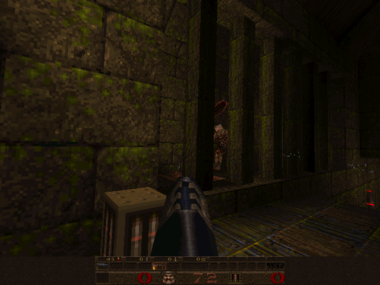
r_drawentities 0
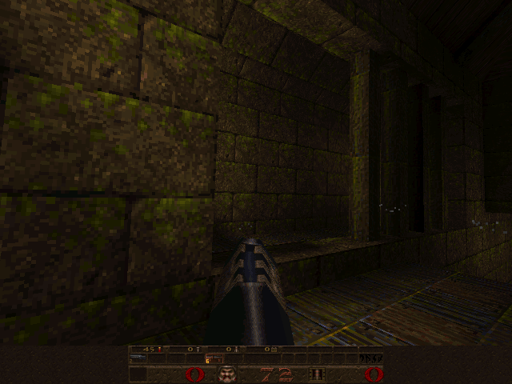
The enemy, pickup and weapon disappear. The bars also disappear: moving brush models are entities. The static BSP world and particles remain.
Surface span rasterization
r_drawflat 0
r_drawflat 1
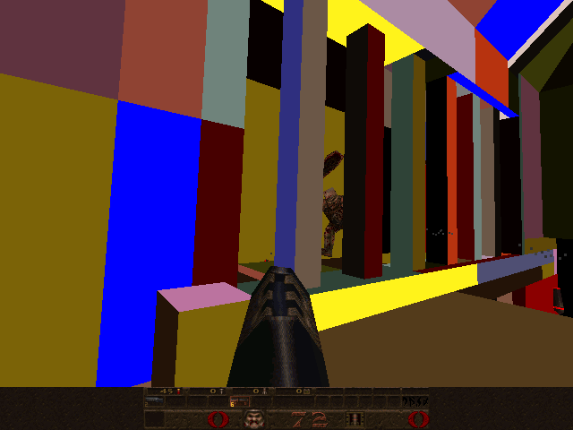
Surfaces are drawn in solid colors without textures, showing how the BSP front-to-back traversal and edge scan conversion partition the visible scene into surface spans.
Renderer counters in the console notification area
r_speeds 0
r_speeds 1
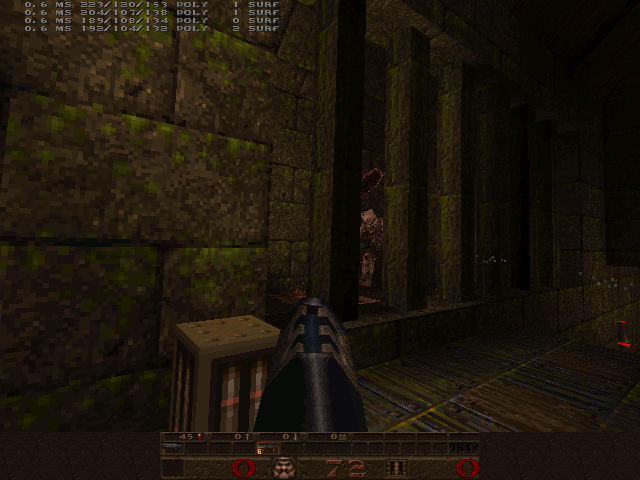
The top-left console notifications show render time in milliseconds, faceclip, polygon count, drawn polygon count, and surface count (c_surf).
GL renderer
Visibility: more submitted geometry need not change the view
r_novis 0
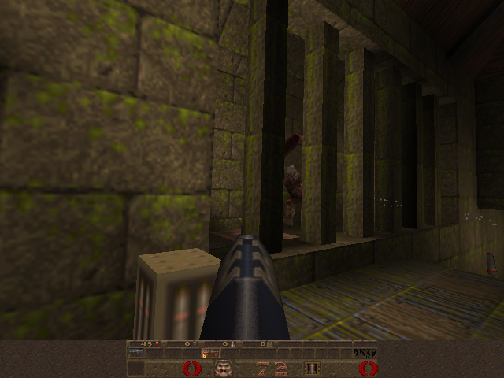
r_novis 1
PVS rejection is disabled. Walls still occlude geometry through depth testing, so a similar image does not imply equal rendering work.
World geometry and entities
r_drawentities 1
r_drawentities 0
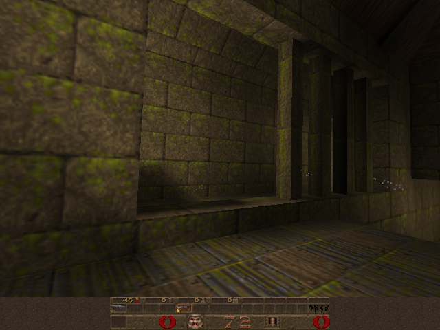
The enemy, pickup and weapon disappear. The bars also disappear: moving brush models are entities. The static BSP world and particles remain.
The lightmap pass
r_lightmap 0
r_lightmap 1
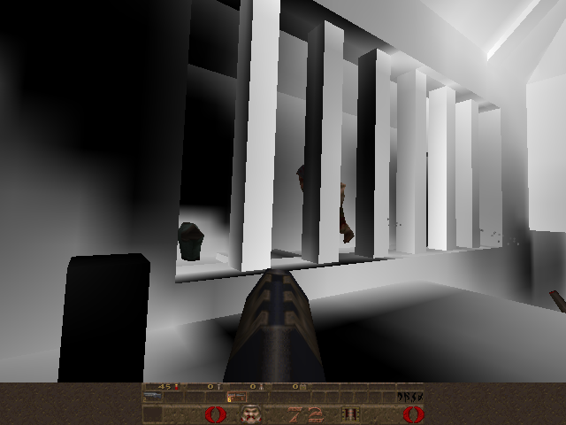
The multipass path draws its lightmap texture without the usual blend. This diagnostic is not a final illumination-only render; entities keep their textures. Both captures use -nomtex and gl_texsort 1.
Renderer counters in the console notification area
r_speeds 0
r_speeds 1
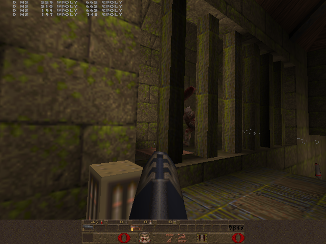
The top-left console notifications show milliseconds, world polygons (wpoly), and entity polygons (epoly). Several recent frames remain visible; the displayed timing is one instrumented run.
Compare renderer
Renderer: GLQuake (OpenGL) vs Software Quake
Software
GL
The exact same camera viewpoint rendered by Software Quake and GLQuake. Software Quake uses the 8-bit paletted software pipeline with surface caching and span rasterization; GLQuake uses hardware rasterization with bilinear filtering and multipass dynamic lightmaps. The shotgun shows the software alias rasterizer: d_polyse.c maps each triangle affinely with no depth divide, so the skin shears and kinks at triangle edges, and Gouraud light quantized through the colormap leaves flat bands per facet. GL is perspective-correct per pixel. Same mesh.
Fullbright texels: e1m1 corridor lamps
Software
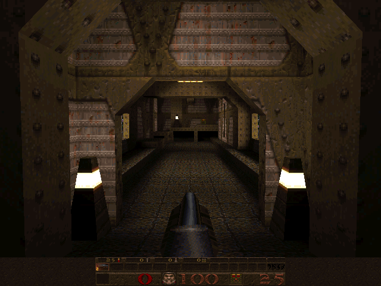
GL
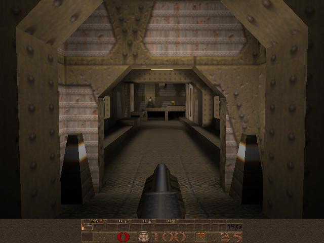
Every light level of the colormap maps palette indices 224–255 to themselves, so the software renderer draws lamp faces at full intensity whatever the lightmap says. GLQuake converts textures to RGB and multiplies every texel by the lightmap, so the same lamps fade into the dark. Torch models are exempt: R_DrawAliasModel forces flame.mdl to full light. Not a demo: a local server, 15 fixed steps forward from spawn.
Dynamic light and particles: demo3 rocket explosion
Software
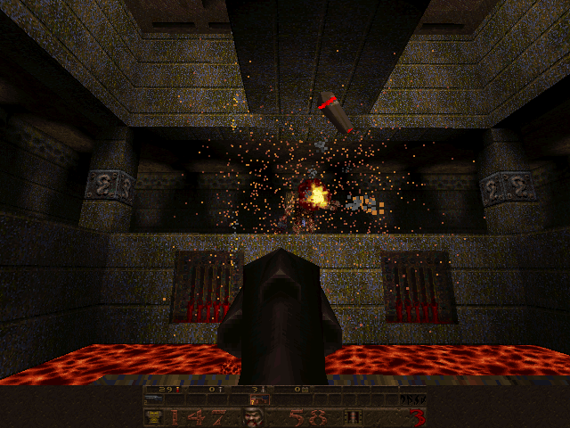
GL
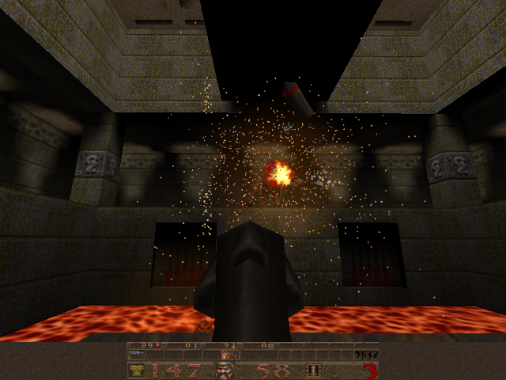
The software renderer adds the explosion dlight into the surface cache, so nearby walls brighten. GLQuake defaults to gl_flashblend 1: lightmaps are left alone and R_RenderDlights draws an additive sphere instead. Particles are distance-scaled squares in software and small textured triangles in GL. Same demo message in both.
In the baseline loop, _Host_Frame calls SCR_UpdateScreen once per accepted frame. It is the top of the rendering pipeline. The software build's version locks the video buffer and calls the view code:
D_DisableBackBufferAccess (); // for adapters that can't stay mapped in
// for linear writes all the time
VID_LockBuffer ();
V_RenderView ();
VID_UnlockBuffer ();
(WinQuake/screen.c:808 is SCR_UpdateScreen's definition.) Software pixels land in vid.buffer (WinQuake/vid.h:36), a CPU back buffer. VID_LockBuffer maps it (Windows: MGL_beginDirectAccess, then vid.buffer is the surface, WinQuake/vid_win.c:1717-1746). Span drawers write d_viewbuffer, equal to vid.buffer unless r_dowarp redirects to r_warpbuffer (WinQuake/d_init.c:126-129). HUD drawing uses the same buffer; VID_Update blits rectangles (WinQuake/screen.c:949-977).
V_RenderView (WinQuake/view.c:995) is shared between both builds. It computes the refdef (view origin/angles, including bob and punch-kick), pushes dynamic lights, and calls the renderer-specific R_RenderView:
void V_RenderView (void)
{
if (con_forcedup)
return;
...
if (cl.intermission)
{ // intermission / finale rendering
V_CalcIntermissionRefdef ();
}
else
{
if (!cl.paused /* && ... */ )
V_CalcRefdef ();
}
R_PushDlights ();
...
R_RenderView ();
R_RenderView is then implemented separately in WinQuake/r_main.c:1049 (software, a stack-alignment guard that calls the real work in R_RenderView_ at r_main.c:953) and in WinQuake/gl_rmain.c:1104 (GL). From here the two renderers do not share drawing code again until particle drawing (r_part.c, #ifdef GLQUAKE-forked in place). Entity dispatch is not shared: software R_DrawEntitiesOnList is WinQuake/r_main.c:527; GL's is WinQuake/gl_rmain.c:602.
#View setup: bob, punchangle, and color shifts (view.c)
Before either renderer touches a BSP node, V_CalcRefdef (WinQuake/view.c:864) builds r_refdef — the single struct both renderers treat as ground truth for the frame (origin, angles, FOV, viewport rect). Bob and punchangle are folded into that camera, not the scene. Color shifts are applied later, and differently per renderer.
View bob — a sinusoidal vertical/forward offset proportional to XY speed, meant to sell the feeling of a body moving on foot without any actual skeletal animation:
float V_CalcBob (void)
{
float bob;
float cycle;
cycle = cl.time - (int)(cl.time/cl_bobcycle.value)*cl_bobcycle.value;
cycle /= cl_bobcycle.value;
if (cycle < cl_bobup.value)
cycle = M_PI * cycle / cl_bobup.value;
else
cycle = M_PI + M_PI*(cycle-cl_bobup.value)/(1.0 - cl_bobup.value);
// bob is proportional to velocity in the xy plane
// (don't count Z, or jumping messes it up)
bob = sqrt(cl.velocity[0]*cl.velocity[0] + cl.velocity[1]*cl.velocity[1]) * cl_bob.value;
bob = bob*0.3 + bob*0.7*sin(cycle);
if (bob > 4)
bob = 4;
else if (bob < -7)
bob = -7;
return bob;
}
Punchangle — the recoil/impact kick the server applies to cl.punchangle (set from svc_... messages elsewhere) is summed straight into the view angles right before stair-step smoothing:
Color shifts (cshift) — four slots (CSHIFT_CONTENTS / CSHIFT_DAMAGE / CSHIFT_BONUS / CSHIFT_POWERUP, WinQuake/client.h:56-60). Water/slime/lava share CSHIFT_CONTENTS via the cshift_water / cshift_slime / cshift_lava templates (WinQuake/view.c:254-257, copied in V_SetContentsColor, WinQuake/view.c:418). The two renderers apply them differently: the software build owns an 8-bit indexed palette, so it rewrites the palette itself every frame a shift is active —
V_CalcPowerupCshift ();
...
// drop the damage value
cl.cshifts[CSHIFT_DAMAGE].percent -= host_frametime*150;
if (cl.cshifts[CSHIFT_DAMAGE].percent <= 0)
cl.cshifts[CSHIFT_DAMAGE].percent = 0;
The software path's central design constraint is that there is no rasterizer hardware at all — every filled pixel costs CPU cycles for texture sampling, lighting, and the write itself. On a 60-100MHz Pentium-class part in 1996, filling pixels twice (overdraw) was directly, linearly wasted work. So the software renderer inverts the naive "walk polygons, scan-convert each one, z-test each pixel" approach and instead computes exactly which pixel spans are visible before any texturing happens, via a global edge list and an active-surface stack sorted by depth — the technique Michael Abrash devotes roughly a dozen chapters of the Graphics Programming Black Book to (chapters 57-70, "Quake's Visible-Surface Determination" and related).
R_SetupFrame ();
#ifdef PASSAGES
SetVisibilityByPassages ();
#else
R_MarkLeaves (); // done here so we know if we're in water
#endif
// make FDIV fast. This reduces timing precision after we've been running for a
// while, so we don't do it globally. This also sets chop mode, and we do it
// here so that setup stuff like the refresh area calculations match what's
// done in screen.c
Sys_LowFPPrecision ();
PASSAGES is commented out at WinQuake/r_main.c:25, so R_MarkLeaves always runs. R_SetupFrame (WinQuake/r_misc.c:367) resets per-frame counters, applies ambient light and light-style animation (R_AnimateLight), and bumps r_framecount. R_MarkLeaves (WinQuake/r_main.c:491) stamps visframe from the camera leaf's PVS; BSP and PVS covers that walk.
The real work happens in R_EdgeDrawing (WinQuake/r_main.c:876), which allocates a stack-resident edge/surface pool, emits world and brush-model edges, then sweeps:
r_drawculledpolys is a debug path that scans before brush models. The shipped path scans after R_DrawBEntitiesOnList (WinQuake/r_main.c:744), which inserts doors and plats into the same edge table as the world.
R_RenderWorld (WinQuake/r_bsp.c:648) sets modelorg to the eye position (in model space) and recurses R_RecursiveWorldNode from the root, front-to-back-ordered by which side of each splitting plane the eye is on:
The initial clipflags of 15 (all four frustum-plane bits set) is the seed for hierarchical frustum culling: R_RecursiveWorldNode (WinQuake/r_bsp.c:448) tests each node's bounding box against only the still-relevant clip planes, clearing bits once a plane trivially accepts the whole subtree, so deep, on-screen parts of the BSP stop paying the clip cost:
if (clipflags)
{
for (i=0 ; i<4 ; i++)
{
if (! (clipflags & (1<<i)) )
continue; // don't need to clip against it
pindex = pfrustum_indexes[i];
rejectpt[0] = (float)node->minmaxs[pindex[0]];
rejectpt[1] = (float)node->minmaxs[pindex[1]];
rejectpt[2] = (float)node->minmaxs[pindex[2]];
d = DotProduct (rejectpt, view_clipplanes[i].normal);
d -= view_clipplanes[i].dist;
if (d <= 0)
return;
acceptpt[0] = (float)node->minmaxs[pindex[3+0]];
acceptpt[1] = (float)node->minmaxs[pindex[3+1]];
acceptpt[2] = (float)node->minmaxs[pindex[3+2]];
d = DotProduct (acceptpt, view_clipplanes[i].normal);
d -= view_clipplanes[i].dist;
if (d >= 0)
clipflags &= ~(1<<i); // node is entirely on screen
}
}
This accept/reject-corner trick (picking the two box corners most/least aligned with a plane's normal via the precomputed pfrustum_indexes sign table) is exactly the frustum test Abrash walks through in the Black Book — no square roots, no per-vertex transform, just sign-driven corner selection. Notably, the software renderer has no R_CullBox-style generic helper — the corner logic is inlined directly in R_RecursiveWorldNode for speed, whereas the GL renderer (below) factors the equivalent test into a reusable BoxOnPlaneSide-based function.
Leaf nodes push their marked surfaces (SURF_... flagged msurface_ts, WinQuake/model.h:102) into visibility for the frame; interior nodes pick a side via the splitting plane and, for solid, front-facing surfaces, call R_RenderFace (WinQuake/r_draw.c:386), which walks the surface's edge loop and hands each edge to the global edge-insertion machinery (R_ClipEdge at WinQuake/r_draw.c:259, R_EmitCachedEdge at WinQuake/r_draw.c:363; edge results land in newedges[]/removeedges[] scan-line buckets declared at WinQuake/r_edge.c:46-47). Each surface polygon becomes a doubly-linked list of edge_t (WinQuake/r_shared.h:144-153) sorted by screen-space u, one bucket per scanline where the edge starts/ends — the classic "global edge table" from software-rasterizer literature, here specialized so a single sweep never has to re-sort more than the edges newly entering or leaving that row.
Sweeping one scanline through the edge list
Active edge list at this scanline
x
Edge
Effect
A simplified simulation, not the shipped code. Three convex polygons at
fixed depths stand in for a scene; the real renderer builds this list from projected BSP
surfaces and sorts by a key encoding traversal order. What is faithful is the shape of the
work: edges enter and leave an active list ordered by x, each crossing pushes or pops
a surface, and the nearest surface on the stack owns the span until the next crossing. That
is why overdraw is eliminated rather than merely reduced — a covered span is never emitted,
so it is never drawn. Depths here are constant per polygon, which the real span sort does not
assume.
R_ScanEdges (WinQuake/r_edge.c:663) is the sweep itself: for each scanline it inserts newly-active edges into a horizontally-sorted active edge list, then calls pdrawfunc — default R_GenerateSpans (WinQuake/r_edge.c:148,588), which decides whether a surface is entering (R_LeadingEdge, WinQuake/r_edge.c:460) or leaving (R_TrailingEdge, WinQuake/r_edge.c:416) the active set. That maintains a surface stack ordered by a key field that encodes BSP traversal order. r_draworder switches pdrawfunc to R_GenerateSpansBackward / R_LeadingEdgeBackwards.
bottom = r_refdef.vrectbottom - 1;
for (iv=r_refdef.vrect.y ; iv<bottom ; iv++)
{
current_iv = iv;
fv = (float)iv;
// mark that the head (background start) span is pre-included
surfaces[1].spanstate = 1;
if (newedges[iv])
{
R_InsertNewEdges (newedges[iv], edge_head.next);
}
(*pdrawfunc) ();
The surface stack sort is the payoff: because the world BSP is walked front-to-back, a surface's key (WinQuake/r_shared.h:85, "sorting key (BSP order)") is already nearly depth-ordered, so R_LeadingEdge only has to walk from the current top-of-stack to find the insertion point. On a BSP-key tie between two brush models it compares interpolated 1/z (d_ziorigin plus u/v steps), not the nearzi field — that one is for mip selection:
if (surf->key < surf2->key)
goto newtop;
...
if (surf->insubmodel && (surf->key == surf2->key))
{
// must be two bmodels in the same leaf; sort on 1/z
fu = (float)(edge->u - 0xFFFFF) * (1.0 / 0x100000);
newzi = surf->d_ziorigin + fv*surf->d_zistepv +
fu*surf->d_zistepu;
newzibottom = newzi * 0.99;
...
if (newzibottom >= testzi)
{
goto newtop;
Whenever the topmost surface on the stack changes, the accumulated span is appended to that surface's spans list. Opaque world surfaces therefore own only the horizontal runs where they are frontmost; world texturing does not z-test. D_DrawZSpans still writes a 16-bit z-buffer so later alias, sprite, and particle passes can depth-test against the world. See Abrash, Graphics Programming Black Book, chapters on "Adventures in Sorting" and "The Genesis of a General-Purpose Polygon Engine": https://www.jagregory.com/abrash-black-book/
Once a scanline's spans threaten to exceed the preallocated MAXSPANS budget, or at end of frame, D_DrawSurfaces (declared WinQuake/d_iface.h:154) is called to actually texture each surface's span list.
Texturing a lightmapped BSP surface in software means resampling the base texture and blending up to four lightstyles into it — expensive enough that Quake caches the composited result per surface rather than recomputing it every time the surface is visible. D_CacheSurface (WinQuake/d_surf.c:264) is the entry point, called from D_DrawSurfaces's per-surface span walk in WinQuake/d_edge.c:300:
surfcache_t *D_CacheSurface (msurface_t *surface, int miplevel)
{
surfcache_t *cache;
//
// if the surface is animating or flashing, flush the cache
//
r_drawsurf.texture = R_TextureAnimation (surface->texinfo->texture);
r_drawsurf.lightadj[0] = d_lightstylevalue[surface->styles[0]];
r_drawsurf.lightadj[1] = d_lightstylevalue[surface->styles[1]];
r_drawsurf.lightadj[2] = d_lightstylevalue[surface->styles[2]];
r_drawsurf.lightadj[3] = d_lightstylevalue[surface->styles[3]];
//
// see if the cache holds apropriate data
//
cache = surface->cachespots[miplevel];
if (cache && !cache->dlight && surface->dlightframe != r_framecount
&& cache->texture == r_drawsurf.texture
&& cache->lightadj[0] == r_drawsurf.lightadj[0]
&& cache->lightadj[1] == r_drawsurf.lightadj[1]
&& cache->lightadj[2] == r_drawsurf.lightadj[2]
&& cache->lightadj[3] == r_drawsurf.lightadj[3] )
return cache;
The cache is keyed by mip level and invalidated when the texture animates, a dynamic light touches the surface, or a lightstyle changes; otherwise the existing surfcache_t (WinQuake/d_local.h:37-49) is reused untouched. On a miss, D_SCAlloc allocates from a renderer-private heap sized by SURFCACHE_SIZE_AT_320X200 (WinQuake/d_local.h:35) and R_DrawSurface rebuilds the pixels. Eviction is not LRU: a single rover pointer sweeps the heap in address order, freeing and coalescing whatever blocks it lands on until the request fits, and wrapping to the start when it runs off the end. r_cache_thrash is set when that wrap happens more than once in a frame — the signal that the working set no longer fits.
.plan. “increased surface cache size” — Carmack, 12 Jun 1996. The design history traces why this cache existed. Its budget was a release-time tuning parameter: higher resolutions increased the set of distinct surface/lightmap composites the software path had to keep.
The final step is walking each surface's horizontal spans and writing textured, lit pixels. True per-pixel perspective correction (dividing by depth for every texel) was too slow for 1996 CPUs, so Quake's span drawers compute the perspective-correct s/t texture coordinates only every N pixels and linearly interpolate (affine-map) the texels in between — Abrash's classic "subdivided affine" approximation. The 8-bit portable-C polygon span drawer subdivides every 8 pixels:
do
{
pdest = (unsigned char *)((byte *)d_viewbuffer +
(screenwidth * pspan->v) + pspan->u);
count = pspan->count;
// calculate the initial s/z, t/z, 1/z, s, and t and clamp
du = (float)pspan->u;
dv = (float)pspan->v;
sdivz = d_sdivzorigin + dv*d_sdivzstepv + du*d_sdivzstepu;
tdivz = d_tdivzorigin + dv*d_tdivzstepv + du*d_tdivzstepu;
zi = d_ziorigin + dv*d_zistepv + du*d_zistepu;
z = (float)0x10000 / zi; // prescale to 16.16 fixed-point
s = (int)(sdivz * z) + sadjust;
(D_DrawSpans8, WinQuake/d_scan.c:257-383, guarded #if !id386 — the shipped x86 build used a hand-tuned assembly equivalent in WinQuake/d_draw.s, traced in the assembly walkthrough.) The turbulent/underwater warp span drawer, Turbulent8 (WinQuake/d_scan.c:122-246), performs the same subdivided-perspective technique but at a coarser 16-pixel granularity (cheaper per-pixel since it also has to apply the sine-wave UV distortion):
do
{
// calculate s and t at the far end of the span
if (count >= 16)
r_turb_spancount = 16;
else
r_turb_spancount = count;
count -= r_turb_spancount;
if (count)
{
// calculate s/z, t/z, zi->fixed s and t at far end of span,
// calculate s and t steps across span by shifting
sdivz += sdivz16stepu;
tdivz += tdivz16stepu;
zi += zi16stepu;
z = (float)0x10000 / zi; // prescale to 16.16 fixed-point
snext = (int)(sdivz * z) + sadjust;
if (snext > bbextents)
snext = bbextents;
else if (snext < 16)
snext = 16; // prevent round-off error on <0 steps from
The subdivision width is a direct fill-rate/quality tradeoff: too coarse and distant, steeply-angled surfaces visibly warp ("wobble") between correction points; too fine and the per-chunk division (0x10000 / zi) dominates the cost. Abrash discusses tuning this constant in the Black Book chapters on Quake's texture mapper: https://www.jagregory.com/abrash-black-book/
#Alias models, sprites, particles, and the entity list
Skeletal-free MDL models (monsters, the player, pickups) are drawn by R_AliasDrawModel (WinQuake/r_alias.c:703), called per-visible-entity from R_DrawEntitiesOnList (WinQuake/r_main.c:527):
This is Quake's own miniature software triangle rasterizer, entirely separate from the BSP edge-list machinery: it transforms model-space vertices, interpolates lighting per vertex (Gouraud), and rasterizes independent, self-contained affine triangles: D_PolysetDrawSpans8 (WinQuake/d_polyse.c:614) steps s/t by a constant per pixel with no depth divide, the shortcut the world spans above refuse. Monsters are small enough on screen to hide it; the viewmodel is not, and its skin visibly shears and kinks at triangle edges. trivial_accept nonzero skips clipping (R_AliasPrepareUnclippedPoints); trivial_accept == 3 also enables the recursive affine path (WinQuake/r_alias.c:727-728,748-751). R_DrawEntitiesOnList (WinQuake/r_main.c:527-599) dispatches sprites via R_DrawSprite (WinQuake/r_sprite.c:286) for mod_sprite entities and folds dynamic-light contribution into an entity's alight_t before the alias draw call. Brush models are not in this list; they already went through R_DrawBEntitiesOnList. Particles are later still — R_DrawParticles (WinQuake/r_part.c:653) is one function shared textually between both renderers via #ifdef GLQUAKE. Software projects each particle to a Z-tested square of 1–N pixels (D_DrawParticle, WinQuake/d_part.c:55); D_StartParticles is a no-op. GL draws camera-facing triangles with glBegin(GL_TRIANGLES). Particles never interact with the BSP edge list or lightmaps.
#Assembly walkthrough: where the Pentium speedup comes from
Skip this section on a first pass; D_DrawSpans8 in WinQuake/d_scan.c:257-383 is the algorithm. The assembly is the same mapper with a different schedule.
The assembly makes most sense after surface caching and span generation: Quake has already decided which pixels survive visibility testing and has a lit texture ready to sample. Now a small routine must write those pixels millions of times. Follow D_DrawSpans8 in WinQuake/d_draw.s alongside its C equivalent. D_DrawSurfaces obtains the cache and calls through d_drawspans at WinQuake/d_edge.c:299-307.
What “about 2×” measures. In Fabien Sanglard’s “How Michael Abrash doubled Quake framerate”, his 2026 recreation on a Pentium MMX 233 MHz runs the VC++ 6 release build at 42.2 fps with assembly versus 22.7 fps with C: about 1.86× the frame rate. Both run timedemo demo1 with -wavonly +d_subdiv16 0. Disabling 16-pixel subdivision matters because D_DrawSpans16 has no C counterpart. This is a whole-engine comparison on period hardware, not a claim that every assembly routine is twice as fast, or a measurement of today’s compilers. His function-by-function experiment identifies D_DrawSpans8 as the largest contributor.
The selection is explicit in WinQuake/d_init.c:148-155: the x86 build can choose the 16-pixel drawer, while the portable path uses the 8-pixel drawer. The walkthrough below traces the repository’s 8-pixel implementation; it does not reproduce the benchmark.
#1. Keep the integer side working while division runs
#Historical context: perspective correctness vs. affine warping
In 1995–1996, 3D titles on contemporary platforms (PlayStation 1, Sega Saturn, PC titles like Descent) relied on affine texture mapping. Linear interpolation in screen space causes textures on receding walls and floors to warp and swim as the viewpoint shifts.
Carmack refused affine mapping for Quake's world geometry, insisting on perspective-correct texturing. True perspective requires dividing (s, t) by depth z per pixel. On the original P5 Pentium, an 80-bit double-extended precision fdiv instruction took 39 clock cycles. Dividing at every pixel on a 90–133 MHz processor was impossible for real-time rendering.
Carmack and Abrash resolved this with piecewise-linear approximation: compute exact (s/z, t/z, 1/z) perspective endpoints every 8 or 16 pixels, and linearly interpolate across each span. Abrash documented in Black Book Chapter 68 that the polynomial approximation error across 16 pixels is imperceptible on screen except at extreme glancing angles. The cvar d_subdiv16 (WinQuake/d_init.c:148-155) toggles between 16-pixel (D_DrawSpans16) and 8-pixel (D_DrawSpans8) modes.
The 1996 .plan files start after this mapper shipped, so they do not debate it. The preference is still there thirteen years later: affine swim was a ship-blocker.
.plan. I searched around in the level for a view that would confirm my suspicion, and when I found a clear enough view of some angled geometry I saw the tell-tale mid-polygon affine swim in the texture as I rotated. They were using the software rasterizer on the iPhone. — Carmack, 26 Mar 2009, on a later title; same refusal.
Even across 8 or 16 pixels, a 39-cycle division latency was too long to hide behind integer pixel writes. Abrash exploited an architectural detail of the x87 FPU documented in Black Book Chapter 63: setting the FPU control word to 24-bit single precision mode via fldcw dropped fdiv execution time from 39 cycles to 19 cycles.
// make FDIV fast. This reduces timing precision after we've been running for a
// while, so we don't do it globally. This also sets chop mode, and we do it
// here so that setup stuff like the refresh area calculations match what's
// done in screen.c
Sys_LowFPPrecision ();
Pentium FDIV bug. The overlapping fdiv this inner loop depends on is also where Abrash reproduced Intel’s 1994 FDIV bug (missing SRT-table entries; wrong quotients from some camera angles). Romero described that hunt in a 2019 talk; it is not in the .plan files. See Pentium FDIV bug.
The C algorithm already amortizes perspective correction across eight pixels. Once it has the texture coordinates and their steps, its inner loop is tiny:
do
{
*pdest++ = *(pbase + (s >> 16) + (t >> 16) * cachewidth);
s += sstep;
t += tstep;
} while (--spancount > 0);
The assembly keeps that algorithm but changes its execution schedule and its representation of the texture address. The key scheduling opportunity is that drawing the current segment needs its existing integer steps, while calculating a later segment’s endpoint needs floating-point division. Those jobs can overlap. Abrash describes this integer/FPU overlap in [Black Book chapter 68](https://www.phatcode.net/res/224/files/html/ch68/68-03.html (archived: https://web.archive.org/web/20260313002527/https://www.phatcode.net/res/224/files/html/ch68/68-03.html)); his quoted 7.5 cycles per pixel concerns the 16-pixel mapper, so it should not be attached to this 8-pixel listing.
These are ordinary 32-bit x86 instructions plus the x87 floating-point stack, not MMX vector instructions. A few reading conventions are enough: AT&T syntax writes source, destination; % marks a register, $ an immediate constant, and 4(%edi) memory four bytes after %edi. The suffixes b and l mean byte and 32-bit integer operations here. %st(0) is the top x87 stack register; fxch swaps it with another stack entry. C(name) is Quake’s assembler macro for platform-dependent symbol naming (WinQuake/asm_i386.h:25-29).
In the steady path, after writing pixels 0–3, the code advances the perspective quantities to the endpoint needed after the current segment, starts its division, and resumes integer drawing:
LSetupNotLast2:
fadds zi8stepu
fxch %st(2)
fadds sdivz8stepu
fxch %st(2)
flds tdivz8stepu
faddp %st(0),%st(2)
flds fp_64k
fdiv %st(1),%st(0) // z = 1/1/z
// this is what we've gone to all this trouble to
// overlap
LFDIVInFlight2:
movl %ecx,counttemp
addl tstep,%edx
sbbl %ecx,%ecx
movb %al,4(%edi)
addl %ebp,%ebx
movb (%esi),%al
adcl advancetable+4(,%ecx,4),%esi
fp_64k supplies 65536, so the division computes 65536 / zi, preparing a reciprocal depth scaled for 16.16 texture coordinates. The following integer operations do not consume that result. They advance fractional coordinates, write pixel 4 and load the next texel. Pixels 5–7 and segment bookkeeping follow (WinQuake/d_draw.s:480-509). Only when execution returns to LNotLastSegment does it use the division result to multiply s/z and t/z, then convert the new endpoints to integers (WinQuake/d_draw.s:313-330).
Prepare the next segment while finishing this one
Call the current eight-pixel segment k. Its endpoint is boundary k+1; the next segment needs boundary k+2. Read left to right. The two rows show work in one instruction stream, not separate threads.
A dependency diagram, not a cycle-accurate timing chart. In this steady path the next divide is issued after stores 0–3, then overlaps the remaining stores and bookkeeping. Pentium fdiv is 39 cycles at 80-bit precision and 19 after Sys_LowFPPrecision sets 24-bit mode — short enough to finish during the integer stores. This is the inner loop Romero later said Abrash used to reproduce Intel’s 1994 FDIV bug. The first segment and final short segment use different setup paths. Source: WinQuake/d_draw.s:313-330, WinQuake/d_draw.s:400-509, Abrash ch. 63.
This is one instruction stream arranged to keep different execution resources useful. Issuing the divide early creates room to hide its latency; it does not guarantee that every divide finishes before it is needed. The first segment has a separate setup: its initial division overlaps integer coordinate clamping and address preparation (WinQuake/d_draw.s:261-311). The short final segment has its own endpoint calculation. That setup/steady-state/tail structure explains much of the apparent complexity in the assembly.
#2. Turn texture-coordinate overflow into an address increment
The C loop expresses each source address as pbase + floor(s) + floor(t) * cachewidth. The assembly instead keeps a running texel pointer in %esi. It splits each step into a signed integer part and a fractional part. Setup computes two possible integer pointer advances once per segment (WinQuake/d_draw.s:361-398):
Table entry
Stored byte advance
advancetable + 4
base = floor(sstep) + floor(tstep) * cachewidth
advancetable
base + cachewidth — one additional texture row
Here floor(sstep) means the whole-texel component of the fixed-point step, not a floating-point operation in the loop. The fractions are left-justified in 32-bit registers, so wrapping past one texel sets the CPU’s carry flag. Even a negative step fits this decomposition: its integer part rounds downward and its remaining fractional part is nonnegative. A carry then supplies the extra column or row when that fraction wraps.
Advance the fractional t accumulator; carry means an extra row.
sbbl %ecx,%ecx
Compute ecx - ecx - carry: zero without a carry, −1 with one. Save the row decision as a table selector.
movb (%esi),%al
Fetch the current 8-bit texel from the already-lit surface cache.
addl %ebp,%ebx
Advance the fractional s accumulator; this produces a new carry for an extra column.
movb %al,1(%edi)
Write this pixel at a fixed offset in the unrolled segment. mov preserves the carry flag.
adcl advancetable+4(,%ecx,4),%esi
Select the base or extra-row advance, then add it plus the s carry to the source pointer.
The address expression is advancetable + 4 + ecx * 4: ecx = 0 selects the ordinary advance; ecx = -1 selects the extra-row entry. The four outcomes are therefore:
t carry
s carry
Pointer advances by
0
0
base
0
1
base + 1
1
0
base + cachewidth
1
1
base + cachewidth + 1
For example, with a 64-byte cache row and integer steps of one column and zero rows, base is 1. If both fractions wrap, the pointer advances 66 bytes: two columns and one row. No per-pixel multiply, shifts to recover whole coordinates, or conditional branches for those two wrap decisions are needed. The multiplication moved into segment setup. Notice how the flags are part of the data flow: inserting an instruction that changes carry between the s add and adc would break the address calculation.
Eight copies of the pixel work use fixed destination offsets; the full-segment path tests the remaining count once per segment (WinQuake/d_draw.s:400-509). But a wall edge rarely gives a multiple of eight pixels. Drawing beyond the span would overwrite another surface, and extrapolating the texture endpoint could also reach outside the cached image.
The portable code handles the last segment by evaluating perspective at its last actual pixel, using spancount - 1 as the distance, and dividing the coordinate differences by that distance (WinQuake/d_scan.c:338-367). Assembly preserves that endpoint rule while replacing the step divisions with fixed-point reciprocal-table multiplies. Then entryvec_table selects a short-span handler and jmp *jumptemp enters the appropriate drawing path (WinQuake/d_draw.s:514-605). Those handlers arrange the registers and destination offset for the remaining unrolled pixel writes; a single pixel has a separate path (WinQuake/d_draw.s:609-755).
That removes a decrement-and-branch for every tail pixel. It does not make branches or prediction disappear: there is still an indirect dispatch and special-case setup. The tradeoff is more code and more carefully maintained entry conditions in exchange for a shorter frequently executed path.
#4. Build lit texels with byte registers and patched instructions
Now move one stage earlier, to a surface-cache miss. R_DrawSurfaceBlock8_mip0 builds a block of the lit texture that the span drawer will later read. The corresponding C combines an interpolated lighting value with the source palette index and looks up the lit palette index (WinQuake/r_surf.c:368-374):
The index is already naturally two bytes: 0x0000LLTT, with light-table row LL above texture palette index TT. In WinQuake/surf8.s:103-125, the upper bits of %ebx are cleared, then movb %dh,%bh puts the lighting byte in the high byte and movb 15(%esi),%bl puts the texel in the low byte. Together %ebx becomes the index without a separate mask, shift and addition. %ecx constructs a second index alongside it.
0x12345678 is a patch location, not the real colormap address. During R_ViewChanged, Quake makes the relevant code writable, assigns colormap = vid.colormap, and calls R_Surf8Patch (WinQuake/r_main.c:467-473). A table contains addresses such as LBPatch0 - 4: the four-byte displacement immediately before that label (WinQuake/surf8.s:728-760). The patch routine overwrites those displacements with the actual colormap base:
The hot lookup now embeds an invariant address directly in its instruction, freeing a general-purpose register from holding the colormap base. Patching happens outside the texel loop. This is runtime specialization using self-modifying code, with an explicit writable-code setup in this engine.
Finally, %ah and %al collect two lit texels; rorl $16,%eax moves them into the upper half, allowing the next two lookups to fill the lower half. A single movl %eax,12(%edi) writes four neighboring texels into the cache (WinQuake/surf8.s:121-144). The reverse texel order, rotation and little-endian store fit together to preserve their order in memory. This is scalar packing into one 32-bit store, not four simultaneous SIMD lookups.
#What to look for when reading the rest of the assembly
Follow where a value becomes available and where it is next consumed. In the span drawer that exposes a place to overlap division, a carry flag that replaces a coordinate calculation, and a tail whose length becomes a code-entry choice. In the surface builder it exposes a lookup index assembled through byte registers and a constant baked into the instruction stream. These are concrete changes to scheduling and representation around Quake’s renderer design; the concise C loops alone do not show them.
For a source-reading session, trace LNotLastSegment → LSetupNotLast2 → LFDIVInFlight2 → LNotLastSegment first, with a span long enough to take the steady path. Then follow LLastSegment, and only afterward the clamp branches. Keep d_scan.c open as the algorithmic reference and surf8.s as the separate cache-building example.
#GL renderer: texture chains, lightmaps, and hardware rasterization
The GL renderer keeps the same BSP walk logic (front-to-back recursive node traversal driven by the eye's position relative to each splitting plane) because it is still the cheapest way to reject non-visible geometry using the PVS, but it no longer needs the edge list at all — the GPU rasterizer resolves per-pixel visibility itself via the depth buffer. So GL's R_RecursiveWorldNode (WinQuake/gl_rsurf.c:1190) does the same node/leaf recursion as the software version, but instead of feeding an edge table it either draws a surface immediately or, more commonly, links it into one of several texture chains so that all surfaces sharing a texture (and hence a GL bind) are drawn consecutively — minimizing state changes, the GL-era equivalent of the software renderer's overdraw-avoidance concern:
qboolean R_CullBox (vec3_t mins, vec3_t maxs)
{
int i;
for (i=0 ; i<4 ; i++)
if (BoxOnPlaneSide (mins, maxs, &frustum[i]) == 2)
return true;
return false;
}
Its simplicity versus the software renderer's inlined corner-selection code is a good example of the GL renderer trading an additional helper call against the "every cycle counts" discipline the software path was written under — a call the id programmers could make once the GPU was doing the actual per-pixel work.
Once the BSP walk finishes, DrawTextureChains (WinQuake/gl_rsurf.c:1029) flushes the per-texture chains built above, in ordinary (non-multitexture) or lightmap-blended passes, and R_DrawWorld (WinQuake/gl_rsurf.c:1316) ties it together:
Lightmaps are precomputed low-resolution light grids baked at BSP-compile time and, at runtime, packed into shared BLOCK_WIDTH x BLOCK_HEIGHT GL texture atlases (lightmaps[], WinQuake/gl_rsurf.c:55; up to MAX_LIGHTMAPS textures starting at texture_extension_number, WinQuake/gl_rsurf.c:1613-1614). Without multitexturing, Quake would have to render every lightmapped surface twice — once for the base texture, once more with the lightmap texture blended over it (visible in the disabled #if 0 legacy path at WinQuake/gl_rsurf.c:316). GL_ARB_multitexture/GL_SGIS_multitexture let both texture units be sampled and combined in a single rasterization pass, which is exactly what R_DrawSequentialPoly (WinQuake/gl_rsurf.c:413) does when available.
.plan. Because of the very fill-rate intensive nature of the way I implemented this version of glquake (using a blend pass to do the light maps), performance is not likely to be very good on any current generation consumer level board except 3dfx. — Carmack, 23 Nov 1996
R_RenderDynamicLightmaps (s);
if (gl_mtexable) {
p = s->polys;
t = R_TextureAnimation (s->texinfo->texture);
// Binds world to texture env 0
GL_SelectTexture(qglMTex0);
GL_Bind (t->gl_texturenum);
glTexEnvf(GL_TEXTURE_ENV, GL_TEXTURE_ENV_MODE, GL_REPLACE);
// Binds lightmap to texenv 1
GL_EnableMultitexture(); // Same as SelectTexture (TEXTURE1)
GL_Bind (lightmap_textures + s->lightmaptexturenum);
i = s->lightmaptexturenum;
if (lightmap_modified[i])
{
lightmap_modified[i] = false;
theRect = &lightmap_rectchange[i];
glTexSubImage2D(GL_TEXTURE_2D, 0, 0, theRect->t,
BLOCK_WIDTH, theRect->h, gl_lightmap_format, GL_UNSIGNED_BYTE,
lightmaps+(i* BLOCK_HEIGHT + theRect->t) *BLOCK_WIDTH*lightmap_bytes);
...
}
glTexEnvf(GL_TEXTURE_ENV, GL_TEXTURE_ENV_MODE, GL_BLEND);
glBegin(GL_POLYGON);
v = p->verts[0];
for (i=0 ; i<p->numverts ; i++, v+= VERTEXSIZE)
{
qglMTexCoord2f (qglMTex0, v[3], v[4]);
qglMTexCoord2f (qglMTex1, v[5], v[6]);
glVertex3fv (v);
}
glEnd ();
return;
}
The Linux GLX probe is CheckMultiTextureExtensions (WinQuake/gl_vidlinuxglx.c:548-584): it checks for GL_SGIS_multitexture or GL_ARB_multitexture and resolves the right entry points (glMTexCoord2fSGIS/glSelectTextureSGIS vs. glMultiTexCoord2fARB/glActiveTextureARB) via dlsym. If gl_mtexable, R_Init forces gl_texsort to 0 (WinQuake/gl_rmisc.c:196-197) so the BSP walk draws with R_DrawSequentialPoly instead of chaining for a later blend pass.
When neither extension is present (gl_mtexable == false), the fallback path in the same function draws the base-textured polygon, then re-binds the lightmap texture and re-draws the same polygon with GL_BLEND enabled — functionally identical output at twice the vertex/rasterization cost, which is exactly the cost multitexturing was designed to eliminate.
Underwater surfaces and sky are both procedurally distorted in texture space rather than geometrically re-tessellated. EmitWaterPolys (WinQuake/gl_warp.c:194) perturbs each pre-fragmented glpoly_t's texture coordinates with a sine lookup table (turbsin[], generated into gl_warp_sin.h) as a function of both the other texture axis and time — a texture-space water effect. The software renderer also warps water texture coordinates in Turbulent8 (WinQuake/d_scan.c:122-246); its separate D_WarpScreen (WinQuake/d_scan.c:44) distorts the final image when the camera is underwater:
void EmitWaterPolys (msurface_t *fa)
{
glpoly_t *p;
float *v;
int i;
float s, t, os, ot;
for (p=fa->polys ; p ; p=p->next)
{
glBegin (GL_POLYGON);
for (i=0,v=p->verts[0] ; i<p->numverts ; i++, v+=VERTEXSIZE)
{
os = v[3];
ot = v[4];
s = os + turbsin[(int)((ot*0.125+realtime) * TURBSCALE) & 255];
s *= (1.0/64);
t = ot + turbsin[(int)((os*0.125+realtime) * TURBSCALE) & 255];
t *= (1.0/64);
glTexCoord2f (s, t);
glVertex3fv (v);
}
glEnd ();
}
}
Sky is drawn in two layers (a slow-scrolling opaque cloud layer and a faster alpha-blended layer) bound to solidskytexture/alphaskytexture, via R_DrawSkyChain (WinQuake/gl_warp.c:304, the #ifndef QUAKE2 variant used by this codebase):
void R_DrawSkyChain (msurface_t *s)
{
msurface_t *fa;
GL_DisableMultitexture();
// used when gl_texsort is on
GL_Bind(solidskytexture);
speedscale = realtime*8;
speedscale -= (int)speedscale & ~127 ;
for (fa=s ; fa ; fa=fa->texturechain)
EmitSkyPolys (fa);
glEnable (GL_BLEND);
GL_Bind (alphaskytexture);
speedscale = realtime*16;
speedscale -= (int)speedscale & ~127 ;
for (fa=s ; fa ; fa=fa->texturechain)
EmitSkyPolys (fa);
glDisable (GL_BLEND);
}
#Alias models: R_DrawAliasModel and gl_mesh.c strips/fans
The GL renderer bounds-culls, lights (identically to the software path's ambient/dlight accumulation), and transforms alias entities in R_DrawAliasModel (WinQuake/gl_rmain.c:446):
but instead of rasterizing triangles itself, it delegates to GL_DrawAliasFrame (WinQuake/gl_rmain.c:289), which walks a command stream built once at model load by gl_mesh.c. BuildTris (WinQuake/gl_mesh.c:198) greedily chains adjacent triangles into GL_TRIANGLE_STRIP or GL_TRIANGLE_FAN runs (StripLength/FanLength, WinQuake/gl_mesh.c:58/127), reducing repeated vertex submissions. The strip/fan length is sign-encoded into a single commands[] int array (positive = strip length, negative = fan length):
GL_DrawAliasFrame then just replays that command stream every frame, re-transforming the (fixed) vertex order against the current frame's pose data and shading:
order = (int *)((byte *)paliashdr + paliashdr->commands);
while (1)
{
// get the vertex count and primitive type
count = *order++;
if (!count)
break; // done
if (count < 0)
{
count = -count;
glBegin (GL_TRIANGLE_FAN);
}
else
glBegin (GL_TRIANGLE_STRIP);
do
{
// texture coordinates come from the draw list
glTexCoord2f (((float *)order)[0], ((float *)order)[1]);
order += 2;
// normals and vertexes come from the frame list
l = shadedots[verts->lightnormalindex] * shadelight;
glColor3f (l, l, l);
glVertex3f (verts->v[0], verts->v[1], verts->v[2]);
verts++;
} while (--count);
glEnd ();
}
Per-vertex lighting here does not compute a dot product against each live normal. shadedots indexes a precomputed table for 162 quantized vertex normals (r_avertexnormal_dots), trading repeated vector math for a lookup.
R_RenderView (WinQuake/gl_rmain.c:1104) clears buffers, then calls R_RenderScene (WinQuake/gl_rmain.c:949), which is the GL analogue of the software R_EdgeDrawing / entity sequence, minus any edge-list bookkeeping:
void R_RenderScene (void)
{
R_SetupFrame ();
R_SetFrustum ();
R_SetupGL ();
R_MarkLeaves (); // done here so we know if we're in water
R_DrawWorld (); // adds static entities to the list
S_ExtraUpdate (); // don't let sound get messed up if going slow
R_DrawEntitiesOnList ();
GL_DisableMultitexture();
R_RenderDlights ();
R_DrawParticles ();
}
GL R_MarkLeaves is WinQuake/gl_rsurf.c:1352, not the software function. GL R_DrawEntitiesOnList (WinQuake/gl_rmain.c:602) is also separate: alias and brush in the first loop, sprites in a second loop "because of alpha blending". R_SetFrustum (WinQuake/gl_rmain.c:769) computes the four frustum plane normals from the current view vectors and FOV (rotating the view-plane-normal by half the horizontal/vertical FOV), which is what R_CullBox tests candidate boxes against for the remainder of the frame.
A QUAKE2 ifdef in R_DrawWorld (WinQuake/gl_rsurf.c:1331-1343) wraps R_ClearSkyBox / R_DrawSkyBox. This tree does not define QUAKE2, so sky is R_DrawSkyChain (WinQuake/gl_warp.c:304, itself under #ifndef QUAKE2).
Both consume r_refdef from V_RenderView. After that they diverge.
World visibility. Software: global edge list → opaque spans, no world-surface overdraw. D_DrawZSpans still writes a 16-bit z-buffer for later objects. GL: GPU depth buffer; surfaces go on texture chains, or R_DrawSequentialPoly immediately when gl_texsort is 0.
World lighting. Software composites lightmaps into the surface cache. GL keeps a lightmap atlas and blends it, or multitextures it.
Brush models (doors, plats). Software inserts them into the world edge list (R_DrawBEntitiesOnList, WinQuake/r_main.c:744). GL draws them with R_DrawBrushModel after the world (WinQuake/gl_rmain.c:620-621).
Alias / sprites. Software: one pass over cl_visedicts after the world (WinQuake/r_main.c:527-599), then viewmodel, then particles. GL: alias+brush first, sprites second (WinQuake/gl_rmain.c:602-639), then dlight sprites and particles insideR_RenderScene; viewmodel, water, and R_PolyBlend run after that (WinQuake/gl_rmain.c:1140-1151).
Warp. Software warps water texcoords in Turbulent8 and, if the camera is underwater, warps the framebuffer with D_WarpScreen. GL warps water texcoords in EmitWaterPolys only.
r_speeds: software R_PrintTimes prints ms, c_faceclip / r_polycount / r_drawnpolycount, and c_surf cache rebuilds (WinQuake/r_misc.c:194-204). GL prints ms, c_brush_polys, c_alias_polys (WinQuake/gl_rmain.c:1153-1157). Share of one measured run is the screen-update bar on the frame map, not a local diagram.
Matthew Earl (Matt's Ramblings), "How Quake's software renderer ELIMINATES overdraw" — the edge list and span sorting, visualised. Title carries a flashing-images warning: https://www.youtube.com/watch?v=zdXsHWHxeBY
The client turns keyboard and mouse input into movement requests. It also decodes server messages into a scene for rendering. These are the two directions of the same conversation; the client’s requested movement is not the authoritative result.
First pass. A key binding such as +forward becomes a console command, then kbutton_t state, then fields in a usercmd_t — a request, not a new position. The client sends that request (clc_move). Later it parses entity updates and draws them, often interpolating between the last two server timestamps (cl.mtime[0] and cl.mtime[1]). Interpolation is not movement prediction; original NetQuake does not run the player’s physics ahead locally. Source: WinQuake/keys.c:599-714, WinQuake/cl_input.c:283-323, WinQuake/cl_main.c:391-434. Next: the server and QuakeC →
Follow one press of “forward”
1 · Client intent“I want to move”usercmd_t
Direction, view angles and buttons. This is a request, not a new position.
2 · Server world“Here is what happened”edict_t
Apply movement, game rules and collision. The server owns the resulting position and health.
3 · Client view“Here is what to show”entity_t
Decode entity updates, prepare positions for drawing, then render the view and mix sounds.
The first handoff sends a movement command; the second sends entity updates. An edict and a render entity are different records, connected by an entity number. In single player these messages pass through in-memory loopback queues; over a network the server runs its own frame loop. Source: WinQuake/cl_input.c:283-323, WinQuake/sv_user.c:600-630, WinQuake/cl_parse.c:330-446.
The interesting part is how Quake chooses the interval
CL_ReadFromServer advances cl.time and drains incoming messages. CL_LerpPoint then fits that clock to the last two server timestamps. There is no configurable snapshot-delay buffer here: Quake keeps two samples and corrects the clock when it gets outside their interval.
The timestamp changes; the stored older position does not. In this illustrative gap, the same two entity positions are interpolated over 100 ms instead of 200 ms. That bounds the interval used for smoothing; it does not reconstruct the missing updates. Source: WinQuake/cl_main.c:391-408, WinQuake/cl_main.c:634-661, Carmack .plan, 10 Aug 1996.
.plan. In the shipping version of Quake, some latency was introduced on purpose to keep the displayed frame simulation time between the last two packets from the server so that the variability in arrival time could be smoothed out. — Carmack, 10 Aug 1996
What happens
What the engine actually does
Client clock passes the newest sample
Clamp the fraction to 1: no movement extrapolation. If the raw fraction exceeds 1.01, also reset cl.time to the newest timestamp. The lower boundary has the matching −0.01 tolerance.
Original local server is active
sv.active forces fraction 1 and resets cl.time to the newest timestamp. Client and local server already run in the same host frame. Zero sample interval, cl_nolerp and timedemo take this same branch.
One entity appears to teleport
Later, CL_RelinkEntities overrides the fraction for that entity if any position component changes by more than 100 units. forcelink also copies the newest pose directly. These decisions do not reset the shared client clock.
When debugging motion, inspect cl.mtime[2] and cl.time first, then the entity’s msg_origins[2] and forcelink. A snap may come from clock correction or from an entity-specific decision. Source: WinQuake/cl_main.c:391-434, WinQuake/cl_main.c:499-533.
Network delay lab
Simplified simulation of the client rule, not a capture. One entity runs a
straight corridor at 320 units per second and teleports 160 units forward at server time
0.600 s. The server sends one snapshot per interval over an unreliable datagram
(WinQuake/net_dgrm.c:301-311); a lost one is simply never replaced. The client
draws 25 frames per second and applies CL_LerpPoint and the
CL_RelinkEntities teleport check, nothing else: two samples, a gap limited to
0.1 s, a fraction clamped to [0, 1], and no extrapolation past the newest sample. This is
original NetQuake — no local physics prediction, no snapshot buffer to tune.
State after the current client frame
Field
Value
Worked trace · 100 ms interval, 50 ms one-way delay, packet 3 lost
Frame
cl.time
mtime[1] → mtime[0]
frac
Displayed
Server
What you see
1 · 0.04 s
0.000 s
0.000 → 0.000 s
1.000
0.0 (0.0 this frame)
12.8
pause. No snapshot has arrived yet: the client has nothing to draw but the start pose.
2 · 0.08 s
0.000 s
0.000 → 0.000 s
1.000
0.0 (0.0 this frame)
25.6
pause. No snapshot has arrived yet: the client has nothing to draw but the start pose.
3 · 0.12 s
0.000 s
0.000 → 0.000 s
1.000
0.0 (0.0 this frame)
38.4
pause. No snapshot has arrived yet: the client has nothing to draw but the start pose.
4 · 0.16 s
0.040 s
0.000 → 0.100 s
0.400
12.8 (12.8 this frame)
51.2
smooth. Snapshot #1 arrived carrying server time 0.100 s; svc_time pushed the previous one into mtime[1]. Displayed motion this frame was 1.0× the nominal per-frame step.
5 · 0.20 s
0.080 s
0.000 → 0.100 s
0.800
25.6 (12.8 this frame)
64.0
smooth. Displayed motion this frame was 1.0× the nominal per-frame step.
6 · 0.24 s
0.100 s reset
0.000 → 0.100 s
1.000
32.0 (6.4 this frame)
76.8
smooth. The raw fraction passed 1.01, so cl.time was pulled back to mtime[0]. Displayed motion this frame was 0.5× the nominal per-frame step.
7 · 0.28 s
0.140 s
0.100 → 0.200 s
0.400
44.8 (12.8 this frame)
89.6
smooth. Snapshot #2 arrived carrying server time 0.200 s; svc_time pushed the previous one into mtime[1]. Displayed motion this frame was 1.0× the nominal per-frame step.
8 · 0.32 s
0.180 s
0.100 → 0.200 s
0.800
57.6 (12.8 this frame)
102.4
smooth. Displayed motion this frame was 1.0× the nominal per-frame step.
9 · 0.36 s
0.200 s reset
0.100 → 0.200 s
1.000
64.0 (6.4 this frame)
115.2
smooth. The raw fraction passed 1.01, so cl.time was pulled back to mtime[0]. Displayed motion this frame was 0.5× the nominal per-frame step.
10 · 0.40 s
0.200 s reset
0.100 → 0.200 s
1.000
64.0 (0.0 this frame)
128.0
pause. The raw fraction passed 1.01, so cl.time was pulled back to mtime[0]. The fraction is clamped at 1 with no newer sample, and NetQuake never extrapolates: the entity waits for the next packet.
11 · 0.44 s
0.200 s reset
0.100 → 0.200 s
1.000
64.0 (0.0 this frame)
140.8
pause. The raw fraction passed 1.01, so cl.time was pulled back to mtime[0]. The fraction is clamped at 1 with no newer sample, and NetQuake never extrapolates: the entity waits for the next packet.
12 · 0.48 s
0.300 s reset
0.300 → 0.400 s clamped
0.000
64.0 (0.0 this frame)
153.6
pause. Snapshot #4 arrived carrying server time 0.400 s; svc_time pushed the previous one into mtime[1]. The pair spanned more than 0.1 s, so mtime[1] was rewritten to 0.300 s while keeping its old position: the same two positions are now swept in 100 ms, faster than the entity really moved. The raw fraction fell below −0.01, so cl.time was pushed up to mtime[1]. The fraction restarted near 0, so this frame redraws the older sample's position: motion resumes from there.
13 · 0.52 s
0.340 s
0.300 → 0.400 s
0.400
89.6 (25.6 this frame)
166.4
smooth. Displayed motion this frame was 2.0× the nominal per-frame step.
14 · 0.56 s
0.400 s reset
0.400 → 0.500 s
0.000
128.0 (38.4 this frame)
179.2
snap. Snapshot #5 arrived carrying server time 0.500 s; svc_time pushed the previous one into mtime[1]. The raw fraction fell below −0.01, so cl.time was pushed up to mtime[1]. The displayed position jumped 38.4 units in one frame, against a nominal 12.8.
15 · 0.60 s
0.440 s
0.400 → 0.500 s
0.400
140.8 (12.8 this frame)
352.0
smooth. Displayed motion this frame was 1.0× the nominal per-frame step.
16 · 0.64 s
0.480 s
0.400 → 0.500 s
0.800
153.6 (12.8 this frame)
364.8
smooth. Displayed motion this frame was 1.0× the nominal per-frame step.
17 · 0.68 s
0.520 s
0.500 → 0.600 s clamped
0.200 forced
352.0 (198.4 this frame)
377.6
snap. Snapshot #6 arrived carrying server time 0.600 s; svc_time pushed the previous one into mtime[1]. The pair spanned more than 0.1 s, so mtime[1] was rewritten to 0.500 s while keeping its old position: the same two positions are now swept in 100 ms, faster than the entity really moved. A component of the delta exceeds 100 units, so CL_RelinkEntities forces f = 1 for this entity: it is drawn at the newest sample, not interpolated. The displayed position jumped 198.4 units in one frame, against a nominal 12.8.
18 · 0.72 s
0.560 s
0.500 → 0.600 s
0.600 forced
352.0 (0.0 this frame)
390.4
pause. A component of the delta exceeds 100 units, so CL_RelinkEntities forces f = 1 for this entity: it is drawn at the newest sample, not interpolated. That sample has not changed, so nothing moves.
19 · 0.76 s
0.600 s
0.600 → 0.700 s
0.000
352.0 (0.0 this frame)
403.2
pause. Snapshot #7 arrived carrying server time 0.700 s; svc_time pushed the previous one into mtime[1]. The fraction restarted near 0, so this frame redraws the older sample's position: motion resumes from there.
20 · 0.80 s
0.640 s
0.600 → 0.700 s
0.400
364.8 (12.8 this frame)
416.0
smooth. Displayed motion this frame was 1.0× the nominal per-frame step.
21 · 0.84 s
0.680 s
0.600 → 0.700 s
0.800
377.6 (12.8 this frame)
428.8
smooth. Displayed motion this frame was 1.0× the nominal per-frame step.
22 · 0.88 s
0.720 s
0.700 → 0.800 s
0.200
390.4 (12.8 this frame)
441.6
smooth. Snapshot #8 arrived carrying server time 0.800 s; svc_time pushed the previous one into mtime[1]. Displayed motion this frame was 1.0× the nominal per-frame step.
23 · 0.92 s
0.760 s
0.700 → 0.800 s
0.600
403.2 (12.8 this frame)
454.4
smooth. Displayed motion this frame was 1.0× the nominal per-frame step.
24 · 0.96 s
0.800 s
0.800 → 0.900 s
0.000
416.0 (12.8 this frame)
467.2
smooth. Snapshot #9 arrived carrying server time 0.900 s; svc_time pushed the previous one into mtime[1]. Displayed motion this frame was 1.0× the nominal per-frame step.
25 · 1.00 s
0.840 s
0.800 → 0.900 s
0.400
428.8 (12.8 this frame)
480.0
smooth. Displayed motion this frame was 1.0× the nominal per-frame step.
Three curves, one time axis. The server line is ground truth, the dots are
what arrived, the stepped line is what the player sees — always behind, because the client
aims to stay between the last two timestamps it holds. The three labels are this
figure's, not the engine's: a pause is a frame that displays no movement — the
fraction clamped at 1 with no newer sample, since NetQuake never extrapolates, or a
fraction restarted at 0 on the older sample. A snap is the >100-unit relink
override, or any displayed jump over 2.5× the per-frame nominal 12.8 units. Lost packets are not
resent or reconstructed; the next snapshot to arrive simply becomes mtime[0]
and pushes the previous one into mtime[1], which is why a loss shows up as a
freeze followed by compressed motion rather than a gap in the path. Sizes and the loss
patterns are chosen to be reproducible, not measured. Source:
WinQuake/cl_main.c:391-434, WinQuake/cl_main.c:499-533, WinQuake/cl_parse.c:773-776,
WinQuake/net_dgrm.c:301-311, WinQuake/net_dgrm.c:370-384.
CL_SendCmd() is called from one of two places depending on topology: WinQuake/host.c:663 (if (sv.active) CL_SendCmd();, before the server simulates — a listen server samples input before running the world and delivers it through the in-process loopback driver), or WinQuake/host.c:686 (if (!sv.active) CL_SendCmd();) for a pure client, after the skipped server-frame block and immediately before the network read. The source comment says incoming messages have already been read, but the executable order is send, then read.
CL_ReadFromServer() — WinQuake/host.c:693 — only when cls.state == ca_connected; this both drains the socket and calls CL_ParseServerMessage, CL_RelinkEntities, CL_UpdateTEnts.
On Windows, Sys_SendKeyEvents (WinQuake/sys_win.c:641-656) is just a PeekMessage/GetMessage/DispatchMessage pump; the actual key translation happens in the window procedure, which eventually calls Key_Event(int key, qboolean down) (WinQuake/keys.c:599). Key_Event is the single funnel for every physical input source — keyboard, mouse buttons (WinQuake/in_win.c:561, 567, 659, 665), joystick buttons (WinQuake/in_win.c:982, 988, 1015, 1020) all call it with a "key number" and up/down state.
The design problem Key_Event solves: keybindings map a keynum to a command string, and "button" commands (leading +) need matching press/release pairs even though two different physical keys can be bound to the same logical action (e.g. mouse2 and space both bound to +jump). The fix is to pass the keynum as a text argument to the queued command, so the release handler (KeyUp, see below) knows which physical key came up:
Note this never touches usercmd_t directly — it only appends text to the console command buffer (Cbuf_AddText), which Cbuf_Execute() runs later in the same frame (WinQuake/host.c:657). This is the same mechanism used for ordinary console commands, which is why every movement key can also be bound to an arbitrary console command string.
typedef struct
{
int down[2]; // key nums holding it down
int state; // low bit is down state
} kbutton_t;
down[2] is the two-physical-keys-one-logical-button design mentioned above. KeyDown/KeyUp (WinQuake/cl_input.c:58-84, 87-115) update it from the keynum argument that Key_Event embedded in the command string:
void KeyDown (kbutton_t *b)
{
int k;
char *c;
c = Cmd_Argv(1);
if (c[0])
k = atoi(c);
else
k = -1; // typed manually at the console for continuous down
if (k == b->down[0] || k == b->down[1])
return; // repeating key
if (!b->down[0])
b->down[0] = k;
else if (!b->down[1])
b->down[1] = k;
else
{
Con_Printf ("Three keys down for a button!\n");
return;
}
if (b->state & 1)
return; // still down
b->state |= 1 + 2; // down + impulse down
}
state bit 0 is "currently down", bits 1/2 are edge-triggered "went down" / "went up" impulses within this frame. CL_KeyState (WinQuake/cl_input.c: 171-202) turns that bit state into an analog fraction the movement code can scale a speed by, which matters because a key can be pressed and released within a single frame at low framerate:
float CL_KeyState (kbutton_t *key)
{
float val;
qboolean impulsedown, impulseup, down;
impulsedown = key->state & 2;
impulseup = key->state & 4;
down = key->state & 1;
val = 0;
if (impulsedown && !impulseup)
if (down)
val = 0.5; // pressed and held this frame
else
val = 0; // I_Error ();
if (impulseup && !impulsedown)
if (down)
val = 0; // I_Error ();
else
val = 0; // released this frame
if (!impulsedown && !impulseup)
if (down)
val = 1.0; // held the entire frame
else
val = 0; // up the entire frame
if (impulsedown && impulseup)
if (down)
val = 0.75; // released and re-pressed this frame
else
val = 0.25; // pressed and released this frame
key->state &= 1; // clear impulses
The 0.25/0.5/0.75/1.0 scale is a crude time-fraction estimate — it doesn't know when within the frame the tap happened, only whether an edge occurred, so it approximates. This matters more on old, low, variable framerates than on modern hardware.
IN_Move is the platform-specific entry point called once per frame from CL_SendCmd (see below); the Windows implementation (WinQuake/in_win.c:738-746) just fans out to the mouse and joystick handlers:
IN_MouseMove (WinQuake/in_win.c:581-724) reads either DirectInput device deltas or (in the non-DirectInput path, further down the function) raw GetCursorPos deltas, applies m_filter smoothing and sensitivity, then converts pixel deltas directly into usercmd_t fields or view-angle deltas — mouse input bypasses the kbutton_t/CL_KeyState machinery entirely because it is naturally continuous, not edge-triggered:
This writes cl.viewangles (what the renderer uses) as well as move fields of cmd. CL_SendMove later serializes cl.viewangles, not cmd->viewangles (WinQuake/cl_input.c:352-353). The client owns look direction during play; the server can still overwrite it with svc_setangle (WinQuake/cl_parse.c:813-816) on spawn and teleport.
if (cls.signon == SIGNONS)
{
// get basic movement from keyboard
CL_BaseMove (&cmd);
// allow mice or other external controllers to add to the move
IN_Move (&cmd);
// send the unreliable message
CL_SendMove (&cmd);
}
CL_BaseMove (WinQuake/cl_input.c:283-323) first calls CL_AdjustAngles, then zeroes and fills a fresh usercmd_t from the kbutton_t states via CL_KeyState:
CL_AdjustAngles (WinQuake/cl_input.c:232-253) is where keyboard-driven turning (as opposed to mouse look) updates cl.viewangles, scaled by host_frametime so turn rate is framerate-independent:
Mouse and keyboard share cl.viewangles. Keyboard yaw is host_frametime * cl_yawspeed (framerate-independent). Mouse yaw is a pixel delta times m_yaw, applied after CL_BaseMove via IN_Move, so it is not time-scaled. +strafe steals keyboard left/right into sidemove; with lookstrafe, mouse X as well.
usercmd_t (WinQuake/client.h:22-33) holds intended velocities and a viewangles field. CL_BaseMovememsets the struct and fills only the move floats — never cmd->viewangles. The #ifdef QUAKE2lightlevel field is compiled out of shipping NetQuake:
MSG_WriteByte (&buf, clc_move);
MSG_WriteFloat (&buf, cl.mtime[0]); // so server can get ping times
for (i=0 ; i<3 ; i++)
MSG_WriteAngle (&buf, cl.viewangles[i]);
MSG_WriteShort (&buf, cmd->forwardmove);
MSG_WriteShort (&buf, cmd->sidemove);
MSG_WriteShort (&buf, cmd->upmove);
//
// send button bits
//
bits = 0;
if ( in_attack.state & 3 )
bits |= 1;
in_attack.state &= ~2;
if (in_jump.state & 3)
bits |= 2;
in_jump.state &= ~2;
MSG_WriteByte (&buf, bits);
MSG_WriteByte (&buf, in_impulse);
in_impulse = 0;
The wire clc_move is that struct plus extras: cl.mtime[0], angles taken from cl.viewangles, attack/jump bits, and an impulse byte (WinQuake/cl_input.c:348-375). cl.mtime[0] is the server timestamp from the last parsed svc_time (WinQuake/cl_parse.c:773-776) — the newer of the two slots CL_LerpPoint will use. Piggybacking it on every move is the ping mechanism: the server stores sv.time - MSG_ReadFloat() in host_client->ping_times[host_client->num_pings % NUM_PING_TIMES] (WinQuake/sv_user.c:445-447). The first two clc_moves after a level are dropped (WinQuake/cl_input.c:394-395) so leftover keys from the previous map never fire.
The move goes via NET_SendUnreliableMessage (WinQuake/cl_input.c:397) rather than the reliable stream: a lost movement packet is harmless because the next frame sends a fresh, complete command a fraction of a second later — retransmitting a stale input would be actively wrong. Perishable state rides the lossy channel; signon, stringcmds, and other data that must arrive ride the reliable one. CL_SendCmd flushes cls.message on that reliable channel after the move, if anything is queued (WinQuake/cl_main.c:696-709).
#Net layer: driver abstraction, loopback, and datagram delivery
NET_SendMessage / NET_GetMessage (WinQuake/net_main.c:625-653, 540-603) are thin wrappers that dispatch to a driver vtable (sfunc) chosen per-socket — either the loopback driver (net_loop.c, used for single-player and to talk to your own listen server) or a real datagram driver (net_dgrm.c, UDP/IPX). There is no QuakeWorld netchan_t; each qsocket_t holds its own reliable and unreliable sequence counters and a one-message reliable window (canSend):
int NET_SendMessage (qsocket_t *sock, sizebuf_t *data)
{
int r;
if (!sock)
return -1;
if (sock->disconnected)
{
Con_Printf("NET_SendMessage: disconnected socket\n");
return -1;
}
SetNetTime();
r = sfunc.QSendMessage(sock, data);
if (r == 1 && sock->driver)
messagesSent++;
net_loop.c implements this vtable without touching a real socket at all: Loop_SendMessage (WinQuake/net_loop.c:154-183) copies the serialized message into the other endpoint's linear receiveMessage buffer, and Loop_GetMessage (WinQuake/net_loop.c:127-150) reads it back out:
int Loop_GetMessage (qsocket_t *sock)
{
int ret;
int length;
if (sock->receiveMessageLength == 0)
return 0;
ret = sock->receiveMessage[0];
length = sock->receiveMessage[1] + (sock->receiveMessage[2] << 8);
// alignment byte skipped here
SZ_Clear (&net_message);
SZ_Write (&net_message, &sock->receiveMessage[4], length);
length = IntAlign(length + 4);
sock->receiveMessageLength -= length;
if (sock->receiveMessageLength)
Q_memcpy(sock->receiveMessage, &sock->receiveMessage[length], sock->receiveMessageLength);
if (sock->driverdata && ret == 1)
((qsocket_t *)sock->driverdata)->canSend = true;
return ret;
}
This is why single-player and listen-server-hosted LAN play use the same message format and parser as remote play. The client and server halves in one process use two qsocket_ts pointed at each other through driverdata, and the client still consumes messages through CL_ParseServerMessage.
net_dgrm.c is the real driver, and it implements two delivery models over one UDP socket per connection:
Reliable stream (used for the signon sequence, svc_print, level changes, etc. — anything that must arrive and arrive in order): Datagram_SendMessage (WinQuake/net_dgrm.c:161-205) fragments messages larger than MAX_DATAGRAM (1024 bytes, WinQuake/quakedef.h:102) into NETFLAG_DATA-tagged packets carrying a monotonically increasing sendSequence, sets canSend = false, and won't send the next fragment until the peer ACKs the current one. Datagram_GetMessage (WinQuake/net_dgrm.c:315-463) resends the unacked packet after a 1-second timeout (ReSendMessage, WinQuake/net_dgrm.c:241-271, gated at WinQuake/net_dgrm.c:324-326), and processes incoming ACKs like this:
Unreliable datagrams (used for clc_move and entity fast updates — anything perishable, sent every frame): Datagram_SendUnreliableMessage (WinQuake/net_dgrm.c:289-312) fires and forgets, tagging the packet NETFLAG_UNRELIABLE with its own independent sequence counter (unreliableSendSequence). On the receive side (WinQuake/net_dgrm.c:370-384): a sequence older than unreliableReceiveSequence is discarded as stale; a gap increments droppedDatagrams and the later packet is still accepted (the sequence jumps forward). Nothing is retransmitted. The next snapshot is a full baseline delta, so a lost unreliable update does not poison the next one. Reliable data with the wrong receiveSequence is counted as a duplicate and dropped (WinQuake/net_dgrm.c:433-436).
Only one reliable message may be in flight per connection at a time (canSend gates it). Signon and control messages are low-volume compared with the independent per-frame unreliable snapshot stream, so the protocol needs no reliable sliding window.
MSG_Write*/MSG_Read* in common.c are the shared serialization primitives both cl_input.c/cl_parse.c and the server side use. Two are protocol-defining and bandwidth-driven: MSG_WriteCoord packs a world coordinate into a 16-bit fixed-point value at 1/8-unit precision, and MSG_WriteAngle packs a full 0-360° angle into a single byte:
1/8-unit position precision and ~1.4°-angle precision are both imperceptible in-game but cut the per-axis cost from a 32-bit float to 16 or 8 bits — with dozens of entities updated every frame over a 28.8k modem, this quantization was not optional polish, it was the difference between a playable and unplayable connection.
CL_ReadFromServer (WinQuake/cl_main.c:634-663) drains every waiting message this frame (there can be more than one if the client is behind), parses each, and only then relinks entities and updates temp-entity effects:
int CL_ReadFromServer (void)
{
int ret;
cl.oldtime = cl.time;
cl.time += host_frametime;
do
{
ret = CL_GetMessage ();
if (ret == -1)
Host_Error ("CL_ReadFromServer: lost server connection");
if (!ret)
break;
cl.last_received_message = realtime;
CL_ParseServerMessage ();
} while (ret && cls.state == ca_connected);
CL_GetMessage (WinQuake/cl_demo.c:90-156) is the actual call site — it wraps NET_GetMessage and transparently interposes demo record/playback (see below).
The bytes of a single server-to-client message, taken from
demo1.dem in id1/pak0.pak. Colour marks what each byte is doing:
a message id, an entity update with its delta bitmask, an entity number, or payload.
Most of the frame is entity updates, and most of those are tiny — an entity that has not
changed costs two bytes, and one that moved costs only the axes that actually moved.
That is the delta compression this section describes, measured on a real frame rather
than asserted. The dissector walks the same field order as
CL_ParseServerMessage and refuses any frame it cannot consume exactly, so a
mislabelled field cannot reach this figure.
CL_ParseServerMessage (WinQuake/cl_parse.c:720-962) is a byte-code interpreter over the message: it reads one opcode byte at a time and either dispatches to CL_ParseUpdate for a "fast update" (top bit set — the packed per-entity delta path) or into a big switch over svc_* opcodes for everything else:
cmd = MSG_ReadByte ();
if (cmd == -1)
{
SHOWNET("END OF MESSAGE");
return; // end of message
}
// if the high bit of the command byte is set, it is a fast update
if (cmd & 128)
{
SHOWNET("fast update");
CL_ParseUpdate (cmd&127);
continue;
}
SHOWNET(svc_strings[cmd]);
// other commands
switch (cmd)
The svc_* opcodes span everything from svc_time, svc_print, svc_serverinfo, svc_setangle, svc_sound, svc_spawnbaseline to svc_intermission (full list WinQuake/cl_parse.c:769-959); most simply read a fixed set of fields and store them into cl or trigger a side effect (e.g. svc_sound calls S_StartSound). svc_time shifts cl.mtime[1] ← cl.mtime[0] and stores the new server clock in cl.mtime[0] (WinQuake/cl_parse.c:773-776). The interesting path for this section is the entity update.
Each entity_t carries a baseline (defaults sent once at spawn via svc_spawnbaseline) and two origin/angle slots (msg_origins[2], msg_angles[2]; slot 0 is newest). cl.mtime[0]/cl.mtime[1] stamp the last two svc_time values. The fast-update byte is a bitmask of which fields this packet carries; missing fields copy from the baseline, not from the previous packet, so a lost snapshot does not poison the next decode.
CL_ParseUpdate(int bits) (WinQuake/cl_parse.c:330-484) implements that mask. Rather than resending every field of every visible entity every frame, the server sends only which fields changed. The mask itself can be extended past the initial byte via U_MOREBITS (WinQuake/protocol.h:25, plus U_ANGLE1 etc. defined up to U_LONGENTITY at WinQuake/protocol.h:35-41):
if (bits & U_MOREBITS)
{
i = MSG_ReadByte ();
bits |= (i<<8);
}
if (bits & U_LONGENTITY)
num = MSG_ReadShort ();
else
num = MSG_ReadByte ();
ent = CL_EntityNum (num);
For each of position/angle per axis, the field is either read from the wire (bit set) or copied from the entity's baseline (the state sent once at level-load via svc_spawnbaseline/CL_ParseBaseline, WinQuake/cl_parse.c:491+) — most entities are stationary or move predictably, so most bits are usually clear (baseline itself is filled in by CL_ParseBaseline, WinQuake/cl_parse.c:491-..., dispatched from svc_spawnbaseline, WinQuake/cl_parse.c:868):
// shift the known values for interpolation
VectorCopy (ent->msg_origins[0], ent->msg_origins[1]);
VectorCopy (ent->msg_angles[0], ent->msg_angles[1]);
if (bits & U_ORIGIN1)
ent->msg_origins[0][0] = MSG_ReadCoord ();
else
ent->msg_origins[0][0] = ent->baseline.origin[0];
if (bits & U_ANGLE1)
ent->msg_angles[0][0] = MSG_ReadAngle();
else
ent->msg_angles[0][0] = ent->baseline.angles[0];
Note the shift-before-read: msg_origins[1] (the previous update) is set from the outgoing msg_origins[0]beforemsg_origins[0] is overwritten with the new value. msg_origins[0]/msg_angles[0] are "newest", [1] is "one update ago" — this two-slot history is exactly what CL_RelinkEntities interpolates between (next section). U_NOLERP lets the server force a hard snap (e.g. teleporters). forcelink is also set when ent->msgtime != cl.mtime[1] — no previous frame to lerp from (WinQuake/cl_parse.c:363-366, 476-482). An entity absent from this message is not kept at its last pose; CL_RelinkEntities nulls its model (WinQuake/cl_main.c:490-494).
typedef struct entity_s
{
qboolean forcelink; // model changed
int update_type;
entity_state_t baseline; // to fill in defaults in updates
double msgtime; // time of last update
vec3_t msg_origins[2]; // last two updates (0 is newest)
vec3_t origin;
vec3_t msg_angles[2]; // last two updates (0 is newest)
vec3_t angles;
origin/angles are what the renderer actually draws; msg_origins[2] / msg_angles[2] are raw server snapshots. CL_RelinkEntities (WinQuake/cl_main.c:442-624) usually blends between the two most recent snapshots using a fraction computed by CL_LerpPoint (WinQuake/cl_main.c:391-434), based on where cl.time (the client's local clock, advanced every frame in CL_ReadFromServer) sits between the timestamps of the last two server messages, cl.mtime[0] and cl.mtime[1] (double mtime[2], WinQuake/client.h:196):
float CL_LerpPoint (void)
{
float f, frac;
f = cl.mtime[0] - cl.mtime[1];
if (!f || cl_nolerp.value || cls.timedemo || sv.active)
{
cl.time = cl.mtime[0];
return 1;
}
if (f > 0.1)
{ // dropped packet, or start of demo
cl.mtime[1] = cl.mtime[0] - 0.1;
f = 0.1;
}
frac = (cl.time - cl.mtime[1]) / f;
if (frac < 0)
{
if (frac < -0.01)
{
SetPal(1);
cl.time = cl.mtime[1];
}
frac = 0;
}
else if (frac > 1)
{
if (frac > 1.01)
{
SetPal(2);
cl.time = cl.mtime[0];
}
frac = 1;
}
else
SetPal(0);
return frac;
}
The 0.1 rewrite bounds a dropped-packet or demo-start gap; it does not invent the missing pose. Keep displayed time between the last two packets (10 Aug 1996). If no new svc_time arrives, CL_ReadFromServer still advances cl.time by host_frametime, frac walks past 1, and the clamp freezes every entity at the newest pose — no extrapolation.
sv.active (running a local/listen server) forces frac = 1 — snap straight to the newest snapshot, no interpolation needed, because the local server ticks in lockstep with the client's own frame loop so there's no inter-packet gap to smooth over. Loopback still uses the same message format and CL_ParseServerMessage; it just copies bytes between two qsocket_ts in one process. For a remote connection, frac walks from 0 to 1 across the interval between the last two updates, and each entity is blended:
if (ent->forcelink)
{ // the entity was not updated in the last message
// so move to the final spot
VectorCopy (ent->msg_origins[0], ent->origin);
VectorCopy (ent->msg_angles[0], ent->angles);
}
else
{ // if the delta is large, assume a teleport and don't lerp
f = frac;
for (j=0 ; j<3 ; j++)
{
delta[j] = ent->msg_origins[0][j] - ent->msg_origins[1][j];
if (delta[j] > 100 || delta[j] < -100)
f = 1; // assume a teleportation, not a motion
}
// interpolate the origin and angles
for (j=0 ; j<3 ; j++)
{
ent->origin[j] = ent->msg_origins[1][j] + f*delta[j];
d = ent->msg_angles[0][j] - ent->msg_angles[1][j];
if (d > 180)
d -= 360;
else if (d < -180)
d += 360;
ent->angles[j] = ent->msg_angles[1][j] + f*d;
}
The >100-unit heuristic distinguishes "the entity teleported" from "the entity is just moving fast," since blending across a teleport would draw a visible streak through the level geometry. The in-tree forcelink comment ("not updated in the last message") is not what drops a missing entity — that is ent->msgtime != cl.mtime[0] just above this block. forcelink means snap: first appearance, U_NOLERP, or no previous frame to lerp from.
Transient, non-persistent effects — bullet impacts, explosions, lightning bolts, the grapple beam — don't get full entity_t slots in the delta-update system at all; they're one-shot events. CL_ParseTEnt (WinQuake/cl_tent.c:115-...) is invoked from svc_temp_entity (WinQuake/cl_parse.c:876), reads a TE_* type byte, and immediately spawns a particle effect, sound, or (for beams like TE_LIGHTNING1..3, WinQuake/cl_tent.c:216-227) a short-lived beam_t tracked outside the normal entity list. CL_UpdateTEnts (WinQuake/cl_tent.c:325-...), called every frame right after CL_RelinkEntities (WinQuake/cl_main.c:657), advances/expires those beams and dynamic lights each frame independent of any further server messages.
A .dem file starts with an ASCII CD-track number and a newline (WinQuake/cl_demo.c:255, 307-314). Each record is then LittleLong(length), three LittleFloat view angles, then length bytes of the raw server message (WinQuake/cl_demo.c:66-80, 117-128). During cls.demoplayback, CL_GetMessage reads those records instead of calling NET_GetMessage (WinQuake/cl_demo.c:90-135) and feeds the same CL_ParseServerMessage path. Playback waits until cl.time > cl.mtime[0] before pulling the next record, except during timedemo. Recording is a side-effect of a live NET_GetMessage (WinQuake/cl_demo.c:152-153).
#No client-side prediction: NetQuake vs. QuakeWorld
NetQuake does not simulate the local player's movement client-side.CL_SendCmd builds a usercmd_t and ships it off. The client keeps rendering, handling look input, and parsing messages while it waits for the server's next entity update. It interpolates between the last two received poses (CL_RelinkEntities, CL_LerpPoint) — including the local player's own cl_entities[cl.viewentity] slot. There is no CL_PredictMove in this codebase, no rewind-and-replay, and no local physics integration of usercmd_t against the world.
View bob, punch-angle kick, and stair smoothing are client presentation applied in V_CalcRefdef (WinQuake/view.c:864-983) on top of the server-authored origin. They are not local movement.
Over loopback and LAN the round trip is short enough that the missing prediction is not obvious. On modem and WAN links the gap between sending input and drawing the resulting pose is visible. QuakeWorld (QW/, a separate tree — not covered here) adds real client-side prediction (QW/client/cl_pred.c) and reconciles against the server's later snapshot. Why NetQuake's client-as-terminal broke on dialup; what QuakeWorld changed.
John Carmack .plan archive (1996) — 10 Aug 1996: NetQuake keeps displayed time between the last two server packets on purpose; QuakeWorld instead predicts from the newest packet. Year dump: 1996 .plan archive.
07 · SoundSound, plus misc engine plumbing
Sound is another client-side presentation of server events. The server names a sound and its location; the client chooses a mixer channel, computes left/right volume and mixes local sample data for the audio device.
First pass. Think sound event → local sample → stereo mix → device buffer. The server sends a sound identifier, not recorded audio. The mixer fills ahead of the playback cursor so audio can continue between frames. The console and memory allocators below support many stages; they are not extra steps after sound. Source: WinQuake/sv_main.c:118-171, WinQuake/cl_parse.c:101-136, WinQuake/snd_dma.c:856-902. Next: demos →
S_Update is called with the render view origin and axes (r_origin, vpn, vright, vup) when cls.signon == SIGNONS; otherwise with zeros, so mixing still fills the device buffer during load screens. CDAudio_Update() after it is not the mixer: it is a CD-ROM transport (WinQuake/cd_win.c:398-417; other ports in cd_*.c) and does not write the DMA buffer. On Windows it only pauses or resumes on bgmvolume. The sound box on the frame map is this whole host_speeds bucket (mix + light decay + CD); integer milliseconds truncate a sub-millisecond mix to zero. Cbuf_Execute (WinQuake/host.c:657) runs once per accepted frame, before networking and simulation. Host_GetConsoleCommands (WinQuake/host.c:672) only queues stdin; those lines run on the next frame's Cbuf_Execute.
S_Update (WinQuake/snd_dma.c:721-808) is _Host_Frame's mixer entry. It stores the listener pose, refreshes the four ambient channels, re-spatializes every active dynamic/static channel, and calls S_Update_ to paint into the DMA buffer. The renderer can also call S_Update_ via S_ExtraUpdate during a slow draw, without re-spatializing.
void S_Update(vec3_t origin, vec3_t forward, vec3_t right, vec3_t up)
{
int i, j;
int total;
channel_t *ch;
channel_t *combine;
if (!sound_started || (snd_blocked > 0))
return;
VectorCopy(origin, listener_origin);
VectorCopy(forward, listener_forward);
VectorCopy(right, listener_right);
VectorCopy(up, listener_up);
// update general area ambient sound sources
S_UpdateAmbientSounds ();
combine = NULL;
// update spatialization for static and dynamic sounds
ch = channels+NUM_AMBIENTS;
for (i=NUM_AMBIENTS ; i<total_channels; i++, ch++)
{
if (!ch->sfx)
continue;
SND_Spatialize(ch); // respatialize channel
Channels are a flat array channel_t channels[MAX_CHANNELS] (WinQuake/snd_dma.c:39, MAX_CHANNELS = 128, WinQuake/sound.h:130). The running mixer uses three index ranges:
NUM_AMBIENTS .. NUM_AMBIENTS+MAX_DYNAMIC_CHANNELS-1 — eight dynamic voices; the only range SND_PickChannel walks (WinQuake/snd_dma.c:363)
NUM_AMBIENTS+MAX_DYNAMIC_CHANNELS .. total_channels — static loops from S_StaticSound (WinQuake/snd_dma.c:620)
NUM_AMBIENTS is 4, MAX_DYNAMIC_CHANNELS is 8 (WinQuake/sound.h:131). Those eight dynamic slots are shared by every entity; they are not one mixer voice per entnum/entchannel. sound.h:135-137 comments the regions in a different order (dynamic, then ambient, then static). S_StopSound (WinQuake/snd_dma.c:519-532) follows the comment: it walks i = 0 .. MAX_DYNAMIC_CHANNELS-1 (slots 0–7). That can clear an ambient and never sees dynamic slots 8–11. SND_PickChannel uses the runtime map. Static origins never move after spawn. S_Update at snd_dma.c:751-784combines static channels that share an sfx into one volume sum ("so we don't mix five torches every frame"). Combined loops keep the selected channel's playback phase.
This is the whole panning model: a dot of the source vector against listener_right is a [-1,1] pan, and linear falloff uses dist_mult = attenuation / sound_nominal_clip_dist (clip 1000, WinQuake/snd_dma.c:54,478). Volume is zero once dist >= 1. No HRTF. View-entity sounds (cl.viewentity: weapon fire, pain) skip both pan and distance and play at master_vol on both ears, so a gunshot at the listener origin cannot collapse to one side.
Hear spatialization
leftvol
rightvol
Worked examples · master_vol 255, stereo, source is not the view entity
Source
attenuation
dot
dist
lscale / rscale
leftvol / rightvol
What it shows
Dead ahead, 300 units
ATTN_NORM (0.001/unit)
0.00
0.30
1.00 / 1.00
178 / 178
Centred: both ears equal.
Directly behind, 300 units
ATTN_NORM
0.00
0.30
1.00 / 1.00
178 / 178
Identical to dead ahead. There is no front/back cue at all.
Hard right (90°), 300 units
ATTN_NORM
1.00
0.30
0.00 / 2.00
0 / 357
rscale peaks at 2, so rightvol overshoots master_vol; leftvol is fully silent. The overshoot lasts while (1 - dist) · 2 > 1, i.e. inside 500/attenuation units.
Hard right (90°), 800 units
ATTN_NORM
1.00
0.80
0.00 / 2.00
0 / 101
Past 500 units the distance term pulls even the 2× ear back under 255. Not 102: (int) truncates, and 0.8 has no exact binary form, so 101.99… becomes 101.
Dead ahead, 400 units
ATTN_STATIC (0.003/unit)
0.00
1.20
1.00 / 1.00
0 / 0
dist ≥ 1 ⇒ negative scale ⇒ clamped to 0. Silent past 1000/attenuation units.
Live geometry, exact arithmetic: the rules are transcribed from
SND_Spatialize (WinQuake/snd_dma.c:404-450) with
dist_mult = attenuation / sound_nominal_clip_dist
(WinQuake/snd_dma.c:484, WinQuake/snd_dma.c:54), as re-run each frame by
S_Update (WinQuake/snd_dma.c:727-753). Simplified: one channel instead of
eight dynamic plus static and ambient ones, no channel combining, stereo only (the
shm->channels == 1 branch forces both scales to 1), and geometry flattened
to the horizontal plane — the engine uses the full 3D vectors, but only the dot with
listener_right reaches the mix, so height changes distance and nothing else.
SND_Spatialize itself clamps only at zero; the 255 ceiling belongs to the 8-bit
painter (WinQuake/snd_mix.c:353-356), and the 16-bit painter
(WinQuake/snd_mix.c:375-397) has none, so an overshoot there amplifies the sample.
Attenuation names and values are QuakeC's ATTN_* constants, quoted from
QuakeWorld's progs — the only copy in this tree (qw-qc/defs.qc:398-401), same
values; the C side only ever sees the resulting float.
Audio is a synthetic tone or one of a few pak0.pak samples (8-bit 11025 Hz
mono, embedded by build.py; one-shots are looped here so the pan stays
audible). The per-ear gain takes the 8-bit painter's
255 clamp and then the 16-bit painter's (data * leftvol) >> 8 scale
(WinQuake/snd_mix.c:390) — two painters' rules combined so the tone cannot
exceed full scale — the tone then scaled down for headroom. The table alone carries the
argument if scripting or audio is unavailable.
Once every channel's leftvol/rightvol are current, S_Update_ (WinQuake/snd_dma.c:856-902) mixes _snd_mixahead seconds ahead of the DMA play cursor (default 0.1, clamped to the buffer, WinQuake/snd_dma.c:82,875-878), restores/resumes the Windows DirectSound buffer if needed, and calls S_PaintChannels (WinQuake/snd_mix.c:261-332):
while (paintedtime < endtime)
{
// if paintbuffer is smaller than DMA buffer
end = endtime;
if (endtime - paintedtime > PAINTBUFFER_SIZE)
end = paintedtime + PAINTBUFFER_SIZE;
// clear the paint buffer
Q_memset(paintbuffer, 0, (end - paintedtime) * sizeof(portable_samplepair_t));
// paint in the channels.
ch = channels;
for (i=0; i<total_channels ; i++, ch++)
{
if (!ch->sfx)
continue;
if (!ch->leftvol && !ch->rightvol)
continue;
sc = S_LoadSound (ch->sfx);
if (!sc)
continue;
ltime = paintedtime;
paintbuffer is a fixed global array of portable_samplepair_t (int left/right accumulators, WinQuake/snd_mix.c:31), PAINTBUFFER_SIZE = 512 samples — never the full DMA buffer, which is why the outer while chunks the work. SND_PaintChannelFrom8/SND_PaintChannelFrom16 (WinQuake/snd_mix.c:346-370, 375-397) add into paintbuffer[i].left/right. The 8-bit path uses a scale table (SND_InitScaletable, WinQuake/snd_mix.c:334-341): 32 volume buckets × 256 signed sample values, a lookup instead of a multiply. If the hunk is under 8 MB, loadas8bit is forced (WinQuake/snd_dma.c:196-200); see memory changed what the player received. Mixing stays in a wide accumulator so many overlapping voices can sum; clamp and format conversion happen once at the edge (S_TransferPaintBuffer, WinQuake/snd_mix.c:139).
Sounds loop by rewriting ch->pos/ch->end from sfxcache_t.loopstart (WinQuake/snd_mix.c:310-323). If loopstart < 0 when the cursor hits ch->end, the channel is cleared (ch->sfx = NULL) and drops out of the mix.
.plan. “limit sound buffers to 4k, add extra mix points and mix full buffer” — Carmack, 12 Jun 1996. The fixed paint buffer and ahead-of-DMA fill are the shape of a live buffer-management problem on 1996 sound hardware, not abstract audio middleware.
The server never streams PCM — it only ever tells clients what to play. SV_StartSound (WinQuake/sv_main.c:118-171) packs an svc_sound message into the shared unreliable sv.datagram:
ent = NUM_FOR_EDICT(entity);
channel = (ent<<3) | channel;
field_mask = 0;
if (volume != DEFAULT_SOUND_PACKET_VOLUME)
field_mask |= SND_VOLUME;
if (attenuation != DEFAULT_SOUND_PACKET_ATTENUATION)
field_mask |= SND_ATTENUATION;
// directed messages go only to the entity the are targeted on
MSG_WriteByte (&sv.datagram, svc_sound);
MSG_WriteByte (&sv.datagram, field_mask);
if (field_mask & SND_VOLUME)
MSG_WriteByte (&sv.datagram, volume);
if (field_mask & SND_ATTENUATION)
MSG_WriteByte (&sv.datagram, attenuation*64);
MSG_WriteShort (&sv.datagram, channel);
MSG_WriteByte (&sv.datagram, sound_num);
for (i=0 ; i<3 ; i++)
MSG_WriteCoord (&sv.datagram, entity->v.origin[i]+0.5*(entity->v.mins[i]+entity->v.maxs[i]));
The entity number and the 0-7 channel slot are packed into a single short ((ent<<3) | channel, mirrored by the unpack ent = channel >> 3; channel &= 7; on the client), and volume/attenuation are only written at all if they differ from the server's compiled-in defaults (field_mask), keeping the common case down to a handful of bytes. sound_num is an index into the level's precached sound list (sv.sound_precache, looked up by linear scan at sv_main.c:139-142) rather than a filename, so the wire format never carries a string. Note the guard if (sv.datagram.cursize > MAX_DATAGRAM-16) return; (sv_main.c:135-136) — under packet pressure the server silently drops sound events rather than growing the datagram or blocking; a missed footstep sound is an acceptable loss, a dropped player-state update is not.
On the client, CL_ParseServerMessage's dispatch table hits case svc_sound: CL_ParseStartSoundPacket(); (WinQuake/cl_parse.c:830-832), and CL_ParseStartSoundPacket (WinQuake/cl_parse.c:101-136) does the mirror-image unpack and calls straight into S_StartSound:
S_StartSound (WinQuake/snd_dma.c:451) calls SND_PickChannel for that (entnum, entchannel) pair. The server comment at sv_main.c:107-111 is the rule: each entity has eight logical sources (voice, weapon, feet, …); channel 0 never overrides, 1–7 replace the same entity/channel pair. The eight dynamic mixer slots are still shared. With no override match, SND_PickChannel replaces the slot with the least remaining life, except it will not replace a cl.viewentity sound with a non-viewentity one — then it returns NULL and S_StartSound drops the event (WinQuake/snd_dma.c:365-385,471-473). It spatializes immediately so S_ExtraUpdate can mix the voice before the next S_Update (snd_dma.c:482). If both volumes are 0, it returns after clearing the stolen slot.
Sbar_Draw (WinQuake/sbar.c:926-1044) is called from SCR_UpdateScreen in both renderers (WinQuake/screen.c:901/909/931, WinQuake/gl_screen.c:885/893/914) once per drawn frame. It's a straightforward immediate-mode HUD painter: health, armor, ammo, weapon icons, and the frags/scoreboard overlay, blitted via Sbar_DrawPic/Sbar_DrawNum (sbar.c:260, sbar.c:350) from cached qpic_ts. Two details worth noting: it bails out early if the console is fullscreen (if (scr_con_current == vid.height) return;, sbar.c:928) or if it's already been redrawn for every visible page this frame (sb_updates >= vid.numpages, sbar.c:931) — sb_updates/Sbar_Changed() form a simple dirty-flag scheme so the status bar isn't recomposited when nothing in it changed, which mattered on page-flipped/paletted software rendering where blitting the sbar region was not free.
The console keeps its scrollback in a single flat ring-style char buffer, con_text, sized CON_TEXTSIZE = 16384 bytes (WinQuake/console.c:35), allocated once off the hunk at startup: con_text = Hunk_AllocName (CON_TEXTSIZE, "context"); (WinQuake/console.c:229). Con_Printf (WinQuake/console.c:377) is the sink every subsystem funnels diagnostic and gameplay text through (Con_Printf: %s not precacheed, Unknown command, etc., seen throughout this doc), and Con_DrawConsole (WinQuake/console.c:580) paints the visible slice of that buffer plus the input line when the console is pulled down. Resizing the video mode reflows the buffer's line width and re-wraps existing text in place (Con_CheckResize, WinQuake/console.c:153-204) rather than dropping scrollback — a small but deliberate UX choice given how often players resized/changed video modes mid-session on 90s hardware.
Every typed command, config-file exec, alias expansion, and +/- command-line argument funnels through one text pipeline. Cbuf_AddText (WinQuake/cmd.c:86-99) appends raw text to a single global sizebuf_t cmd_text (8192 bytes, allocated in Cbuf_Init, cmd.c:73-76); Cbuf_InsertText (cmd.c:111-136) instead splices text at the front of the buffer (used by exec/alias expansion so a config file's commands run before whatever was already queued after it). Once per accepted frame, Cbuf_Execute (WinQuake/host.c:657, WinQuake/cmd.c:143-193) pulls lines up to the next \n or unquoted ; and hands each to Cmd_ExecuteString. That is the only execute in the frame. Host_GetConsoleCommands (WinQuake/host.c:532) later Cbuf_AddTexts stdin; those lines wait until the next frame. wait (WinQuake/cmd.c:53-56,186-190) stops the drain with text still queued.
void Cmd_ExecuteString (char *text, cmd_source_t src)
{
cmd_function_t *cmd;
cmdalias_t *a;
cmd_source = src;
Cmd_TokenizeString (text);
// execute the command line
if (!Cmd_Argc())
return; // no tokens
// check functions
for (cmd=cmd_functions ; cmd ; cmd=cmd->next)
{
if (!Q_strcasecmp (cmd_argv[0],cmd->name))
{
cmd->function ();
return;
}
}
// check alias
for (a=cmd_alias ; a ; a=a->next)
{
if (!Q_strcasecmp (cmd_argv[0], a->name))
{
Cbuf_InsertText (a->value);
return;
}
}
// check cvars
if (!Cvar_Command ())
Con_Printf ("Unknown command \"%s\"\n", Cmd_Argv(0));
}
The lookup order is fixed and significant: registered engine commands (a linked list, cmd_functions) win first, then user aliases, and only then cvars — so a command can never be shadowed by a same-named cvar, but a cvar can be shadowed by a command (Cvar_RegisterVariable refuses to register a cvar whose name collides with an existing command, WinQuake/cvar.c:163-167). Cvar_Command (WinQuake/cvar.c:187-205) is what makes typing a bare cvar name print its value and typing name value set it — it's just one more fallback tried by Cmd_ExecuteString, not a separate parser. Cvar_Set (cvar.c:104-128) always re-Z_Mallocs the string storage (freeing the old one), so cvar values live on the Zone heap, not the hunk — they're small, and they can be freed/reallocated at arbitrary times, which the hunk's stack-discipline allocator cannot do (see below).
Quake takes one large allocation from the OS at startup and layers three allocators over it, each matched to a different lifetime: the engine gets explicit control over when memory is reclaimed, plus an asset cache it can evict from under pressure.
Zone (Z_Malloc, WinQuake/zone.c:142) is a rover-based first-fit free-list allocator over a fixed-size arena (DYNAMIC_SIZE = 0xc000, zone.c:24) with block headers carrying a size/tag/id and a trash-detection sentinel (ZONEID, zone.c:26) checked by Z_CheckHeap (zone.c:247-262). It's for small, short-lived, arbitrarily-freed allocations — strings, cvar values — the doc comment says as much: "The zone calls are pretty much only used for small strings and structures, all big things are allocated on the hunk" (zone.c:59-60).
Hunk (Hunk_AllocName, WinQuake/zone.c:399-427) is a two-ended bump/stack allocator over one huge arena (hunk_base/hunk_size) — permanent, load-time data (server/client game state, the current level's BSP) grows up from hunk_low_used, and short-lived per-frame/per-scope temp allocations grow down from the top via hunk_high_used (Hunk_HighMark/Hunk_FreeToHighMark, zone.c:452-474). There is no per-block free; you only ever roll the mark back to a previous low/high watermark, which avoids holes between live hunk blocks (rollback also zeroes the released bytes) — the tradeoff is that anything on the hunk must be freed in strict LIFO order relative to what was allocated after it.
Cache (Cache_Alloc, WinQuake/zone.c:871-903) sits inside the hunk's free middle region (between the low and high marks) and is the one allocator in the trio that's allowed to evict its own contents on demand. This is the piece that makes a fixed-size hunk workable at all on a machine with a few dozen megabytes of RAM: it lets the engine hold onto expensive-to-regenerate resources (decompressed alias models, decoded sound effects) as long as there's room, and reclaim them transparently the moment the hunk needs to grow.
Memory allocator sandbox
Illustrative simulation. One 128-unit arena; sizes include abstract overhead,
not measured bytes. Zone occupies [0, 8) inside the low hunk, startup data [8, 16),
a persistent high allocation [120, 128); the saved level mark is 16. Asset loading is
reduced to its final Cache allocation.
Current allocations · half-open block ranges
Owner
Range
Handle / lifetime
Worked sequence
Step / operation
Result
Responsible code
1. Load map A: low hunk +32
Low mark 16 → 48. Zone and startup data stay. No Cache entries yet.
Hunk_AllocName → Cache_FreeLow
2. Load sound A: Cache 16
A occupies [48, 64). A.data points past its block header.
S_LoadSound → Cache_Alloc
3. Load alias model B: Cache 24
B occupies [64, 88). MRU → LRU: B, A.
Mod_LoadAliasModel → Cache_Alloc
4. Access sound A
Addresses stay. MRU → LRU: A, B. A hit refreshes recency.
Cache_Check
5. Grow low hunk +24
Low mark 48 → 72. A moves [48, 64) → [88, 104); A.data changes. B cannot move into the remaining 16-unit tail: evicted, B.data = NULL. Address order forces A to move first despite its recent use.
32 free units exist as two 16-unit gaps. No contiguous fit. Evict A (the only LRU entry), then place C at [72, 104). A.data = NULL.
Cache_Alloc → Cache_Free → retry
7. Change maps: clear old level
Low mark 72 → 16. Zone and startup data survive. C stays [72, 104); no compaction or Cache flush. The separate renderer surface cache is flushed.
Host_ClearMemory → Hunk_FreeToLowMark
8. Load map B: low hunk +40
Low mark 16 → 56. C stays [72, 104); the new level does not reach it.
Hunk_AllocName → Cache_FreeLow
9. Request sound A again
A misses, reloads at [56, 72). MRU → LRU: A, C. Reclaimed space does not resurrect an evicted payload.
S_LoadSound → Cache_Check → Cache_Alloc
10. Temporary high hunk +32
High usage 8 → 40; boundary 120 → 88. C overlaps and cannot relocate: evicted. A stays [56, 72).
Hunk_TempAlloc → Cache_FreeHigh → Cache_Move
11. Read high mark, releasing temp
High usage 40 → 8. A and Zone survive. C remains absent; freeing temp memory does not reload it.
Hunk_HighMark → Hunk_FreeToHighMark
Strip labels: Z = Zone, P = permanent low hunk, L = level low hunk,
A/B/C = model/sound Cache, H = high hunk, · = free gap. The address table is the
text equivalent; without scripting, and in print, the full worked sequence is listed
instead. This is a fixed allocator experiment, not a complete map-load trace.
The strip models block extents, not returned pointers. Hunk_AllocName adds sizeof(hunk_t) after rounding the payload to 16 bytes; Cache_Alloc rounds payload plus sizeof(cache_system_t) to 16 bytes. Both return the address past their header (WinQuake/zone.c:399-427, WinQuake/zone.c:871-903). The sandbox uses already-sized abstract blocks; its units do not imply a C ABI or real asset footprint.
Zone is nested inside the low hunk.Memory_Init allocates the arena with Hunk_AllocName(zonesize, "zone"), then initializes its free list (WinQuake/zone.c:913-935). The default is 48 KiB; -zone overrides it. Z_TagMalloc includes a header and four-byte sentinel, aligns to eight bytes, and splits only when the remainder exceeds MINFRAGMENT (64 bytes). Z_Free merges adjacent free blocks and repairs the rover (WinQuake/zone.c:99-137, WinQuake/zone.c:156-220). Freeing a cvar string returns space to Zone, not to the Cache middle. Zone never relocates live strings or automatically evicts them; Z_Malloc fails fatally if no block fits. The sandbox holds Zone's contents fixed to isolate the competing hunk/Cache lifetimes.
Address order and recency are different lists.Cache_FreeLow visits the lowest-address block; Cache_FreeHigh visits the highest. Neither chooses an LRU victim. Cache_Move allocates a replacement while the old block still exists, using Cache_TryAlloc(size, true) to skip the bottom gap. It copies the payload, unlinks the old block and updates the same cache_user_t.data. The replacement enters the MRU end, even though relocation is not an asset access. Failure evicts that block; it does not evict some other LRU entry to make relocation succeed (WinQuake/zone.c:575-750). A recent hit therefore protects an asset only against ordinary LRU allocation pressure, not hunk growth.
Free total is not the largest gap. Step 6 has 32 free units split around A; C needs 32 contiguous units. Cache_Alloc removes the LRU entry and retries. Cache_Compact is empty (WinQuake/zone.c:799-801): this is not a general compacting heap. A raw payload pointer retained across an allocating call can become stale; callers reacquire through the handle. Cache_Free clears it, Cache_Check returns NULL on a miss, and S_LoadSound reloads sound data (WinQuake/zone.c:826-863, WinQuake/snd_mem.c:108-139).
A level reset is not a Cache flush. Startup records host_hunklevel after initialization (WinQuake/host.c:915-916). Host_ClearMemory flushes the software renderer surface cache, marks model records unreferenced through Mod_ClearAll, and rewinds the low hunk (WinQuake/host.c:477-488, WinQuake/model.c:167-180). The zone.c model/sound Cache can survive until subsequent loading displaces it. D_FlushCaches concerns lit texture surfaces in the independent d_surf.c allocator, not decoded sounds or alias-model payloads.
High temp storage is a single active scratch allocation. A new Hunk_TempAlloc releases the previous temp; Hunk_HighMark also releases it before returning the persistent high usage. Rolling back either hunk end zeroes the released range, so freeing is proportional to released bytes, not merely a pointer subtraction (WinQuake/zone.c:444-548). Hunk growth first checks low/high capacity: low exhaustion is fatal; high allocation returns NULL. Cache eviction cannot rescue overlapping low/high allocations.
Cache_Alloc walks a doubly linked list of cache_system_t blocks threaded through the hunk's middle, and also keeps a second, orthogonal doubly linked list — lru_prev/lru_next — purely for recency:
void *Cache_Alloc (cache_user_t *c, int size, char *name)
{
cache_system_t *cs;
if (c->data)
Sys_Error ("Cache_Alloc: allready allocated");
if (size <= 0)
Sys_Error ("Cache_Alloc: size %i", size);
size = (size + sizeof(cache_system_t) + 15) & ~15;
// find memory for it
while (1)
{
cs = Cache_TryAlloc (size, false);
if (cs)
{
strncpy (cs->name, name, sizeof(cs->name)-1);
c->data = (void *)(cs+1);
cs->user = c;
break;
}
// free the least recently used cahedat
if (cache_head.lru_prev == &cache_head)
Sys_Error ("Cache_Alloc: out of memory");
// not enough memory at all
Cache_Free ( cache_head.lru_prev->user );
}
return Cache_Check (c);
}
When Cache_TryAlloc (zone.c:680-750) can't find a big-enough free gap between existing cache blocks (searched bottom-up, zone.c:702-731), Cache_Alloc frees the block at cache_head.lru_prev — the least-recently-touched entry — and retries; a textbook LRU eviction loop. Every successful lookup moves its block to the front of the LRU list: Cache_Check (zone.c:849-863) runs both after a fresh alloc and on every cache hit, unconditionally re-linking via Cache_UnlinkLRU/Cache_MakeLRU (zone.c:858-860) — merely reading a cached asset protects it from the next eviction pass. When the hunk's low or high mark needs to grow past where cached data sits, Cache_FreeLow (zone.c:606-619) / Cache_FreeHigh (zone.c:628-648) relocate the block out of the way (Cache_Move, zone.c:575-597) or, if there's nowhere to move it, evict it outright — eviction is forced by hunk growth pressure, not just by running out of cache space.
This is exactly the pattern used for alias-model data: Mod_LoadAliasModel builds the model into scratch hunk space, then copies the finished, relocatable blob into the cache (Cache_Alloc (&mod->cache, total, loadname);, WinQuake/model.c:1654, mirrored in WinQuake/gl_model.c:1640) and frees the scratch hunk space back (Hunk_FreeToLowMark, model.c:1659). Every later access goes through Mod_Extradata (WinQuake/model.c:64-77), which calls Cache_Check first and, only on a miss (the model got evicted under memory pressure), reloads it from disk via Mod_LoadModel:
void *Mod_Extradata (model_t *mod)
{
void *r;
r = Cache_Check (&mod->cache);
if (r)
return r;
Mod_LoadModel (mod, true);
if (!mod->cache.data)
Sys_Error ("Mod_Extradata: caching failed");
Precached sound effects go through the identical pattern via snd_mem.c (Cache_Alloc ( &s->cache, len + sizeof(sfxcache_t), s->name);, WinQuake/snd_mem.c:139). S_LoadSound hits Cache_Check (&s->cache) first (WinQuake/snd_mem.c:108-110) on every mix of that sfx, including from S_PaintChannels.
Worth being precise that the software renderer's texture surface cache — the lightmapped, mip-scaled wall/floor textures rasterized by R_DrawSurface in WinQuake/r_surf.c:248-331 and fetched via D_CacheSurface — is not built on zone.c's Cache_Alloc. It's a separate, purpose-built allocator in WinQuake/d_surf.c: a fixed-size ring buffer (sc_base/sc_size/sc_rover, d_surf.c:29-30) of surfcache_t blocks (WinQuake/d_local.h:37-49) sized at startup by D_SurfaceCacheForRes (d_surf.c:35-53, larger at higher resolutions since more distinct texture/lightmap combinations are visible per frame). D_SCAlloc (d_surf.c:130-209) evicts by walking forward from a rover pointer and coalescing/overwriting whatever it finds in its way — a FIFO/wrap eviction, not a true LRU — nulling each victim's owner pointer (*sc_rover->owner = NULL) so the next lookup treats it as a cache miss and regenerates the blit. The two systems are architectural siblings — both trade a fixed memory budget for on-demand regeneration — but separate implementations: zone.c's Cache holds whole assets (models, sounds) inside the shared hunk, while d_surf.c's surface cache is a renderer-private heap tuned for the volume and churn of on-screen texture surfaces every frame.
#Brief: Host_Error and the setjmp/longjmp recovery path
C has no exceptions, and Quake needs a way to unwind an arbitrary number of call frames — out of the middle of BSP traversal, physics, or a QuakeC opcode handler — back to the top of the frame loop when something recoverable-but-serious goes wrong (a corrupt server message, a QuakeC runtime fault, a missing model). The mechanism is setjmp/longjmp with one global jump buffer:
void _Host_Frame (float time)
{
static double time1 = 0;
static double time2 = 0;
static double time3 = 0;
int pass1, pass2, pass3;
if (setjmp (host_abortserver) )
return; // something bad happened, or the server disconnected
// keep the random time dependent
rand ();
Host_Error (WinQuake/host.c:121-149) is the landing pad every subsystem calls when it hits a non-fatal-to-the-process-but-fatal-to-this-game error. It re-entrancy-guards itself (static qboolean inerror, escalating to a hard Sys_Error if Host_Error is somehow called while already unwinding, host.c:127-128), shuts the local server down if one is running (Host_ShutdownServer, host.c:138-139), disconnects the client (CL_Disconnect, host.c:144), and then calls longjmp (host_abortserver, 1) (host.c:149) — controlled unwind straight back to the setjmp at the top of _Host_Frame, skipping the rest of whatever frame-processing code was on the stack, no matter how deep. Dedicated servers opt out of recovery (if (cls.state == ca_dedicated) Sys_Error (...), host.c:141-142): there is no menu to return to, so the process exits. Sys_Error (WinQuake/sys_win.c:346-423) is the non-recoverable path — print, Host_Shutdown, exit(1) — used for allocator failure, recursive Host_Error, and dedicated Host_Error/Host_EndGame. It does not longjmp.
The alternative — plumbing an error return code through every function on the call path from QuakeC opcode dispatch up through Host_Frame — would have meant touching essentially the entire codebase and manually unwinding partially-initialized state at every level. setjmp/longjmp gets the same "abandon this frame, get back to a known-good top-level loop" behavior in two lines, at the cost of not running any C++-style destructors/cleanup along the way — acceptable here because the state being abandoned (partially loaded level, partially processed network packet) is precisely the state Host_ShutdownServer/CL_Disconnect are about to reset wholesale anyway.
the opaque, one-void* handle callers (models, sfx) hold instead of a raw pointer, since the Cache system is free to move/evict the backing memory at any time.
Michael Abrash, Graphics Programming Black Book: https://www.jagregory.com/abrash-black-book/ — background on the era's memory-constrained, fixed-budget allocation strategies that motivated Quake's custom allocators.
Carmack .plan archives: https://github.com/ESWAT/john-carmack-plan-archive — period commentary on engine architecture decisions (unverified for specific sound/memory-allocator commentary; browse for era context).
08 · DemoDemos: recording, playback, timedemo, and the VCR
A demo is a recording of the raw server-to-client message stream, plus the camera angles for each message. Recording appends to a file as messages arrive; playback substitutes the file for the socket inside CL_GetMessage, so the normal parser, relinker, and renderer run unchanged.
First pass. Think file instead of socket. CL_GetMessage reads the next packet from cls.demofile when cls.demoplayback is set, and writes each received packet there when cls.demorecording is set. timedemo replays as fast as the machine can render to benchmark it. A separate, lower-level tool — the VCR (-record/-playback) — logs network-driver calls instead of game packets. Source: WinQuake/cl_demo.c:90-156, WinQuake/cl_demo.c:347-366, WinQuake/host.c:772-828. Next: dedicated servers →
Demos interpose at exactly one choke point. CL_ReadFromServer (WinQuake/cl_main.c:634) loops on CL_GetMessage (WinQuake/cl_demo.c:90), which returns 1 for "message ready in net_message", 0 for "nothing new", and -1 for "connection lost". When cls.demoplayback is set it serves bytes from cls.demofile; otherwise it drains NET_GetMessage and, when cls.demorecording is set, copies each accepted message to cls.demofile (WinQuake/cl_demo.c:152-153). Everything downstream — CL_ParseServerMessage, CL_RelinkEntities, screen update, sound mix — cannot tell playback from a live game. Two frame counters pace the replay: host_framecount (WinQuake/host.c:726, incremented last in _Host_Frame) meters timedemo to one message per frame, and Host_FilterTime (WinQuake/host.c:505) skips its 72 Hz gate when cls.timedemo is set so the benchmark is never throttled.
#The file format: a text header, then length-tagged records
A .dem file has two layers. First comes one ASCII line: the forced CD track as decimal text terminated by \n (fprintf (cls.demofile, "%i\n", cls.forcetrack) on record, WinQuake/cl_demo.c:255; parsed back character-by-character on play, WinQuake/cl_demo.c:307-314, including the - sign handling). -1 means "play whatever track the level requests". Then comes a sequence of records, each written by CL_WriteDemoMessage (WinQuake/cl_demo.c:66-81):
void CL_WriteDemoMessage (void)
{
int len;
int i;
float f;
len = LittleLong (net_message.cursize);
fwrite (&len, 4, 1, cls.demofile);
for (i=0 ; i<3 ; i++)
{
f = LittleFloat (cl.viewangles[i]);
fwrite (&f, 4, 1, cls.demofile);
}
fwrite (net_message.data, net_message.cursize, 1, cls.demofile);
fflush (cls.demofile);
}
Each record is a 4-byte little-endian length, three little-endian floats of camera angles, then the raw message bytes. Recording the camera matters because the server stream carries entity positions but never the viewer's own look direction — during playback the client must see what the recorder saw. The fflush per message is deliberate: a crash mid-game still leaves a playable prefix, at the cost of a syscall per packet. Note the format stores no timestamps at all; pacing is reconstructed from message contents (see below), which is why playback speed depends on the frame loop rather than the file.
A demo record is a length, three angles, and the raw message
Recording copies each accepted server message to disk with the camera attached; playback reads the same fields back through the same choke point. No timestamps are stored: pacing is re-derived from message contents by CL_GetMessage.
CL_Record_f (WinQuake/cl_demo.c:196-258) implements record <demoname> [<map> [cd track]]. Three guards come first: the command must come from the console (cmd_source != src_command returns, so QuakeC or aliases cannot start recordings), pathnames containing .. are rejected, and recording mid-connection is refused — with two arguments while cls.state == ca_connected it prints "Can not record - already connected to server" and returns (WinQuake/cl_demo.c:218-222). Recording must start before connecting because the demo needs the full signon handshake (serverinfo, baselines, precaches) from message zero; joining mid-stream would produce a file missing everything the client needs to decode later updates.
With three or more arguments the command first starts the map (Cmd_ExecuteString (va("map %s", ...)), WinQuake/cl_demo.c:239), then opens <gamedir>/<name>.dem for writing and stores the CD-track override as the text header. From that point every accepted server message is tee'd to disk by the tail of CL_GetMessage. The signon phase is recorded like any other traffic, which is exactly what makes the file self-contained.
CL_Stop_f (WinQuake/cl_demo.c:166-187) ends a recording. Before closing it synthesizes one last message into the file — a lone svc_disconnect byte (WinQuake/cl_demo.c:178-180). On playback that byte runs through the ordinary svc_disconnect parse path and tears the virtual connection down cleanly; without it, hitting end-of-file would call CL_StopPlayback mid-frame instead. CL_Disconnect (WinQuake/cl_main.c:99-128) also finalizes a recording automatically when the user disconnects, so quitting normally never leaves a truncated file.
CL_PlayDemo_f (WinQuake/cl_demo.c:268-317, registered as playdemo, WinQuake/cl_main.c:754) disconnects any live game first (CL_Disconnect, WinQuake/cl_demo.c:286), opens the file through the search path (COM_FOpenFile), then fakes a connection: cls.demoplayback = true; cls.state = ca_connected; (WinQuake/cl_demo.c:303-304). No socket exists; cls.netcon is never touched on this path. The signon counter advances from the recorded svc_signonnum messages exactly as it would over the wire.
if (cls.demoplayback)
{
// decide if it is time to grab the next message
if (cls.signon == SIGNONS) // allways grab until fully connected
{
if (cls.timedemo)
{
if (host_framecount == cls.td_lastframe)
return 0; // allready read this frame's message
cls.td_lastframe = host_framecount;
// if this is the second frame, grab the real td_starttime
// so the bogus time on the first frame doesn't count
if (host_framecount == cls.td_startframe + 1)
cls.td_starttime = realtime;
}
else if ( /* cl.time > 0 && */ cl.time <= cl.mtime[0])
{
return 0; // don't need another message yet
}
}
Three rules, in priority order. Before signon completes (cls.signon != SIGNONS, where SIGNONS is 4, WinQuake/client.h:69), every call grabs the next record — loading must never stall waiting for a clock. Once connected, timedemo takes exactly one message per host_framecount, so each rendered frame consumes one packet and the benchmark counts frames, not wall time. Normal playback instead compares clocks: if cl.time (advanced by host_frametime each CL_ReadFromServer) has not passed the last message's timestamp cl.mtime[0], return 0 and render another frame on the existing state. This reuses the same "don't need another message yet" gate as live play, so demo playback inherits live interpolation behavior for free — including the CL_LerpPoint fast path that snaps frac to 1 when cls.timedemo is set (WinQuake/cl_main.c:397).
// get the next message
fread (&net_message.cursize, 4, 1, cls.demofile);
VectorCopy (cl.mviewangles[0], cl.mviewangles[1]);
for (i=0 ; i<3 ; i++)
{
r = fread (&f, 4, 1, cls.demofile);
cl.mviewangles[0][i] = LittleFloat (f);
}
net_message.cursize = LittleLong (net_message.cursize);
if (net_message.cursize > MAX_MSGLEN)
Sys_Error ("Demo message > MAX_MSGLEN");
r = fread (net_message.data, net_message.cursize, 1, cls.demofile);
if (r != 1)
{
CL_StopPlayback ();
return 0;
}
return 1;
Two details repay attention. First, the angle history shift (mviewangles[0] → [1] before reading the new [0]) mirrors the entity snapshot shift in CL_ParseUpdate; CL_RelinkEntities then lerps cl.viewangles between the two recorded angles (WinQuake/cl_main.c:464-477) with the same frac used for entities, so the camera and the world stay in sync. Second, a short read — normal end of file — calls CL_StopPlayback (WinQuake/cl_demo.c:45-57), which closes the file, clears demoplayback, drops to ca_disconnected, and, if this was a timedemo, prints the benchmark. An oversized length is instead a hard Sys_Error: corrupt lengths fail fast rather than allocating.
While playback runs, CL_SendCmd (WinQuake/cl_main.c:670-706) still builds movement from local input but discards the reliable half: if (cls.demoplayback) { SZ_Clear (&cls.message); return; } (WinQuake/cl_main.c:690-693). Sending would be meaningless with no peer, but building the command keeps IN_Move/view-angle code exercised so the demo camera path stays live.
CL_PlayDemo_f ();
// cls.td_starttime will be grabbed at the second frame of the demo, so
// all the loading time doesn't get counted
cls.timedemo = true;
cls.td_startframe = host_framecount;
cls.td_lastframe = -1; // get a new message this frame
td_startframe/td_lastframe/td_starttime live in client_static_t (WinQuake/client.h:130-132). The start time is deliberately not taken here: the first frame's realtime includes level loading, so CL_GetMessage re-grabs td_starttime = realtime on the second benchmarked frame (WinQuake/cl_demo.c:107-108). CL_FinishTimeDemo (WinQuake/cl_demo.c:325-338) then reports:
void CL_FinishTimeDemo (void)
{
int frames;
float time;
cls.timedemo = false;
// the first frame didn't count
frames = (host_framecount - cls.td_startframe) - 1;
time = realtime - cls.td_starttime;
if (!time)
time = 1;
Con_Printf ("%i frames %5.1f seconds %5.1f fps\n", frames, time, frames/time);
}
Frames minus one over wall seconds is the period fps figure (demo1/demo2 shipping demos exist precisely for this). Two engine behaviors make the number meaningful: Host_FilterTime bypasses the 72 Hz cap under timedemo (WinQuake/host.c:505), so fast machines are never gated, and CL_LerpPoint snaps interpolation (WinQuake/cl_main.c:397), so rendering cost is measured without blending artifacts changing the workload. timedemo is also cleared by CL_Disconnect (WinQuake/cl_main.c:127), so disconnecting mid-benchmark cannot leave the 72 Hz gate disabled.
#The VCR: deterministic replay below the network layer
The VCR (-record / -playback command-line flags, Host_InitVCR, WinQuake/host.c:772-828) operates one layer down from demos: it logs network-driver calls, not game packets. On -record it rewrites the argument list (swapping -record for -playback) and writes it plus a VCR_SIGNATURE (0x56435231, "VCR1", WinQuake/host.c:769) into quake.vcr. On -playback it refuses any other parameters (WinQuake/host.c:779-780), reads the recorded argv back over the process's own, and VCR playback starts at driver slot 0 (VCR_Init, WinQuake/net_vcr.c:39-54).
Each logged call records host_time, an op code (VCR_OP_CONNECT/GETMESSAGE/SENDMESSAGE/CANSENDMESSAGE, WinQuake/net_vcr.h:22-26), and a session id. Playback asserts all three match:
Any divergence — a frame boundary at a different host_time, calls in a different order — is a fatal Sys_Error ("VCR missmatch"), and end of log is a fatal "=== END OF PLAYBACK===" (WinQuake/net_vcr.c:61). That strictness is the point: the VCR is a debugging tool for reproducing exact network timing (notably around the dialup-era serial drivers), and silent divergence would make reproductions untrustworthy. The Linux dedicated loop even exempts VCR recording from its ticrate sleep (vcrFile == -1 || recording, WinQuake/sys_linux.c:411) so the log captures unthrottled timing. Demos record what the game said; the VCR records when the network said it — use the former to watch a game, the latter to replay a bug.
09 · DedicatedThe dedicated server: the same frame without a client
A dedicated server runs the identical _Host_Frame with the client half compiled in but switched off: no video, no sound device, no input, no local player. What remains is the server stage, a stdin console, and a ~20 Hz pacing loop. Everything the operator types goes through the same command buffer as a local player's keystrokes.
First pass. Think server stage only. -dedicated sets cls.state = ca_dedicated; every client call in the frame then hits an early return (CL_SendCmd no-ops, CL_ReadFromServer is skipped, SCR_UpdateScreen returns immediately). The platform loop sleeps until sys_ticrate (default 0.05 s) elapses, and stdin is polled into the command buffer each frame. Source: WinQuake/host.c:157-201, WinQuake/sys_win.c:857-864, WinQuake/host.c:532-543. Next: QuakeWorld contrast →
Nowhere new — that is the point. _Host_Frame (WinQuake/host.c:633-727) executes the same statement order as in a listen server; dedicated mode only changes which branches are taken. CL_SendCmd appears twice but both calls return immediately (cls.state != ca_connected, WinQuake/cl_main.c:674). Host_ServerFrame runs (sv.active is true). CL_ReadFromServer is skipped (cls.state == ca_connected is false, WinQuake/host.c:691). SCR_UpdateScreen is still called (WinQuake/host.c:700) but returns at its guard (WinQuake/screen.c:831). Audio still calls S_Update with null vectors (WinQuake/host.c:712) — harmless, since no sound device was ever opened. The frame counter still ticks (WinQuake/host.c:726).
Dedicated mode runs the same frame with the client stages switched off
_Host_Frame keeps its statement order; dedicated mode only changes which branches are taken. The server stage runs identically in both columns — the client stages either run or hit an early return.
#Selecting dedicated: one flag, two state variables
Host_FindMaxClients (WinQuake/host.c:157-201) reads the command line once at startup. -dedicated [n] sets cls.state = ca_dedicated with svs.maxclients defaulting to 8; -listen [n] raises svs.maxclients without touching cls.state; neither leaves a single-player setup. The two flags are mutually exclusive (Sys_Error, WinQuake/host.c:180-181), the count is clamped to MAX_SCOREBOARD, and anything above one player sets deathmatch (WinQuake/host.c:197-200).
Two variables jointly describe the configuration, and both are read every frame. sv.active (WinQuake/server.h:37) asks "is this process simulating a world"; cls.state (WinQuake/client.h:102-104: ca_dedicated / ca_disconnected / ca_connected) asks "does this process have a usable client". A dedicated server is sv.active == true with cls.state == ca_dedicated — server yes, client nonexistent. (The full three-way table is in the frame overview; the same enum also decides CL_EstablishConnection's immediate return, WinQuake/cl_main.c:150-151.)
Client slots come from one hunk allocation sized by the command line: svs.clients = Hunk_AllocName (svs.maxclientslimit*sizeof(client_t), "clients") (WinQuake/host.c:195), where maxclientslimit is maxclients raised to a floor of 4. Slot count is therefore fixed for the process lifetime — raising it means restarting, not typing a command. The static side (maxclients, clients, serverflags) lives in server_static_t (WinQuake/server.h:22-29); the per-level mutable side (active, paused, time, datagrams, edicts) lives in server_t (WinQuake/server.h:35-72).
Host_Init (WinQuake/host.c:835-921) draws the line explicitly. R_InitTextures runs unconditionally — "needed even for dedicated servers" (WinQuake/host.c:874), because the server still needs texture metadata for visibility and collision-adjacent queries — but the whole presentation block is skipped:
No framebuffer, no palette/colormap load, no sound or CD audio, no status bar, no client module, no input drivers. Host_Shutdown mirrors the split (if (cls.state != ca_dedicated) VID_Shutdown();, WinQuake/host.c:953-956). The dedicated process never maps video memory or opens audio hardware, which is also why it can run on a headless machine — or, in 1996 terms, on a spare box in a closet with nothing but a network cable.
The per-frame guards complete the picture. SCR_UpdateScreen bails before touching the renderer (if (cls.state == ca_dedicated) return; // stdout only, WinQuake/screen.c:831) — the "stdout only" comment is literal: console text goes to the terminal instead. CL_SendCmd returns before reading input (WinQuake/cl_main.c:674-675). Sys_SendKeyEvents and IN_Commands still execute in _Host_Frame, but with no window and no drivers they have nothing to pump. The memory allocators, by contrast, are fully live: the Zone/Hunk/Cache trio serves the server exactly as it serves single player (see the allocator reference — Zone still holds cvar strings, the hunk still holds the level and edicts, the Cache still holds models and sounds the server needs for precache bookkeeping).
Two behaviors change subtly rather than switching off. Host_WriteConfiguration skips writing config.cfg on dedicated servers (if (host_initialized & !isDedicated), WinQuake/host.c:252) — an unattended server must not persist operator keystrokes or transient cvar state over its tuned config. And both Host_EndGame and Host_Error escalate to Sys_Error under ca_dedicated (WinQuake/host.c:103-104, WinQuake/host.c:141-142): with no player to drop back to a menu, any game-fatal error is process-fatal, on the theory that a corrupted public server should exit and be restarted rather than idle in an unknown state.
An interactive client spins its platform loop as fast as possible and lets Host_FilterTime rejectHz excess frames. A dedicated server inverts the responsibility: the platform loop waits, so Host_Frame is simply called at the right rate. On Windows:
if (isDedicated)
{
newtime = Sys_FloatTime ();
time = newtime - oldtime;
while (time < sys_ticrate.value )
{
Sys_Sleep();
newtime = Sys_FloatTime ();
time = newtime - oldtime;
}
}
sys_ticrate (default "0.05", WinQuake/host.c:60) is the target tick period: 20 Hz. Sys_Sleep is a 1 ms Sleep (WinQuake/sys_win.c:635-637), so the loop polls the clock at ~1 kHz granularity without burning the CPU the way a tight spin would — coarse, but the error is ±1 ms on a 50 ms tick. isDedicated itself is a separate platform flag (WinQuake/sys_win.c:44), set from the same -dedicated argument before Host_Init runs (WinQuake/sys_win.c:753); the engine-side cls.state and the platform-side isDedicated agree by construction, and the console/input code reads whichever layer it belongs to.
The Linux loop (WinQuake/sys_linux.c:402-424) has the same shape with one extra clause: while dedicated, frames short of sys_ticrate are skipped via usleep(1)unless a VCR recording is in progress (if (time < sys_ticrate.value && (vcrFile == -1 || recording)), WinQuake/sys_linux.c:411), then the delta is replaced wholesale with time = sys_ticrate.value (WinQuake/sys_linux.c:416). VCR capture (see demos) needs unthrottled timing, so recording exempts the process from pacing; playback instead drives timing from the log. Note the consequence for simulation: host_frametime on a dedicated server is nearly constant at sys_ticrate, so SV_Physics integrates fixed-size steps and QuakeC sees a steady frametime — unlike a listen server, whose step varies with the host player's render rate. The 72 Hz cap in Host_FilterTime still applies in principle, but a 50 ms dedicated tick never trips a 13.9 ms minimum.
Fixed steps also change the pause story. Host_ServerFrame simulates unless paused (if (!sv.paused && (svs.maxclients > 1 || key_dest == key_game)), WinQuake/host.c:616): single player freezes when the console or menu opens, but any multiplayer configuration — dedicated included — simulates until an explicit pause command sets sv.paused. A dedicated server therefore has exactly two time regimes: ticking at sys_ticrate, or frozen by operator command. There is no focus loss, no minimization, no SleepUntilInput path; the Windows branch that yields the CPU for unfocused clients never runs because isDedicated takes the sleep-until-ticrate branch first. The cost of that simplicity is latency quantization: client inputs arriving between ticks wait up to a full 50 ms for the next SV_RunClients, which is part of why the default tick felt sluggish next to loopback single player even before network delay.
A dedicated server has no key bindings and no console overlay; its entire operator interface is stdin, drained once per frame by Host_GetConsoleCommands (WinQuake/host.c:532-543):
void Host_GetConsoleCommands (void)
{
char *cmd;
while (1)
{
cmd = Sys_ConsoleInput ();
if (!cmd)
break;
Cbuf_AddText (cmd);
}
}
Lines accumulate in the same cmd_text buffer as typed commands and exec scripts (see the Cbuf/Cmd/Cvar reference), and execute at the next Cbuf_Execute — i.e. next frame, before the server stage. Server administration (map, kick, fraglimit, timelimit, say, ...) is therefore ordinary console commands, not a separate remote-admin protocol; typing map e1m1 into the server terminal is byte-identical to typing it into a listen server's console.
The two Sys_ConsoleInput implementations differ in flavor. Windows (WinQuake/sys_win.c:555-633) returns NULL immediately when not dedicated (WinQuake/sys_win.c:564), otherwise drains Win32 console input records one at a time, acting only on key-up events: \r submits the 256-byte line buffer, \b edits it with echo ("\b \b"), printable characters echo and append with len = (len + 1) & 0xff wraparound. The console window itself is created with AllocConsole at startup, failing fatally if unavailable (WinQuake/sys_win.c:812-816). Linux (WinQuake/sys_linux.c:319-343) gates on cls.state == ca_dedicated (WinQuake/sys_linux.c:326), polls stdin with a zero-timeout select, and returns the whole read minus its trailing newline — no line editing at all; that is the shell's job. Either way the contract is identical: return one complete line, or NULL when there is none, and never block the frame.
10 · QuakeWorldQuakeWorld contrast: decoupled tics and client prediction
NetQuake renders the past: it holds displayed time between the last two server snapshots and interpolates. QuakeWorld renders a predicted present: the client simulates its own movement immediately, and the server runs on its own clock in a separate process. Same game rules, opposite latency strategy.
First pass. Think simulate locally, correct from the server. QuakeWorld's client stamps each input with milliseconds (msec), sends the last three commands redundantly, and replays unacked commands through the real player physics (PlayerMove) every frame — then blends the result toward server time. Remote entities are not interpolated in this build (f = 0; // FIXME: no interpolation right now). The server is a standalone program with no client half at all. Sources: QW/client/cl_pred.c:112-212, QW/client/cl_input.c:383-474, QW/server/sv_main.c:1230-1271. Return to the frame map →
Scope. Everything else in this guide cites WinQuake/ at commit 3ef8a7a. This chapter only cites QW/ (the QuakeWorld client and server trees) at the same commit, and only to contrast with NetQuake. QuakeWorld remains out of scope for the rest of the guide.
There is no shared _Host_Frame anymore. The QuakeWorld server is its own program: main in QW/server/sys_unix.c / QW/server/sys_win.c loops on select over the network socket (and stdin) and calls SV_Frame(time) with the measured delta (QW/server/sys_unix.c:254-276, QW/server/sys_win.c:236-254). The client is a separate program whose Host_Frame (QW/client/cl_main.c:1302-1391) has no server stage at all — no sv.active branch, no Host_ServerFrame. Its per-frame order is: read packets, send input, predict, emit entities, draw:
Cc
// QW/client/cl_main.c:1340-1359 (abridged)
CL_ReadPackets ();
// send intentions now
// resend a connection request if necessary
if (cls.state == ca_disconnected) {
CL_CheckForResend ();
} else
CL_SendCmd ();
// Set up prediction for other players
CL_SetUpPlayerPrediction(false);
// do client side motion prediction
CL_PredictMove ();
// Set up prediction for other players
CL_SetUpPlayerPrediction(true);
// build a refresh entity list
CL_EmitEntities ();
Compare with NetQuake's _Host_Frame (frame overview): input-before-server versus packets-before-input, prediction where the server stage used to be, entity emission split into prediction setup plus CL_EmitEntities. The client's frame gate also differs: instead of a fixed 72 Hz cap it computes fps from cl_maxfps (defaulting from rate/80, bounded to 30–72) and returns early below 1.0/fps unless timedemo (QW/client/cl_main.c:1317-1328), and it clamps host_frametime at 0.2 s rather than 0.1 s (QW/client/cl_main.c:1327-1328). Frame pacing follows the player's bandwidth setting, not a compile-time constant — the client sends one input packet per frame, so the send rate is the frame rate.
NetQuake's listen server ticks inside the host player's frame loop: one world step per rendered frame, same host_frametime for client and server, and a slow renderer slows the simulation for everyone connected. QuakeWorld deletes the coupling by deleting the shared process. SV_Frame (QW/server/sv_main.c:1230-1271) advances its own clocks (realtime += time; sv.time += time;, QW/server/sv_main.c:1242-1243), runs physics, reads packets, drains the console, executes commands, and sends updates — with no client structures, no render call, and no host_frametime mediation:
Cc
// QW/server/sv_main.c:1230-1271 (abridged)
void SV_Frame (float time)
{
static double start, end;
start = Sys_DoubleTime ();
svs.stats.idle += start - end;
// keep the random time dependent
rand ();
// decide the simulation time
if (!sv.paused) {
realtime += time;
sv.time += time;
}
// check timeouts
SV_CheckTimeouts ();
// toggle the log buffer if full
SV_CheckLog ();
// move autonomous things around if enough time has passed
if (!sv.paused)
SV_Physics ();
// get packets
SV_ReadPackets ();
// check for commands typed to the host
SV_GetConsoleCommands ();
// process console commands
Cbuf_Execute ();
SV_CheckVars ();
// send messages back to the clients that had packets read this frame
SV_SendClientMessages ();
// send a heartbeat to the master if needed
Master_Heartbeat ();
Two orderings differ from NetQuake's Host_ServerFrame beyond the missing client: packets are read after physics (the server simulates, then ingests input for the next step, then replies), and console commands are drained mid-frame rather than before simulation. The server loop itself is event-driven — select on socket plus stdin with a 1 s (unix) or 100 µs (Windows) timeout — so the tic rate floats with traffic instead of sleeping to a fixed sys_ticrate. There is no listen-server mode and no loopback fast path: every client, even on localhost, speaks the wire protocol. What NetQuake got from net_loop.c's memcpy (zero-latency local play), QuakeWorld must earn back with prediction — which is exactly what the client does.
NetQuake's usercmd_t (WinQuake/client.h:20-32) carries intended velocities and view angles — no duration, because command and server step share one host_frametime. QuakeWorld's variant (QW/client/protocol.h:274-281) adds time:
msec is filled in CL_FinishMove (QW/client/cl_input.c:333-377): ms = host_frametime * 1000, clamped so an unreasonable stall sends 100 ms rather than a huge step (QW/client/cl_input.c:356-359), with button bits and impulse folded in alongside. The server then integrates each command for exactly its stamped duration rather than for the server's own frame time — the decoupling only works because the duration travels with the input.
CL_SendCmd (QW/client/cl_input.c:383-474) does three things NetQuake's never did. First, it archives every outgoing command into cl.frames[outgoing_sequence & UPDATE_MASK].cmdbefore sending (QW/client/cl_input.c:397-400) — the replay buffer prediction consumes. Second, it sends not one command but three: the two previous commands plus the current one, each delta-compressed against its predecessor (MSG_WriteDeltaUsercmd, QW/client/cl_input.c:435-447), covered by a checksum byte over the move block. A single dropped packet no longer loses an input; the next packet re-carries it. Third, it piggybacks delta-compression state for the downstream (clc_delta with cl.validsequence, QW/client/cl_input.c:455-467), telling the server which entity baseline the client can delta from — NetQuake's server sends full baselines and bitmask deltas without client feedback (see input and networking). During demo playback CL_SendCmd returns immediately (QW/client/cl_input.c:390-391): commands come from the file, as in NetQuake.
This is the chapter's core. NetQuake never integrates the local player's input client-side; until the server's reply arrives there is nothing newer to draw than interpolation between old snapshots (input and networking). CL_PredictMove (QW/client/cl_pred.c:112-212) instead re-simulates every unacknowledged command each frame through the genuine shared physics (PlayerMove in QW/client/pmove.c, operating on the playermove_t in QW/client/pmove.h:49-72 with world plus physent_t collision hulls).
The frame starts by deciding when the client is rendering at: cl.time = realtime - cls.latency - cl_pushlatency.value*0.001 (QW/client/cl_pred.c:125), i.e. now minus the measured round trip, optionally pushed further back by the pushlatency cvar (negative values predict further ahead; positive values are forced back to 0, QW/client/cl_pred.c:119-120). It bails while paused, in intermission, without a valid baseline sequence, or when the send/receive gap exceeds the backup buffer (QW/client/cl_pred.c:122-136). Then it replays: starting from the last server-acked frame (cl.frames[incoming_sequence & UPDATE_MASK]), it runs CL_PredictUsercmd over each buffered command in turn until the predicted time covers cl.time (QW/client/cl_pred.c:168-177).
Each single step (QW/client/cl_pred.c:64-103) loads a pmove from the from state, installs the command, calls PlayerMove, and writes the to state — splitting commands longer than 50 ms into halves recursively (QW/client/cl_pred.c:67-78) so a hitch never integrates one giant step. CL_NudgePosition (QW/client/cl_pred.c:37-57) then un-sticks origins that landed inside solid geometry by the 1/8-unit network quantum, compensating for coordinate precision the wire format threw away.
The result lands in cl.simorg / cl.simvel (QW/client/client.h:247-248), with view rendering driven from cl.simangles — the client's render origin is predicted state, not the last server snapshot. There is no explicit "reconcile" or error-smoothing pass: correction happens implicitly because every frame re-simulates from the newest acked server state, so a misprediction persists for at most one round trip before the replay base snaps to authoritative data. Setting cl_nopred skips simulation and copies the last server state straight through (QW/client/cl_pred.c:155-160) — NetQuake behavior on demand, and the standard way to feel what prediction buys. The >128-unit teleport guard (QW/client/cl_pred.c:197-203) plays the same role as NetQuake's >100-unit anti-lerp heuristic: never blend across a discontinuity.
The local player is special; the other 31 are not simulated, but they are lightly extrapolated. CL_SetUpPlayerPrediction (QW/client/cl_ents.c:950-996) runs twice per frame — once with dopred=false before CL_PredictMove (frozen positions for collision), once with true after (extrapolated positions for rendering). For each remote player present in the latest frame it predicts forward by 500*(playertime - state->state_time) milliseconds of their last command (QW/client/cl_ents.c:970-988), capped at 255 ms and halved by design ("only predict half the move to minimize overruns"). CL_SetSolidPlayers (QW/client/cl_ents.c:1021-1048) then injects those positions as physent_t boxes so the local player's PlayerMove collides against where opponents appear to be, not where the server last said they were — gated by the cl_solid_players cvar, since solid opponents can also feel wrong when the extrapolation overshoots.
What the client does not do is interpolate the entity stream. CL_LinkPacketEntities (QW/client/cl_ents.c:408-...) draws the newest packet as-is:
Cc
// QW/client/cl_ents.c:425-430
f = 0; // FIXME: no interpolation right now
...
s1 = &pack->entities[pnum];
s2 = s1; // FIXME: no interpolation right now
NetQuake blends msg_origins[1] → msg_origins[0] by frac over cl.mtime[1..0]; QuakeWorld at this commit pins f = 0 and points both sample pointers at the latest state. The wire compensates differently: instead of NetQuake's per-field bitmask against a level-load baseline, the server delta-compresses whole entity_state_ts against a previous packet the client acknowledges (cl.validsequence, UPDATE_BACKUP = 64 buffered frames, UPDATE_MASK = 63, QW/client/protocol.h:246-248; packet_entities_t capped at 64 entities per packet, QW/client/protocol.h:267-271). Bandwidth comes from acknowledging shared history; smoothness for remote entities is simply deferred — the era's tradeoff, favoring the shooter's own gunfeel over spectators' glide, with the FIXME marking the known gap.
NetQuake interpolates the past; QuakeWorld predicts the present
NetQuake holds displayed time between the last two server snapshots and blends; QuakeWorld simulates the local player immediately from timestamped inputs and re-bases the replay on every server ack. Remote entities get no interpolation in this build — the newest packet draws as-is.
Opposite latency strategies, same game rules. NetQuake buys smoothness by staying behind; QuakeWorld buys gunfeel by simulating ahead and paying for mispredictions with one-round-trip corrections. Sources: QW/client/cl_pred.c:112-212, QW/client/cl_pred.c:125, QW/client/cl_pred.c:64-103, QW/client/cl_input.c:383-474, QW/client/cl_input.c:356-359, QW/client/cl_ents.c:425-430, QW/client/cl_ents.c:970-988, QW/client/cl_main.c:1340-1359, QW/server/sv_main.c:1230-1271.
Aspect
NetQuake
QuakeWorld
Source
Self movement
Nothing newer than interpolation between old snapshots.
Re-simulates every unacked command through PlayerMove each frame into simorg.
QuakeWorld official changelog/notes in-tree: QW/qwchangelog.txt, QW/qwrlnote.txt — contemporary release notes on prediction and delta compression (unverified for specific claims above; read alongside the code).
Assembled from a read of the GPL Quake release in WinQuake/. Line references verified against commit 3ef8a7a, not the current working tree. Click-through links target id-Software/Quake on GitHub (master), where numbering may differ. Primary secondary sources throughout: Michael Abrash's Graphics Programming Black Book and Fabien Sanglard's Quake source review.
![Software. The exact same camera viewpoint rendered by Software Quake and GLQuake. Software Quake uses the 8-bit paletted software pipeline with surface caching and span rasterization; GLQuake uses hardware rasterization with bilinear filtering and multipass dynamic lightmaps. The shotgun shows the software alias rasterizer: d_polyse.c maps each triangle affinely with no depth divide, so the skin shears and kinks at triangle edges, and Gouraud light quantized through the colormap leaves flat bands per facet. GL is perspective-correct per pixel. Same mesh.](shots/software/normal.png)
![GL. The exact same camera viewpoint rendered by Software Quake and GLQuake. Software Quake uses the 8-bit paletted software pipeline with surface caching and span rasterization; GLQuake uses hardware rasterization with bilinear filtering and multipass dynamic lightmaps. The shotgun shows the software alias rasterizer: d_polyse.c maps each triangle affinely with no depth divide, so the skin shears and kinks at triangle edges, and Gouraud light quantized through the colormap leaves flat bands per facet. GL is perspective-correct per pixel. Same mesh.](shots/normal.png)